A letter about the gap between design thinking and code execution
0.1 The Wall Between Design and Code
There is a wall between your design vision and the working product, and you have lived on one side of it for your entire career.
You know the feeling. You have a design fully resolved in your head — the spacing, the hierarchy, the way the hover state transitions into the active state. But to make it real, you need someone else to write the code.
So you annotate. You write specs. You sit in handoff meetings explaining what you mean by "generous whitespace." The engineer nods, interprets your vision through their own lens, and builds something close. The spacing drifts. The typography shifts. You file feedback. Days pass.
What was clear in your head is now a negotiation. This is the wall. Every designer I have ever worked with knows it.
The handoff tax
The design industry has built entire product categories to deal with this wall. Zeplin, Avocode, Sympli, InVision Inspect — tools that exist to translate design files into something engineers can build from. The tools keep changing because the underlying problem has not: designers think visually, engineers think in code, and someone has to bridge the gap.
My Take
The most impactful skill a designer can develop right now is not another design tool — it is learning to use AI to execute their own ideas. The gap between design intent and implementation has always been the biggest bottleneck in product development. For the first time, that gap is crossable without an engineering degree.
Why I believe this: I have watched designers go from "I can't code" to "I built a working prototype this morning" in weeks, not months. The bottleneck was never ability. It was access to the execution layer.
Caution: Strong opinion based on observation, not survey data.
0.2 Why I Started Using Claude Code
I started using Claude Code because I was tired of watching my designs lose fidelity between my screen and the browser.
The first time I opened it, I did not know what to expect. I had tried other AI coding tools and found them either too slow, too inaccurate, or too focused on developers to be useful for design work. Claude Code felt different — not because it was smarter, but because it could work with real files in a real project. It could read existing code, edit multiple files at once, and run commands to see the results.
I described a layout — a hero section with a gradient background, a bold heading, and a call-to-action button. Claude Code generated working HTML and CSS in about ten seconds. The spacing was wrong. The gradient went in the wrong direction. But it was real — a file I could open in a browser, close enough to iterate on.
I typed a follow-up: "Make the gradient go from dark indigo to soft blue. Increase the heading size. Add more space between the heading and the button." Claude Code updated the code. I refreshed the browser. Two more rounds of feedback and it matched what I had in my head. That loop — describe, review, refine — took less than five minutes.
Before Claude Code, my path from design to working code went through specs, handoff meetings, and days of waiting. With Claude Code, the middle steps collapsed. I could go from intent to working prototype in one session.
That first session changed how I thought about the wall. Claude Code did not demolish it — but it gave me a way across. My design judgment was still the engine. The difference was that I could now drive.
0.3 What This Book Will Give You
This book teaches you to build real, working design output using Claude Code — without becoming a software engineer.
You will not learn to code in the traditional sense. There are no chapters on variables, loops, or data structures. Instead, you will learn to direct an AI collaborator that writes code based on your design intent. You describe what you want. Claude Code builds it. You review, refine, and iterate. Your judgment drives the process. Claude Code handles execution.
Book Section
What You Will Be Able To Do
Chapters 1–2: Foundations
Understand what Claude Code is, where it runs, and get it installed. No terminal experience required.
Chapters 3–4: Core Skills
Build a working prototype from a description and write prompts that produce good design output consistently.
Chapters 5–7: Your Design System in Code
Translate your brand guidelines, design tokens, and component library into code that Claude Code respects every session.
Chapters 8–10: Advanced Workflows
Automate repetitive tasks, connect your design tools through integrations, and manage your work with version control.
What this book is not
This is not a "learn to code" book. You will not become a software engineer. What you will become is a designer who can execute — someone who can take an idea from concept to working prototype without waiting for someone else. If you want a computer science curriculum, this is the wrong book. If you want to bring your design ideas to life faster, keep reading.
My Take
Claude Code's biggest advantage over canvas-first AI design tools like v0 or Figma AI shows up when the output must live in a real repository. It produces editable code that can be reviewed, committed, tested, and shipped. Canvas tools are still useful for exploration; Claude Code is strongest when your prototype needs a path into production.
Why I believe this: I have built prototypes in Figma, v0, and Claude Code. Only the Claude Code prototypes could be handed to an engineering team without being rebuilt from scratch.
Caution: Code quality depends on your prompts and iteration.
0.4 How to Read This Book
Read the first three chapters in order. After that, follow the path that matches your work.
Chapters 1 through 3 build on each other. Chapter 1 explains what Claude Code is. Chapter 2 gets it installed. Chapter 3 walks you through building your first prototype. These three are the on-ramp — do not skip them, even if you have already tried Claude Code on your own.
From Chapter 4 onward, you have choices. The chapters are organized by skill, and different designers will take different paths.
If You Are
Start With
Then Go To
New to any coding tool
Chapters 1–3 in order
Chapter 4, then Chapter 5
Comfortable with terminal or CLI
Chapter 1 (skim), Chapter 3
Chapter 5, then Chapter 8
A design system or brand designer
Chapter 5
Chapter 6, Chapter 7
An interaction or motion designer
Chapter 3
Chapter 7
Looking to automate your workflow
Chapters 1–3
Chapter 8, Chapter 9
You do not need to know any programming language to follow along. Every technical concept is introduced through a design-world analogy first. When I mention a code term like flexbox or CSS grid, I explain it in Figma terms before using the technical name.
You will get the most from this book if you follow along in Claude Code as you read. Each chapter from Chapter 3 onward includes hands-on exercises for a single sitting. The only prerequisite is a supported computer and curiosity. Claude Code support spans macOS, Linux, Windows, WSL, and editor/desktop surfaces, with exact setup paths changing over time. Chapter 2 starts with the least intimidating route and asks you to verify the official install page before spending money.
On staying current
Claude Code is evolving quickly. The core concepts in this book — how to describe design intent, iterate on AI output, encode your design system — will hold up regardless of how the tool changes. Specific features may shift. When that happens, I will post updates at the book's companion site.
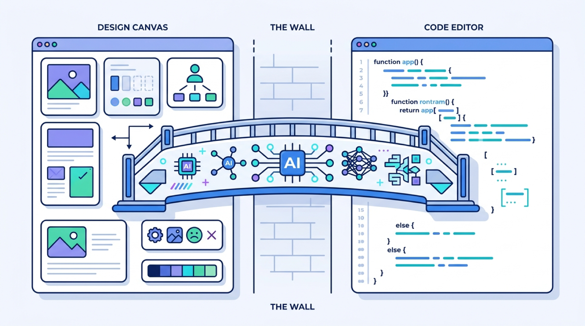
The design-code gap: where design intent gets lost between tools
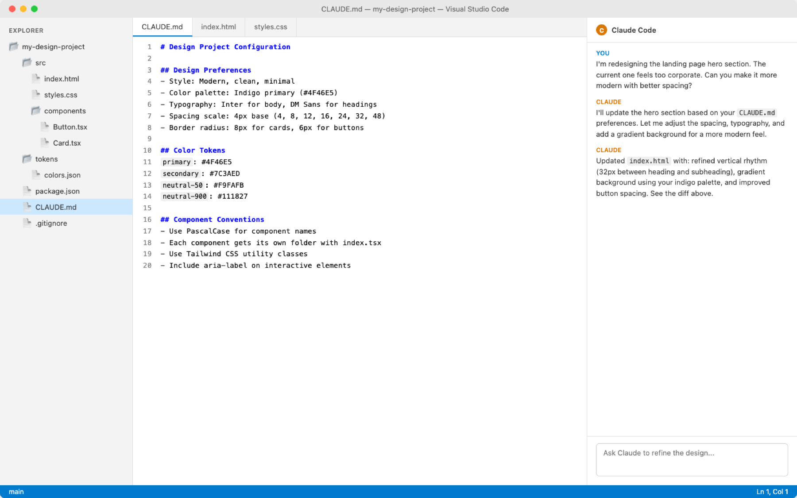
Three reading paths through the book, depending on your goals
01 The Design-Code Gap
Why designers need AI coding tools, what Claude Code is, and where it fits in your workflow
Claude Code is a collaborative AI agent that runs across your tools and can turn design intent into working code, but it works best when you understand its strengths and limits.
1.1 Why Designers Should Care About AI Coding Tools
Why Designers Should Care About AI Coding Tools
The gap between what you design and what ships has always existed. AI coding tools are the first thing that lets you cross it on your own terms.
Here is a scenario you might recognize. You have a clear vision for a component, a page, an interaction. You have built it in Figma down to the pixel. You hand it off to engineering. Three days later, what ships looks close but not right. The spacing is off. The hover state is different from what you specified. The responsive behavior collapses in ways you did not anticipate.
This is the design-code gap. It is not anyone's fault. It is a structural problem. Designers think in visual systems. Engineers think in code systems. The handoff between them is lossy, like compressing a high-resolution image into a low-resolution format. Information gets lost.
AI coding tools change this equation. They do not eliminate the gap, but they give you a way to cross it yourself, without waiting for someone else to translate your intent into code. You describe what you want in natural language, paste a screenshot, or point to a reference file. The tool generates working code. You iterate on the output. You stay in control of the design decisions while the tool handles the code execution.
Warning
This is not about replacing engineers. This is about expanding what you can do as a designer. The best results come when designers and engineers collaborate, with AI tools accelerating the parts that slow both sides down.
The scope of design work has been expanding for years. Product designers now maintain design systems in code. UX researchers build interactive prototypes instead of static wireframes. Brand designers create email templates and landing pages that live in code repositories. The line between "designer" and "front-end developer" has been blurring, and AI coding tools are accelerants for that shift.
Design-focused companies now treat AI-assisted coding as part of the product workflow, not a developer-only curiosity. The safer point is not that any one company endorses your workflow. The point is that design, code, and agent tooling are converging quickly enough that designers need a working mental model.
In my experience, the designers who benefit most from AI coding tools are not the ones trying to become developers. They are the ones who want to move faster, test ideas sooner, and reduce the friction between thinking and building. Claude Code is not the only tool in this space, but it is the one I have found most effective for design work, and the one this book focuses on.
1.2 What Claude Code Actually Is
What Claude Code Actually Is
Claude Code is an agentic coding tool. Not a chatbot. Not a design tool. A collaborator that reads your files, runs commands, and builds things.
Anthropic defines Claude Code as "an agentic coding tool that reads your codebase, edits files, runs commands, and integrates with your development tools." That is accurate but dense. Let me translate.
Think of Claude Code like a junior developer who sits in your tools and follows your instructions. You tell this developer what you want built. They read the relevant files, figure out how things work, write the code, run tests to verify it, and show you the result. You review, give feedback, and they iterate. That loop, where the tool reads your project, plans an approach, executes changes, and verifies the result, is the agentic loop. It is what separates Claude Code from a chatbot that only answers questions.
Describe
→
Read
→
Plan
→
Execute
→
Verify
Here is what that looks like in practice. You open Claude Code, point it at a project folder, and type a prompt. For example:
Starting a sessionbash
claude "Describe what this project does"
Claude Code reads the files in your project, builds an understanding of the structure, and responds with a summary. If you ask it to make changes, it reads the relevant files, writes the edits, and shows you a diff, a side-by-side comparison of what changed, like reviewing track changes in a document.
You control how autonomous Claude Code is. As of this edition, the documented permission modes include default, acceptEdits, plan, auto, dontAsk, and bypassPermissions. Availability varies by surface, account, and settings, so treat this table as a safety model rather than a permanent product reference:
Permission Modes in Claude Code
Mode
What Happens
When to Use
Default
Asks before each action
Learning the tool, first time with a project
Auto accept edits
Auto-approves file edits, asks for commands
Comfortable with changes, want to move faster
Plan mode
Read-only exploration, no changes made
Auditing a codebase, understanding structure
Auto mode
AI safety classifier decides
Trusted projects, repetitive tasks
Bypass permissions
No permission prompts
Only isolated containers, VMs, or disposable automation environments
Do not ask
Only pre-approved tools run
Locked-down scripts and CI where denial is safer than prompting
Start in Default mode. You will see every action before it happens, which builds trust and understanding. As you get comfortable, you can relax the permissions to move faster.
Key Distinction
Claude Code is a collaborator, not a magic button. It produces better results when you give it clear direction, review its output critically, and iterate. The designer who treats it like a conversation partner gets more from it than the one who expects a finished product from a single prompt.
1.3 The Claude Code Ecosystem Map
The Claude Code Ecosystem Map
Claude Code meets you wherever you work. Six primary surfaces, all connected to the same engine.
One of the most common questions I hear from designers is: "Where do I even open this thing?" The answer depends on what feels comfortable to you, because Claude Code runs in more than one place.
Think of it like Figma, but with more local context. Some configuration travels well: CLAUDE.md, settings, skills, and MCP server definitions can shape the same project across surfaces. Local folder state, cloud sessions, editor integrations, permission prompts, and available modes still differ. The practical rule is simple: verify the active folder, loaded instructions, and permission mode whenever you change surfaces.
Claude Code Surfaces for Designers
Surface
Best For
Designer Friendliness
Requires
Desktop app
Visual diff review, app preview, scheduled tasks
High
macOS or Windows
VS Code extension
Inline editing, live preview, file-level context
Medium-High
VS Code (free)
Web (claude.ai)
Quick tasks, no-install access, mobile handoff
High
Browser + subscription
Terminal CLI
Full control, scripting, automation
Low
Terminal comfort
JetBrains plugin
IntelliJ, WebStorm users
Medium
JetBrains IDE
iOS app
Remote monitoring, quick check-ins
Medium
iPhone + subscription
In addition to the six primary surfaces, Claude Code integrates with Slack (route tasks from team chat to code changes via @Claude mentions) and has a Chrome extension for debugging live web applications and comparing visual output. These are supplementary. The six surfaces above are where you will spend most of your time.
My Take
My take: for designers, the Desktop app or VS Code extension is the best starting point, not the terminal. The terminal is faster for experienced users, but the Desktop app gives you visual diff review without learning CLI conventions, and VS Code gives you inline editing in an environment that at least has a graphical interface. Start where you are comfortable. You can always try the terminal later.
Sessions are portable across surfaces. You can start a task on the web, pull it into the desktop app with /desktop, or check on progress from your phone using Remote Control. This matters for designers who move between their desk, meetings, and their phone throughout the day.
One practical note: Claude Code access, plan names, prices, rate limits, and feature availability change. Treat every price in this book as a snapshot, not procurement advice. Before buying or recommending a plan, verify Anthropic's official pricing and plan documentation and check whether your organization requires Team, Enterprise, API, Bedrock, Vertex, or another approved provider path.
Installing Claude Code (macOS)bash
curl -fsSL https://claude.ai/install.sh | bash
That command installs the CLI. The Desktop app and VS Code extension have their own installers and are covered in detail in Chapter 2.
1.4 How Claude Code Fits Your Design Workflow
How Claude Code Fits Your Design Workflow
Claude Code is not a replacement for your design process. It is an accelerant at specific stages where code execution is the bottleneck.
Every designer has a process. It might be formal or loose, but it usually follows a pattern: research, ideation, prototyping, testing, and handoff or implementation. Claude Code fits into specific stages of that process. It does not replace the thinking. It accelerates the execution.
Design Process Stage to Claude Code Feature
Design Stage
Claude Code Feature
Example
Research
Codebase exploration, file search
"Summarize how the current design system implements buttons"
Ideation
Quick prototype generation from descriptions
"Build a card component with a hero image, title, and CTA"
Prototyping
Interactive prototype from screenshots or specs
"Recreate this Figma frame as a responsive HTML page"
Testing
Visual verification, cross-browser screenshots
"Take a screenshot and compare it to this reference image"
Handoff
Production-ready code generation
"Refactor this prototype into a reusable React component"
The most powerful integration point is the design-to-code pipeline. Claude Code can accept image inputs: screenshots, mockups, wireframes, reference designs. You paste a screenshot of a Figma frame, and Claude generates the HTML, CSS, and JavaScript to implement it. Here are some prompts that work well for design work, taken directly from the official documentation:
Designer-relevant prompts from official docstext
Generate CSS to match this design mockup
What HTML structure would recreate this component?
[paste screenshot] implement this design. take a screenshot
of the result and compare it to the original. list
differences and fix them.
The last prompt is worth pausing on. Claude Code can take a screenshot of its own output, compare it to your reference, identify differences, and fix them. This is the visual verification loop, and it is the closest thing to having a design review conversation with a tool. You show it what you want. It builds something. It compares its work to your reference. It improves. You are the quality gate throughout.
Tip
For the strongest results, paste a screenshot alongside a text description. The screenshot gives Claude the visual target. The text gives it the constraints and preferences that a screenshot alone cannot convey: font family names, specific color values, responsive breakpoints, accessibility requirements.
Claude Code also connects to external tools through MCP (Model Context Protocol). Think of MCP like plugins for your design tool. Each one adds a new connection. You can connect Claude Code to Figma for design data, to Notion for documentation, to Slack for team communication, and to databases or APIs for live data. The connection is made with a single command:
Connecting to Figma via MCPbash
# Recommended current path: install Figma's Claude Code plugin
claude plugin install figma@claude-plugins-official
# Then run /plugin or /mcp and complete the OAuth connection.
Once connected, Claude Code can read Figma context such as components, variables, layout data, and Code Connect information. Figma's MCP documentation also describes write-to-canvas and web-to-Figma workflows for supported clients and plans. The right mental model is still conservative: Claude Code is not a visual design editor, but it can use approved Figma tools when you connect and authorize them.
My Take
My take: Claude Code's biggest advantage over canvas-first AI design tools is that it can produce real, editable, deployable code in the same repository where the product lives. Design tools still matter for exploration, alignment, and systems work. Claude Code matters when the design needs to become implementation without losing the review trail.
1.5 What Claude Code Can and Cannot Do
What Claude Code Can and Cannot Do
Honest assessment. Claude Code can do a lot, but it has real boundaries. Knowing them saves you frustration.
Every tool has a gap between what it promises and what it delivers. The gap narrows with practice, but it never fully closes. Here is what I have found Claude Code does well, where it falls short, and what to watch for.
Capabilities for Design Work
Task
Can Claude Do It?
Quality Level
Caveats
Generate HTML/CSS from a description
Yes
Good to very good
First output is a starting point; 2-4 iterations improve it
Generate code from a screenshot
Yes
Good
Pair screenshot with text for best results
Build interactive prototypes
Yes
Good
Simple interactions are reliable; complex animations need iteration
Verify visual output
Yes
Good
Desktop app and Chrome extension enable screenshot comparison
Maintain design system consistency
Yes, with CLAUDE.md
Very good
Requires a CLAUDE.md file encoding your design rules
Edit Figma files directly as a general-purpose visual editor
Limited
Workflow-dependent
Can use approved Figma MCP tools, including some write-to-canvas workflows; still requires authorization and visual review
Run design tools (Sketch, Adobe XD)
No
N/A
Not a design application; works with code files
Replace design thinking
No
N/A
Your judgment on hierarchy, usability, and aesthetics is irreplaceable
Three limitations deserve more detail.
Context windows fill up. Claude Code has a maximum amount of information it can hold in a single session. Long sessions degrade in quality because the tool loses track of earlier context. The fix is to start fresh between unrelated tasks and keep sessions focused. In Chapter 5, you will learn how to use CLAUDE.md to carry important context across sessions without re-explaining everything.
Output needs your review. Claude Code generates syntactically correct code most of the time. But correct code is not the same as good design. It might choose spacing values that are technically fine but do not match your design system. It might implement a layout that works but feels wrong aesthetically. You are the quality gate. Every time.
It requires a codebase or project folder. Claude Code works best when pointed at a directory with actual files. It can work in any folder, including a collection of markdown files or a notes vault, but it is not a standalone application. You give it a project, it works within that project.
Warning
Claude Code is not Figma. It does not have a canvas, a layers panel, or a visual editor. It works with code. But the code it produces creates visual output that you can preview in a browser, compare to your designs, and iterate on until it matches your intent. Your design judgment is essential. The tool accelerates execution; it does not replace taste.
Here is a practical example of how to use Claude Code for a common design task. Say you have a folder with a single HTML file and you want to generate a design tokens file from a screenshot of your brand guidelines:
Design token generation prompttext
[paste screenshot of brand guidelines]
Extract the design tokens from this brand guide and create
a CSS file with custom properties for:
- All brand colors (primary, secondary, neutral scale)
- Typography scale (heading sizes, body size, line heights)
- Spacing scale
- Border radius values
- Shadow values
Claude Code reads the screenshot, identifies the colors, sizes, and spacing in your brand guidelines, and generates a CSS file with custom properties. You review, adjust values that do not match, and save. What used to take a manual pass through a brand PDF now takes a single prompt and a review cycle.
My Take
My take: the biggest mindset shift for designers using Claude Code is treating AI output like a first draft from a junior developer. You would not expect a junior developer to nail your design on the first try. You would give them feedback, and they would improve. Claude Code works the same way. Your value is in the design direction and the quality review, not in the initial code generation.
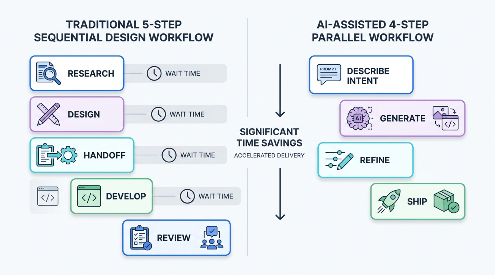
Traditional design workflow vs AI-assisted workflow: fewer handoffs, faster iteration
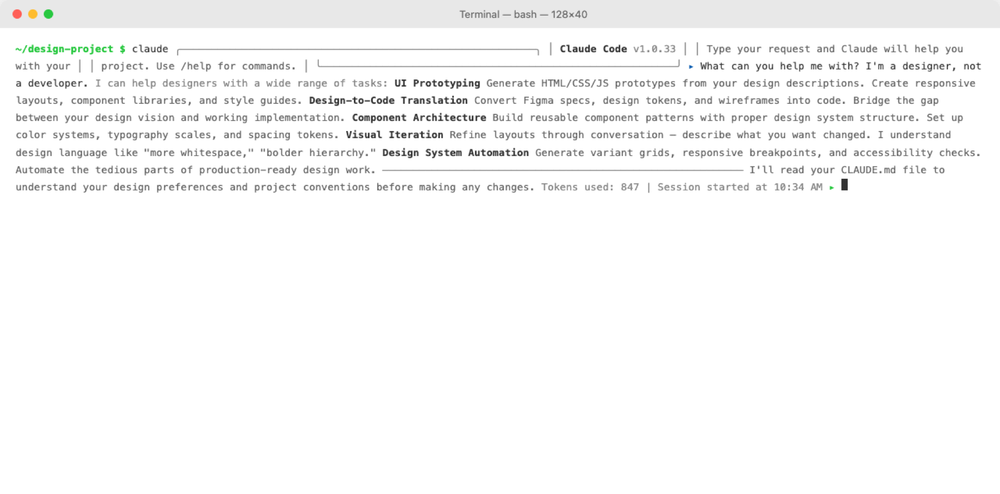
A first Claude Code conversation: asking what it can do for designers
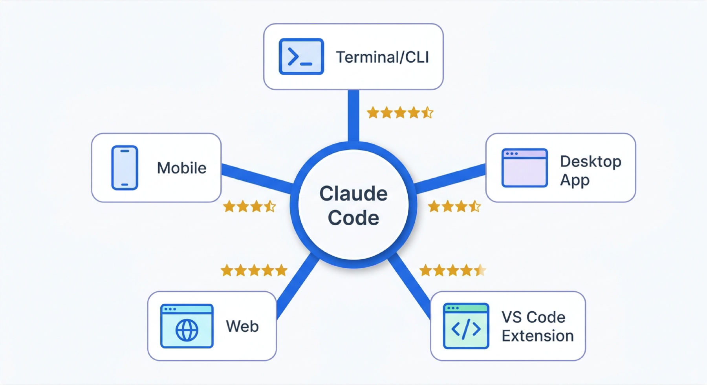
The Claude Code ecosystem: five surfaces, each with different designer-friendliness levels
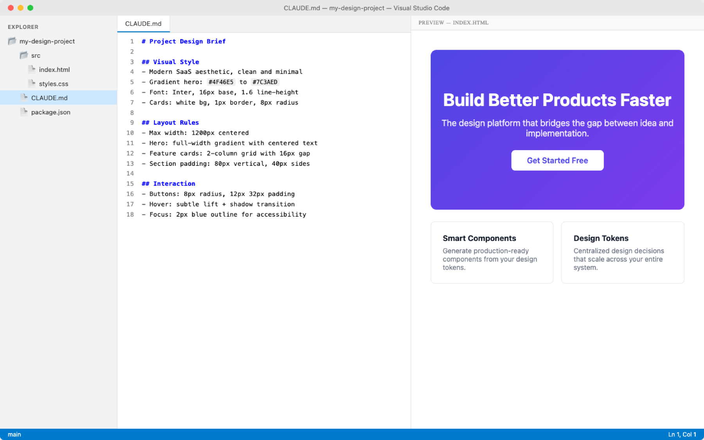
Where Claude Code fits in the standard design process: strongest at prototyping and testing
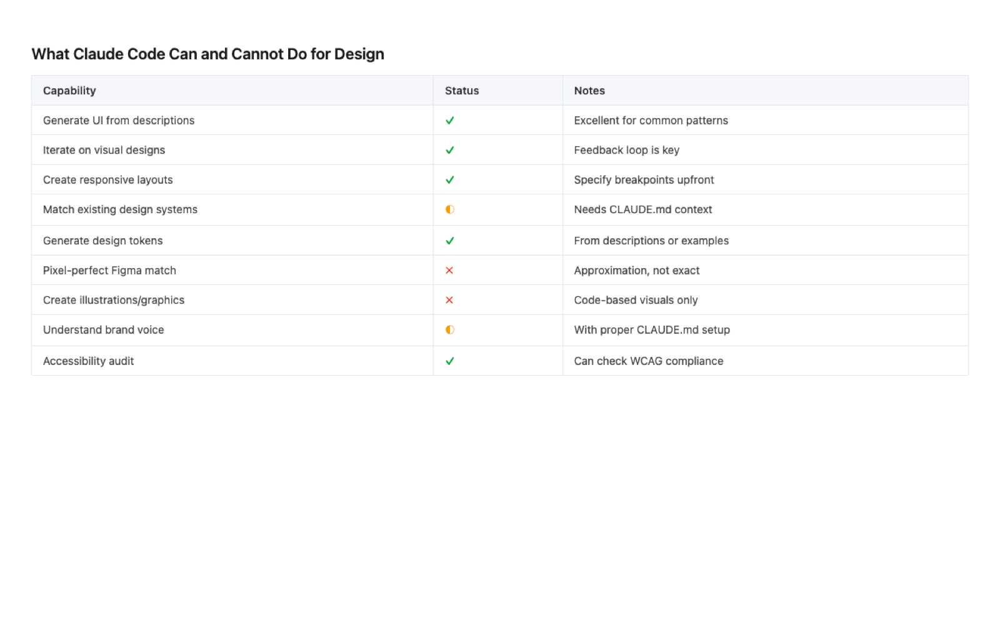
What Claude Code can and cannot do for design work: an honest assessment
2. Getting Started (No Terminal Fear Required)
Install Claude Code, have your first conversation, and understand what you are looking at
You can get Claude Code running in under ten minutes without ever opening a terminal, and your first interaction will show you exactly how it works.
In Chapter 1, you saw what Claude Code is and where it fits in a design workflow. Now it is time to get it running on your machine. This chapter walks you through choosing the right interface, installing, signing in, having your first conversation, and setting up a project folder.
If the word "terminal" makes you tense, good news: you do not need one. The Desktop app gives you a visual interface with buttons, menus, and a file browser. I recommend it as your starting point.
Before you start
Claude Code availability, plans, and install paths change quickly. Before upgrading or installing anything, verify Anthropic's official Claude Code and pricing pages. If you work inside a company, also check whether your organization requires Team, Enterprise, API, Bedrock, Vertex, or another approved provider route before you paste client work or source files into a session.
2.1 Choosing Your Entry Point
Choosing Your Entry Point
Claude Code runs on three primary surfaces, and the right one depends on how comfortable you are with developer tools.
All three surfaces connect to the same Claude Code engine. Your CLAUDE.md files, settings, and connected tools work across all of them. You are not locked into one choice. But your first experience matters, and I want you to start where the friction is lowest.
Here is how the three options compare for designers:
Inline editing, @-mentions for files, live preview
Terminal CLI
Comfortable with command line
5-10 minutes
Fastest workflow, full control, scripting
The Desktop app has a visual interface you navigate with clicks and menus, the same way you use Figma or any other design tool. It shows you a side-by-side comparison before any file is changed. It has a built-in file browser, a preview pane where you can see your running design, and a layout you can rearrange by dragging panes around.
VS Code is a strong second choice if you already use it for editing CSS or inspecting code. The extension integrates directly into the editor, so you can highlight code and ask Claude about it.
The terminal is the most powerful surface, but it is also the most intimidating for designers who have never used one. It is there when you want it, and later chapters cover it for specific tasks. For now, it is not your starting point.
My Take
If you are a designer who has never used a terminal, start with the Desktop app. Do not force yourself through the CLI. The Desktop app gives you visual diff review, a graphical file browser, and permission buttons you can click instead of typing "y" into a black box. You can always switch to the terminal later when you are curious, not because you have to.
Why: I have watched dozens of designers bounce off Claude Code because they started with the terminal and hit a wall of unfamiliar conventions. The ones who started with the Desktop app kept going.
Caution: Power users and developers on your team will prefer the terminal for speed. That is fine. Different tools for different comfort levels.
2.2 Installation Walkthrough
Installation Walkthrough
Step-by-step installation for the Desktop app, with fallback instructions for VS Code and the terminal.
I am going to walk you through the Desktop app installation first because it is the most straightforward path for designers. After that, I will cover VS Code and the terminal as alternatives.
Path A: Desktop App (Recommended)
The Desktop app is a standalone application you download and install, the same way you installed Figma or Sketch. No terminal, no package managers, no prerequisites beyond a paid Anthropic account.
1
Download the installer. Open your browser and go to the download page for your operating system:
macOS (Intel and Apple Silicon): claude.ai/download
Windows (x64): claude.ai/download
The page detects your OS automatically and gives you the correct installer.
2
Install the application.
macOS: Open the downloaded DMG file. A window appears with the Claude icon and your Applications folder. Drag the Claude icon into the Applications folder.
Windows: Double-click the downloaded installer executable. Follow the setup wizard prompts.
3
Launch the app and sign in. Open Claude from your Applications folder (macOS) or Start menu (Windows). Sign in with your Anthropic account — the same one you use at claude.ai.
4
Open the Code tab. At the top center of the app window, you see three tabs: Chat, Cowork, and Code. Click Code. This is where all your design work happens.
If you see a prompt to upgrade your subscription, your current plan does not include Claude Code. You need Pro, Max, Team, or Enterprise.
5
Select your environment. In the Code tab, you see an environment selector. Choose Local to run on your machine. This is the default and the one you want.
6
Select a folder. Click Select folder and choose any folder on your machine. If you do not have a project folder yet, create a new one on your Desktop called my-design-project. Claude Code works within this folder — it can read files, create files, and make changes only inside it. On Windows, the Code tab requires Git for Windows (git-scm.com/downloads/win). Most Macs include Git by default.
You are now looking at the Claude Code workspace. The prompt box at the bottom is where you type your instructions. Before we use it, let me cover the alternative paths.
Path B: VS Code Extension
If you already use VS Code for any part of your workflow — editing CSS, inspecting code snippets, working with developers — the extension is a natural fit. It puts Claude Code directly inside your editor.
1
Open the Extensions view. In VS Code, press Cmd+Shift+X (Mac) or Ctrl+Shift+X (Windows/Linux). This opens the Extensions panel on the left side.
2
Search and install. Type Claude Code in the search box. Click Install on the extension published by Anthropic.
3
Open the Claude panel. Click the Spark icon in the editor toolbar (top-right corner, visible when a file is open). Alternatively, press Cmd+Shift+P to open the Command Palette, type Claude Code, and select Open in New Tab.
4
Sign in. A sign-in screen appears in the Claude panel. Click Sign in and complete the authorization in your browser. After you authorize, return to VS Code.
If the extension does not appear after installation, restart VS Code or run Developer: Reload Window from the Command Palette.
Path C: Terminal CLI
The terminal is the fastest path once you are comfortable with it. For now, I am including it for completeness. You can skip it and come back later.
macOS and Linux:
curl -fsSL https://claude.ai/install.sh | bash
Windows PowerShell:
irm https://claude.ai/install.ps1 | iex
Verify the installation:
claude --version
This prints the installed version number. If you see a version number, Claude Code is installed. If you see command not found, the install directory is not in your PATH. Run this fix:
echo 'export PATH="$HOME/.local/bin:$PATH"' >> ~/.zshrc
source ~/.zshrc
claude --version
For a thorough check, run the diagnostic command:
claude doctor
Regardless of which surface you chose, the next steps work the same way. You type what you want, Claude responds, and you decide whether to accept the changes.
2.3 Your First Conversation with Claude
Your First Conversation with Claude
Using Claude Code is a conversation, not a command line. You describe what you want, and Claude responds with a plan and actions.
Think of it like giving a brief to a junior developer. You would not hand them a single word and expect great results. You would describe the intent, the constraints, and the outcome you want. The same principle applies here.
Let me walk you through your first interaction. Open Claude Code in whichever surface you installed.
Desktop App: Your First Prompt
1
Make sure you are in the Code tab with a folder selected. If you created my-design-project earlier, select that folder.
2
Click the prompt box at the bottom of the window and type this:
What can you help me with? I'm a designer, not a developer.
3
Press Enter. Claude responds with an explanation of what it can do. Read through the response. You will see it mentions creating files, editing code, explaining code, and building prototypes — all things that are relevant to your design work.
That was your first interaction. You asked a question, and Claude answered. Nothing was changed on your machine. No files were touched. This was a read-only conversation.
Now let me show you what happens when you ask Claude to do something:
Create an index.html file with a centered heading that says "Hello, Design!"
When you send this prompt, several things happen in sequence:
1
Claude thinks. You see a brief moment where Claude considers your request. In the Desktop app, you might see a "thinking" indicator. In the terminal, you see a spinner.
2
Claude proposes a change. A diff view appears showing what Claude wants to create or modify. In the Desktop app, this shows up as a new file with green highlighted text. In VS Code, you see a side-by-side diff panel.
3
You accept or reject. This is the critical part. Claude does not change your files without your approval. Click Accept to apply the change, or Reject to decline it. In the default "Ask permissions" mode, every file edit requires your explicit approval.
4
The change is applied. After you accept, the file is created or modified on your machine. You can see it in the file browser or navigate to it in Finder/Explorer.
Tip
Keep your first prompts specific but small. "Create a file with a heading" is better than "Build me a website" for your first interaction. You want to see the full cycle — prompt, propose, accept, result — without being overwhelmed by a massive output. You will build bigger things soon.
VS Code: Your First Prompt
If you are using the VS Code extension, the flow is the same:
1
Open a project folder in VS Code. Any folder works — even an empty one.
2
Click the Spark icon in the editor toolbar (top-right) or Activity Bar (left sidebar). The Claude panel opens.
3
Type your prompt in the input box at the bottom of the Claude panel:
Create an index.html file with a centered heading that says "Hello, Design!"
4
Press Enter. Claude proposes the change. You see a diff in the panel. Click Accept or Reject.
Terminal: Your First Prompt
For terminal users, the flow looks like this:
cd ~/Desktop/my-design-project
claude
> What can you help me with? I'm a designer, not a developer.
Claude responds with an explanation. Then try:
> Create an index.html file with a centered heading that says "Hello, Design!"
Claude shows the proposed change and asks for confirmation. Press y to accept or n to reject.
Congratulations. You have completed your first Claude Code interaction. You described what you wanted, reviewed what Claude proposed, and decided whether to apply it. That is the fundamental loop — describe, review, accept or reject, iterate. Every session follows this pattern.
2.4 Understanding What You Are Looking At
Understanding What You Are Looking At
The Claude Code interface has several elements, and each one carries specific information about your conversation and your project.
If you are used to Figma, you are accustomed to a canvas with layers, properties, and tool panels. Claude Code has its own layout, and once you understand what each element shows, the interface feels familiar rather than overwhelming.
Desktop App Interface
The Desktop app is organized into draggable panes you can rearrange. Think of it like arranging panels in Figma — you drag the panes where you want them.
The main panes are:
Element
What It Shows
Designer Analogy
Chat pane
Your conversation with Claude — messages, responses, and actions
Like a Slack thread with a teammate
Diff pane
Side-by-side comparison of what will change in each file
Like version compare in Figma's version history
Preview pane
A browser view of your running design
Like the Figma preview window, but for code output
Terminal pane
A command-line interface (optional, can ignore)
Like the Figma console — advanced users only
File pane
File viewer and editor — click file names in chat to open them
Like the layers panel showing every file
Prompt box
Where you type your instructions to Claude
Like the search bar — it is how you communicate intent
Prompt Box Controls
The prompt box at the bottom of the Code tab has several controls:
[Environment: Local] — Choose Local (your machine), Remote (cloud), or SSH
[Folder: my-design-project] — Choose which project folder Claude works in
[Model: Sonnet] — Pick which model responds (Opus, Sonnet, Haiku)
[Mode: Ask permissions] — Controls how much autonomy Claude has
[+] — Attach files, add connectors, access skills
[Send] — Submit your prompt
Permission Modes
Permission modes are the safety net. They control how much Claude can do without asking you first. Think of permission modes like approval settings in a design review tool — you control how much autonomy your collaborator has.
Mode
What Happens
When to Use
Ask permissions
Claude asks before every file edit and command
Your first sessions. You see every change before it happens.
Auto accept edits
File edits are applied automatically; commands still ask
When you trust the output and want faster iteration
Plan mode
Claude reads files and proposes a plan without editing
Complex tasks where you want to review strategy first
Auto
Background safety checks verify alignment
Experienced users with Max/Team/Enterprise plans
Start with Ask permissions. You will see every proposed change before it touches your files. Switch to other modes when you feel confident about the output quality.
VS Code Extension Interface
The VS Code extension presents the same information in a panel layout:
Spark icon (editor toolbar or Activity Bar) — Opens the Claude panel
Prompt box (bottom of panel) — Type instructions here
Permission mode indicator — Click to switch modes
@-mention support — Type @filename to include a file as context
Session history button (top of panel) — Browse past conversations
One feature unique to VS Code: @-mentions. When you type @ followed by a file name in the prompt box, Claude includes that file's contents as context. This is like saying "look at this file" before giving your instruction.
@styles.css The heading font looks too small. Increase it to 24px.
The extension also supports selection awareness. If you highlight specific lines of code in the editor, Claude can see what you selected and responds with that context in mind.
Keyboard Shortcuts Worth Knowing
You do not need to memorize these, but they speed things up once you are comfortable:
Desktop app (Mac):
Cmd+N New session
Cmd+W Close session
Esc Stop response
Cmd+Shift+D Toggle diff pane
Cmd+Shift+P Toggle preview pane
Cmd+/ Show all shortcuts
VS Code extension:
Cmd+Esc Toggle focus between editor and Claude
Cmd+Shift+Esc Open Claude in a new tab
Option+K Insert @-mention for files
Cmd+N New conversation
Replace Cmd with Ctrl on Windows and Linux.
2.5 Setting Up for Design Work
Setting Up for Design Work
Create a project folder that becomes your workspace for the prototype exercise in Chapter 3.
Every Claude Code session starts in a folder. That folder is your workspace — the place where Claude reads files, creates files, and makes changes. Think of it like a Figma project file: everything related to one piece of work lives in one place.
Creating Your Project Folder
Desktop app:
1
Create a new folder on your Desktop called my-design-project. You can do this in Finder (Mac) or Explorer (Windows) — right-click, select New Folder, and name it.
2
In the Claude Desktop app, click Select folder in the Code tab. Navigate to your Desktop and select my-design-project.
VS Code:
1
Open VS Code. Select File > Open Folder from the menu bar. Navigate to your Desktop, click New Folder, name it my-design-project, and click Open.
2
Open the Claude panel by clicking the Spark icon.
Terminal:
mkdir ~/Desktop/my-design-project
cd ~/Desktop/my-design-project
git init
claude
The git init command creates a Git repository in your folder. This gives you checkpoints — snapshots of your files that you can rewind to if Claude goes in a direction you do not like. Think of it like Figma's version history, but for your code files.
Adding a CLAUDE.md File
CLAUDE.md is a special file you place in your project folder. Claude reads it at the start of every session. Think of it like a brand style guide in Figma — a document that defines your colors, typography, spacing, and component rules. Except this one is read by Claude before every conversation, not by a human developer.
For now, let me show you how to create a basic one. In your Claude Code session, type:
Create a CLAUDE.md file with these instructions:
- Use semantic HTML for all markup
- Use CSS custom properties for colors and spacing
- Write clean, well-structured CSS with comments for sections
- When building UI, prioritize accessibility and responsive design
Claude creates the file and shows you the diff. Accept the change. Now, every time you start a new session in this folder, Claude reads those instructions and follows them.
Chapter 5 goes deep into CLAUDE.md for designers — design tokens, brand colors, typography scales, and component conventions. For now, this basic version gives you a foundation.
Your Project Structure
After creating the CLAUDE.md file, your project folder looks like this:
my-design-project/
CLAUDE.md <-- Instructions Claude reads every session
.claude/ <-- Claude Code config (auto-created, ignore for now)
settings.json
In the next chapter, you will add an index.html file and start building your first design prototype. This folder will grow as you build, but the structure stays simple.
Verifying Your Setup
Before moving on, confirm everything is working. In your Claude Code session, type:
Read the CLAUDE.md file and confirm you understand the instructions.
Claude should respond by reading the file and summarizing the instructions back to you. If it does, everything is connected and working. You have a workspace, Claude understands your preferences, and you are ready to build.
My Take
Setting up a project folder and a CLAUDE.md file before you build anything is the single best investment of your time in this chapter. Every session after this benefits from that file. Designers who skip this step end up re-explaining their preferences in every conversation. Those who take five minutes to create it get consistent output from day one.
Why:CLAUDE.md is the project memory you control. Claude Code may also have user-level or product-level memory features, but project instructions are the reliable source of truth you can review, commit, and share with a team. Put stable design rules there; keep secrets, client-confidential material, and temporary notes out of it.
What Claude Code can touch
Claude Code works inside the folder or project you open, plus any additional directories or tool integrations you explicitly configure. Screenshots, pasted files, MCP servers, browser sessions, and shell commands can expand what the agent can see or do. Treat every permission prompt as a scope decision: are you comfortable with this tool reading or changing this asset right now?
Caution: Do not over-engineer your CLAUDE.md at this stage. A few clear instructions are better than a comprehensive document you never update.
You installed Claude Code. You had your first conversation. You understand the interface. You have a project folder with a CLAUDE.md file. Everything from this point builds on what you did here.
In Chapter 3, you will use this workspace to build your first design prototype — a hero section for a product landing page, generated entirely from a description. You will go from an idea in your head to a working, viewable prototype in a single session.
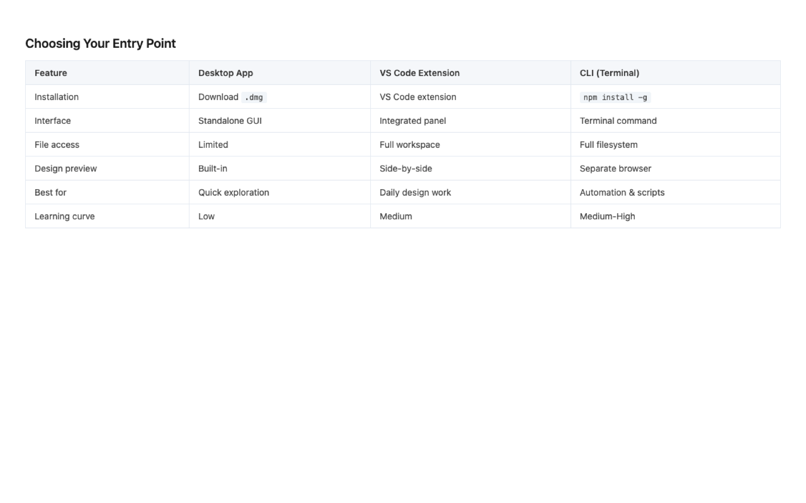
Choosing your entry point: Desktop app is recommended for most designers
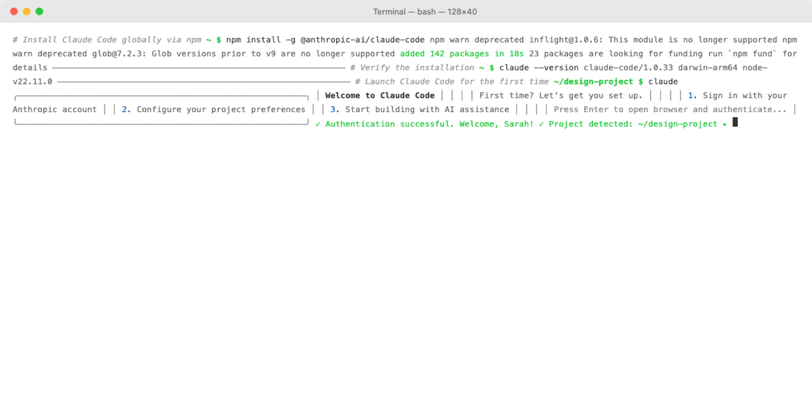
Installing Claude Code via npm: the complete terminal output
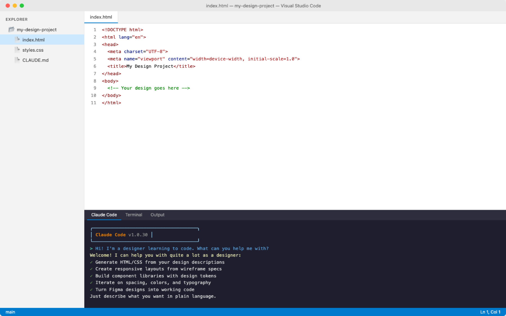
Your first conversation: Claude explains what it can do for designers
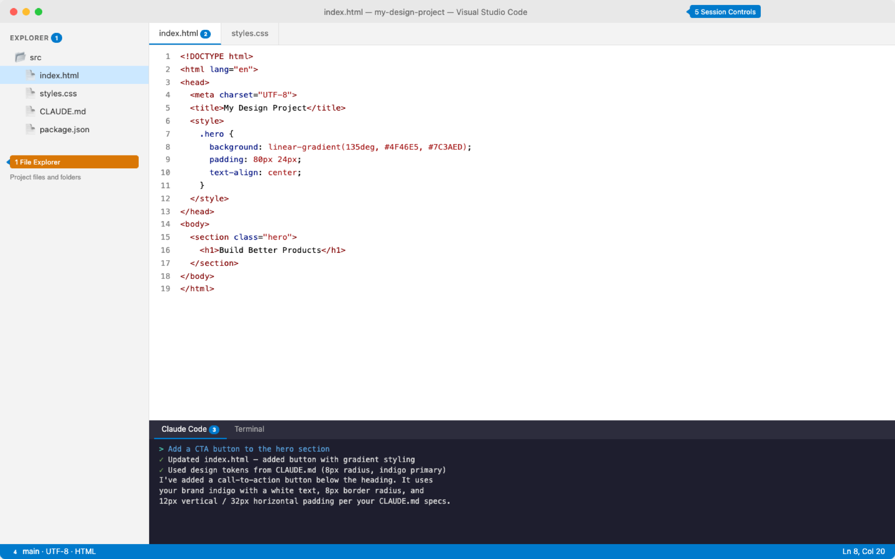
Annotated VS Code interface showing every Claude Code element a designer needs to know
Your First Design Prototype
Describe a design, watch Claude build it, and learn to iterate
You have Claude Code installed. You have a project folder. Now you are going to build something real — a hero section for a product landing page, starting from a description in your head and ending with a working prototype you can see in your browser. This chapter walks through every step.
Describe
→
Review
→
Refine
→
Repeat
That is the design loop. Everything in this book builds on it. By the end of this chapter, you will have run through it three times and built something you can open in a browser. Not a screenshot. Not a mockup. A real, working HTML file.
3.1 What We Are Building
What We Are Building
We are building a hero section — the top banner of a landing page. If you have designed one in Figma, you know exactly what this is.
A hero section is the right first project for three reasons. You already know what a good one looks like, so you can judge the output. It involves layout, typography, color, and spacing — the fundamentals of visual design. And it can live in a single HTML file with no dependencies, no build tools, no npm.
Here is the design brief:
Element
Specification
Background
Full-viewport gradient, dark navy to slate blue
Heading
Large white text: "Build faster. Ship smarter."
Subheading
Lighter gray, smaller: "The AI-powered tool that understands your codebase"
CTA button
Blue (#3b82f6), white text, rounded corners, hover effect
Layout
Vertically and horizontally centered
Font
System font stack (no external fonts needed)
Nothing exotic. A hero section you have designed a hundred times. The difference is that this time, you are going to describe it to Claude Code instead of building it yourself.
Why a single HTML file?
This chapter deliberately uses plain HTML with inline CSS. No frameworks, no build tools, no React. The goal is to learn the design loop, not to learn a framework. Single-file HTML is the fastest path from idea to browser. Frameworks come later in the book, once you are comfortable with the loop.
3.2 Describing Your Design Intent
Describing Your Design Intent
The prompt is where your design skill meets Claude's code ability. How you describe what you want directly determines what you get back.
Think of the prompt like a design brief you would hand to a developer. A vague brief produces generic work. A specific brief produces work that matches your intent. The same principle applies here.
Specific prompt
"Create a single HTML file called hero.html with a hero section. Full-viewport height with a gradient background from dark navy #0a1628 to slate blue #1e3a5f. Large white heading that says 'Build faster. Ship smarter.' A subheading in light gray (#94a3b8) that says 'The AI-powered tool that understands your codebase.' A centered call-to-action button with rounded corners, white text on blue (#3b82f6), with a hover effect. Use system fonts. Center everything vertically. All CSS inline in a style tag."
Vague prompt
"Make a nice landing page hero section."
The vague prompt leaves every decision to Claude. The specific prompt tells Claude exactly what you want — colors, copy, layout, fonts, file structure. Both will produce output. Only one will produce output that matches your vision.
Prompt Style
What You Get
When to Use It
Vague
Generic defaults, Claude's aesthetic choices
Exploring ideas, getting a starting point you will heavily revise
Moderate
Decent structure, some specific details right
When you have a general direction but are flexible on details
Specific
Output close to your intent, small iteration needed
When you have a clear design in mind and know the details
The prompt does not need to be perfect. It needs to be specific about what matters to you. Colors, copy, and layout are the three things to specify. Let Claude handle reasonable defaults for everything else.
My Take
The biggest mindset shift for designers using AI is treating the first output like a first draft from a junior developer, not a finished design. Your value is in the iteration and design judgment, not the initial generation. Some simple designs will come out near-perfect on the first try. Most will need two to four rounds of feedback. That is the process working as intended.
3.3 First Generation
The First Generation
Time to run the prompt and see what Claude produces. Open Claude Code in your project folder and type the prompt.
If you are using the Desktop app, open it and navigate to the project folder you created in Chapter 2. If you are using the VS Code extension, open the folder in VS Code and open the Claude Code panel. If you are in the terminal, navigate to your project folder and type claude to start a session.
Type this prompt:
Create a single HTML file called hero.html with a landing page hero section.
Design requirements:
- Full-viewport height hero section with a gradient background
(deep navy #0a1628 to slate blue #1e3a5f)
- Large white heading: "Build faster. Ship smarter."
- Subheading in light gray: "The AI-powered tool that understands your codebase"
- A centered call-to-action button with rounded corners, white text on
a bright accent color (#3b82f6), with a subtle hover effect
- Use system fonts: -apple-system, BlinkMacSystemFont, 'Segoe UI', sans-serif
- All CSS must be inline in a <style> tag within the HTML file
- No external dependencies or frameworks
Hit Enter. Claude will think for a moment and then create the file. You will see it write the HTML and CSS, explaining what it is doing along the way.
That is a complete, working hero section in a single file. The CSS uses flexbox to center everything — the same as using align center and justify center in Figma. The gradient, colors, fonts, and copy all match the brief. There is even a hover state on the button that darkens the color and lifts it slightly.
The first generation will not be perfect. But notice how close it gets to the brief. The colors are right. The layout is centered. The typography hierarchy is there. The hover state was not explicitly asked for — Claude added it because it is a common pattern for buttons. This is Claude making reasonable defaults.
Tip: Open it right now
Before reading further, open the file in your browser. Seeing the output makes everything in this chapter more concrete. On macOS, type open hero.html in the terminal. On Windows, type start hero.html. Or drag the file from Finder into your browser window. Come back when you have seen it.
3.4 Iterating on the Design
Iterating on the Design
The first output is a starting point, not the finish line. Now you iterate — the same way you would give feedback on a mockup, except the mockup updates instantly.
Each iteration round focuses on a different kind of change. This is deliberate. It teaches you the three main types of design feedback you will give Claude: value adjustments, feature additions, and structural changes.
Round 1: Adjusting Values
The hero section is close, but the spacing feels tight and the button is undersized. You want to adjust specific values — the same kind of tweak you would make in Figma's inspector panel.
Type this follow-up prompt in the same Claude Code session:
The hero section looks good overall. Make these changes:
1. Add more vertical padding — the heading feels cramped at the top.
Add 120px padding-top and 80px padding-bottom.
2. The CTA button is too small. Make it larger: 18px font size,
16px vertical padding, 40px horizontal padding.
3. Add a subtle text-shadow to the heading for depth:
0 2px 4px rgba(0,0,0,0.3)
4. Add a semi-transparent white overlay pattern — like a very subtle
geometric grid — behind the text using CSS only.
Claude reads your feedback and modifies the file. The changes are specific CSS property adjustments — padding values, font sizes, shadow definitions. This is the easiest type of iteration because you are telling Claude exactly which values to change.
Notice the prompt style. Each change is numbered. Each specifies the CSS property and the exact value. This is not about learning CSS syntax — it is about being precise about what you want changed. You can describe changes in plain English too ("make the heading bigger"), but exact values leave less room for misinterpretation.
Round 2: Adding Features
The spacing and sizing are better. Now you want to add something new — a radial gradient and a fade-in animation. These are features that did not exist in the first output.
Better. Two more changes:
1. The gradient feels flat. Change it to a radial gradient that radiates
from the center-top of the viewport. Keep the same colors.
2. Add a subtle animation: the heading should fade in and slide up 20px
when the page loads. Use CSS @keyframes. Keep it smooth —
0.8s ease-out.
Claude swaps the linear gradient for a radial one and adds a @keyframes animation. The heading now fades in and slides up when the page loads. These are additions, not adjustments — Claude is creating new CSS from your description.
The key phrase in this prompt is "fade in and slide up 20px." That is design language. Claude translates it into the correct CSS animation. You did not need to know the @keyframes syntax. You described the visual effect you wanted.
Tip: Use design language
Describe what you want to see, not the CSS to write it. "Fade in and slide up" works. "Add a staggered delay so elements appear one after another" works. "Make the button feel clickable on hover" works. Claude knows CSS. You know design. Play to your strengths.
Round 3: Structural Changes
This is where it gets powerful. Instead of typing more changes, paste a screenshot of a hero section you like. Claude can read images and use them as reference.
Find a hero section you admire from material you are allowed to use: your own work, an internal reference approved for this project, a public product page used only for structural inspiration, or a screenshot you have permission to share with an AI tool. Do not ask Claude to copy another company's brand, artwork, icons, proprietary copy, or exact visual identity.
[Paste screenshot of a reference hero section]
Use this screenshot for layout structure only. Do not copy the brand,
imagery, icons, typography, proprietary copy, or exact visual identity.
Match the general text positioning and button placement, but keep my
current colors and copy.
Specifically: move the text block to the left side of the viewport
instead of centered, and add a placeholder area on the right that
could hold an illustration later (a rounded rectangle with a
subtle border, 400px wide).
In the terminal, paste images with Ctrl+V (not Cmd+V). In the Desktop app and VS Code extension, the standard paste shortcut works.
Claude reads the screenshot, understands the layout structure, and restructures the hero section. The centered layout becomes a split layout — text on the left, placeholder on the right. Your colors and copy stay the same.
Reference safely
Screenshot prompting is powerful and legally sensitive. Use references to communicate structure, density, interaction intent, and visual hierarchy. Do not use it to clone protected creative work, client-confidential screens, unreleased product designs, logos, illustrations, icon sets, or copy you do not have rights to reuse.
Three rounds took you from a centered, static hero section to a split-layout hero with a radial gradient, geometric grid overlay, staggered fade-in animation, and an illustration placeholder. Each round focused on one type of change:
Round
Change Type
What You Learned
1
Value adjustments
Claude understands specific CSS property changes with exact values
2
Feature additions
Claude can add new behavior from design-language descriptions
3
Structural changes + image reference
Claude can read screenshots and restructure layouts to match
When iteration goes off track
If you have corrected Claude more than twice on the same issue in one session, the conversation context gets cluttered with failed approaches. Run /clear and start a fresh session with a more specific prompt that incorporates what you learned. Think of /clear as creating a new artboard — a clean slate with better information.
3.5 Viewing Your Prototype
Viewing Your Prototype
You have a file. Now you need to see it. Here are the ways to view your prototype, from simplest to most powerful.
Method 1: Open directly in your browser
The fastest path. One command, no installation required.
1
Open a terminal window and navigate to your project folder.
2
Run one of these commands depending on your operating system:
# macOS
open hero.html
# Windows
start hero.html
# Linux
xdg-open hero.html
You can also run this directly from within Claude Code using the ! prefix, which executes shell commands without leaving your session:
! open hero.html
This opens the file using the file:// protocol. It works for any self-contained HTML file with inline CSS. No server needed.
Method 2: VS Code Live Server
If you are using VS Code, the Live Server extension creates an auto-refresh loop. Every time Claude edits the file, the browser updates.
1
Install the "Live Server" extension in VS Code (by Ritwick Dey).
2
Open hero.html in VS Code.
3
Right-click in the editor and select "Open with Live Server."
4
Your browser opens at http://127.0.0.1:5500/hero.html. Changes auto-refresh on save.
Live Server is the best option during the iteration phase because Claude edits the file and the browser refreshes automatically. You see changes without switching windows.
Method 3: Claude Code with browser access
The most powerful option. If you have the Claude Code Chrome extension installed (version 1.0.36 or later), Claude can open the browser, see your output, and compare it against a reference screenshot.
Start Claude Code with browser support:
claude --chrome
Then prompt Claude to verify the output:
Open hero.html in the browser. Compare the rendered layout to
this reference screenshot [paste screenshot]. List every visual
difference and fix each one.
Claude opens the file in Chrome, sees what it looks like, compares it to your reference, and makes corrections. This closes the feedback loop entirely — Claude can see what you see.
My Take
The Chrome extension is the most immediately powerful integration for designers, because it gives Claude eyes on the output. Being able to say "compare what you built to this screenshot and fix the differences" is a fundamentally different workflow than describing changes in words. If you do one thing after finishing this chapter, install the Chrome extension and try the screenshot comparison workflow.
3.6 What Just Happened
What Just Happened
Step back and look at the process you just ran. Three things happened that are worth naming explicitly.
First, you translated a visual design into a text description. This is a skill, and it gets better with practice. You started with a specific prompt that included colors, copy, layout, and font choices. The more precise your translation, the closer the first output gets to your intent.
Second, you iterated in rounds, each focused on a different kind of change. Value adjustments (spacing, sizing), feature additions (animation, gradient), and structural changes (layout reflow). These three types cover most of the design feedback you will ever give Claude.
Third, you closed the loop by viewing the output in a browser and using what you saw to inform the next round. This is the same feedback loop you use with human developers — you review, you give notes, they implement. The difference is speed. Each round took seconds instead of hours.
Describe intent
→
Claude generates code
→
You review in browser
→
You describe changes
→
Repeat
This is the design loop: describe, review, refine. Everything else in this book builds on this loop. The next chapter deepens the "describe" part — how to write prompts that communicate visual intent more effectively. Because the better you get at describing what you want, the faster the loop converges on your design.
You just built a working prototype from a description. That is real. It is not a mockup in Figma waiting for a developer. It is not a static image. It is a file that opens in a browser, with working hover states and animations, that you generated and refined in a single session. The gap between design intent and working code is shorter than it has ever been.
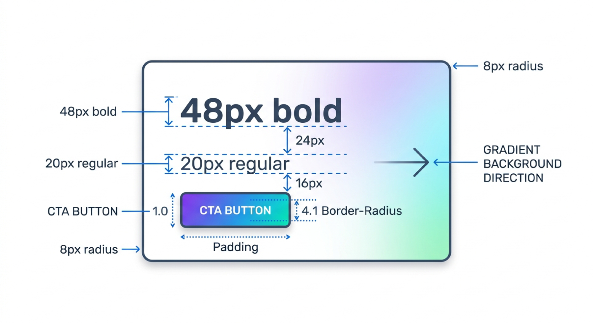
The design brief: a hero section with heading, subheading, and CTA button
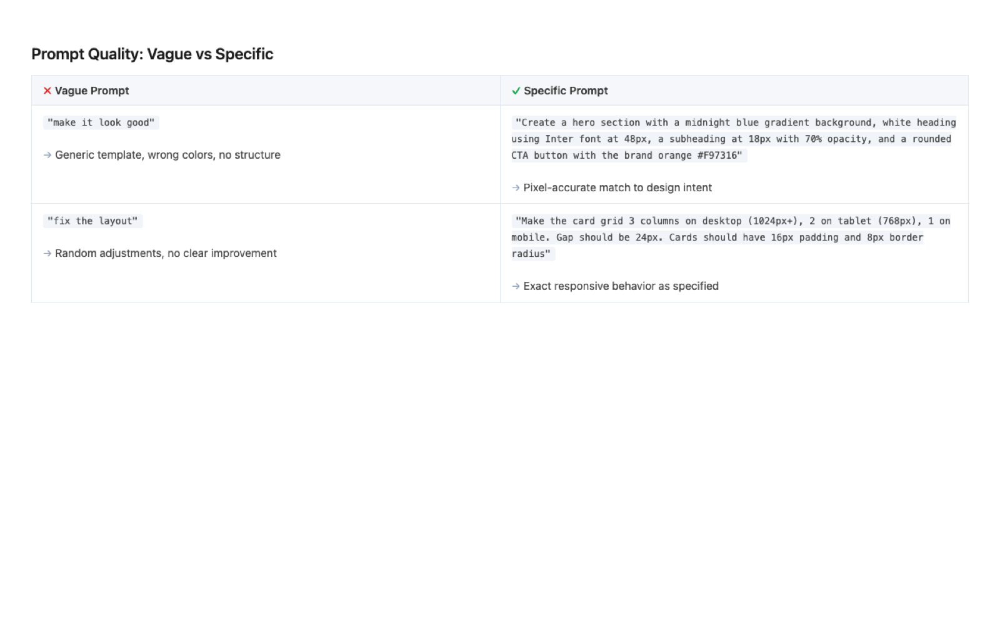
Vague prompt vs specific prompt: the output quality difference is dramatic
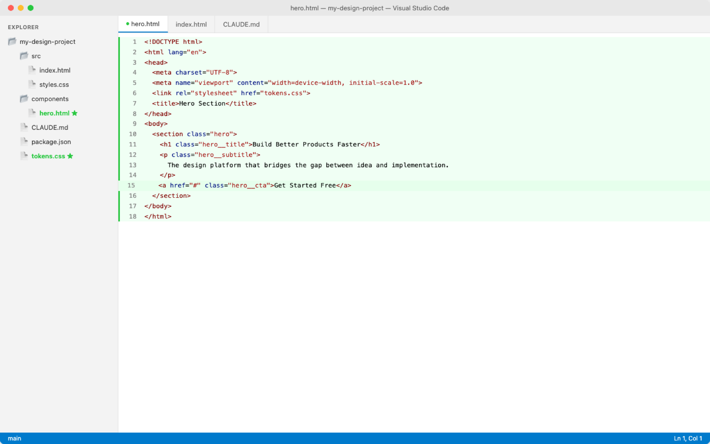
Claude Code generates the hero section: prompt, file creation, and code output
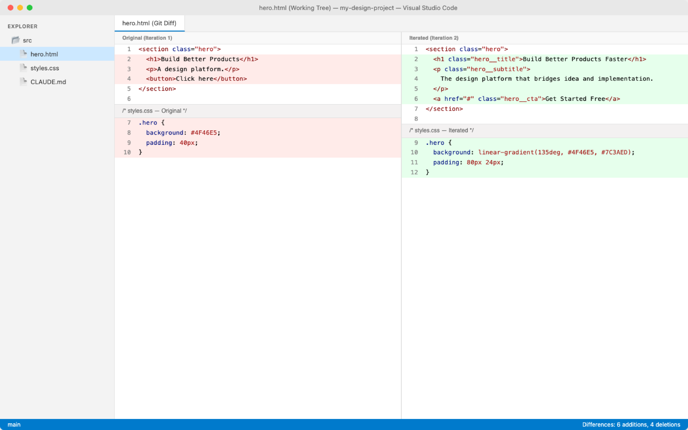
Three iterations of the hero section: basic to polished in three rounds of feedbackThe finished prototype: what your hero section looks like in the browser
The Art of Prompting for Design
How to communicate visual intent to an AI that thinks in code
Good design prompts translate visual intent into structured instructions. This chapter is the one you will come back to. It covers how design prompts differ from code prompts, maps design concepts to their CSS equivalents, gives you copy-paste prompt templates for common tasks, and names the patterns and antipatterns that determine whether your output is great or generic.
You already think in design language: hierarchy, contrast, rhythm, whitespace. Claude Code thinks in code: flexbox, padding, color values, z-index. The prompt is your translation layer between these two worlds. The better you translate, the better the output.
4.1 Why Design Prompts Are Different
Why Design Prompts Are Different
Prompts for visual design outcomes require a different approach than prompts for code functionality. The gap between "I want it to feel premium" and actual CSS properties is wider than most people expect.
A coding prompt asks for a function that does something. The output either works or it does not. A design prompt asks for visual qualities: spacing, color, hierarchy, mood. The output exists on a spectrum from generic to precise. The difference matters because Claude has a default aesthetic it falls back to when instructions are vague.
Generic AI design output often drifts toward a polished but familiar house style: soft backgrounds, large type, warm accents, rounded cards. This is not bad. It is what happens when you have not specified a stronger system. The more concrete your instructions, the more you override generic defaults.
Design prompt with concrete constraints
"Build a pricing card with a dark background (#0A0A0A), gold accent (#E8C547), and 'Space Grotesk' at 700 weight for the heading. 12px border radius. 24px internal padding. Shadow: 0 4px 12px rgba(0,0,0,0.08). Three pricing tiers in a row on desktop, stacking on mobile."
Design prompt with subjective language
"Build a pricing section that looks modern and premium. Use a nice color scheme. Make the cards stand out."
The second prompt produces output. It might even look decent. But it will not match your design intent, because "modern" and "premium" and "nice" mean something different to Claude than they do to you. The first prompt leaves no ambiguity. Every visual decision is specified or delegated intentionally.
The specificity spectrum
You do not need to specify every pixel. The right level of specificity depends on your goal. If you want Claude to explore, give a loose direction and let it propose options. If you want Claude to match a specific design, give exact values. Most productive prompts sit in the middle: specific about what matters (colors, layout, typography) and open about what does not (exact shadow values, transition timing).
4.2 The Design-to-Code Translation Layer
The Design-to-Code Translation Layer
Designers and CSS speak different dialects of the same language. Learning the mapping between design concepts and CSS properties is the single most effective way to improve your prompts.
You do not need to learn CSS syntax. You need to learn the vocabulary — the property names that Claude uses to construct layouts. Think of it like learning enough of a language to give directions. You are not writing a novel. You are saying "turn left at the corner."
Design Concept
CSS Property
Designer Analogy
Example Prompt Phrase
Whitespace / Breathing room
padding, gap, margin
Figma auto-layout item spacing
"Generous padding: 32px section gaps, 64px between sections"
Visual hierarchy
font-size, font-weight, line-height
Type scale in your character styles
"Headlines 48px/700, body 16px/400, 1.6 line-height"
This table is your Rosetta Stone. When you want to communicate a design concept to Claude, find the concept in the left column and use the phrase from the right column in your prompt. You do not need to memorize CSS syntax. Claude handles that. You need the vocabulary.
My Take
Learning a handful of CSS layout concepts — flexbox, grid, padding, margin — will improve your prompts more than any prompting trick. These are the building blocks Claude uses to construct layouts. Knowing their names lets you speak Claude's language. You do not need to master CSS. You need to know what the properties are called and what they control. That is enough.
Claude mirrors whatever CSS approach your project already uses. If your project has Tailwind, Claude writes Tailwind classes. If it has CSS Modules, Claude writes CSS Modules. If it has vanilla CSS with custom properties, Claude writes vanilla CSS. This means you can specify the approach in your prompt if it matters: "Use Tailwind classes matching the existing components" or "Write vanilla CSS in a style tag."
4.3 Prompt Patterns for Common Design Tasks
Prompt Patterns for Common Design Tasks
These templates are tested and ready to copy. Each one covers a specific design task with the key details Claude needs to produce reliable output.
The templates follow a consistent structure: specify the component, define the visual specs, reference existing patterns, and set verification expectations. Fill in the bracketed values with your project's specifics.
Task
Prompt Template
Key Details to Include
Layout
"Create a [layout type] layout with [number] columns. The sidebar [width] wide with a [color] background. Main content area [padding] padding, [alignment] text. Use [flexbox/grid]."
Column count, widths, gaps, max-width
Typography
"Set up typography: headings use [family] at [sizes], body [size] with [line-height]. Scale feels [adjective]. Use clamp() for fluid sizing."
Font families, weights, size scale, line-height
Component
"Build a [type] with [states: hover, active, disabled]. [spacing] between elements, [radius] corners. Color scheme: [values]. [Paste screenshot]."
"Define colors using CSS custom properties. Tone: [descriptor]. Palette: --bg: [hex], --surface: [hex], --accent: [hex], --text: [hex]. Use these consistently everywhere."
All hex values, usage rules, tone descriptor
Responsive
"Make this responsive. Mobile (<640px): [behavior]. Tablet (640-1024px): [behavior]. Desktop (>1024px): [behavior]. Mobile-first CSS."
Breakpoints, layout per breakpoint, nav collapse
Animation
"Add [effect] on [trigger]. Duration [time], easing [curve]. Elements should [visual behavior]. Use CSS transitions, not JavaScript."
Trigger, effect, duration, easing
Full page
"Build a [page type] for [product/audience]. Design direction: [tone]. Visual specs: bg [hex], accent [hex], font display [family/weight], font body [family/weight], radius [value], spacing [value]px base. Max-width [value]px."
All visual specs, tone, audience, reference files
Design exploration
"Before building, propose 4 visual directions. Each as: bg hex / accent hex / typeface / one-line rationale. Wait for me to choose, then implement only that direction."
Product context, audience, any constraints
Three of these templates deserve fuller treatment. Here is how each one looks when filled in for a real task.
Layout: Dashboard with sidebar
Create a dashboard layout with:
- Sidebar: 240px fixed width on desktop, collapsible to hamburger on mobile
- Main content area fills remaining space, 32px padding
- Header bar: 64px height, sticky, white background, subtle bottom border
- Content grid: auto-fill, minmax(320px, 1fr), 24px gap
- Use CSS Grid for overall layout, Flexbox for component internals
- Reference the existing layout in @src/components/AppLayout.tsx
Component: Card with screenshot reference
Build a card component matching the design in this screenshot:
[Paste screenshot]
Requirements:
- Border radius: 12px
- Shadow: 0 1px 3px rgba(0,0,0,0.1)
- Padding: 24px
- Image: 16/9 aspect ratio, object-fit cover
- Title: 20px, semibold, single line with ellipsis truncation
- Description: 14px, regular, 2-line clamp
- Hover: translateY(-2px) with shadow intensifying
- Transition: 200ms ease
Follow the card pattern in @src/components/ProductCard.tsx.
Design exploration: Propose before building
I'm building a fintech dashboard for small business owners.
Before building, propose 4 distinct visual directions.
Each as: background hex / accent hex / typeface / one-line rationale.
Wait for me to choose, then implement only that direction.
The "propose options" pattern is worth highlighting. When you are unsure about direction, asking Claude to propose options before building produces meaningfully different visual directions across runs. It also prevents Claude from defaulting to its editorial aesthetic, because you are choosing from a menu instead of accepting whatever it produces first.
Tip: Reference existing files
Use @filename in your prompts to point Claude at existing components, style files, or design tokens. Claude reads the referenced file and mirrors its patterns. "Follow the pattern in @src/components/Button.tsx" produces output that fits your project. Without the reference, Claude builds from generic defaults that may clash with your existing code.
4.4 When to Show vs Tell
When to Show vs Tell
Claude Code can read images. This changes everything about how you prompt for visual design work, because sometimes a screenshot communicates more precisely than any text description.
There are three ways to give Claude an image: drag and drop a file into the Claude Code window, paste from your clipboard (Ctrl+V in terminal, standard paste in Desktop app and VS Code), or reference a file path in your prompt.
Before you paste a screenshot
Confirm that you are allowed to send the image to the AI tool you are using. Client dashboards, unreleased products, internal strategy pages, customer data, brand assets, and third-party artwork may be confidential or rights-restricted. Redact sensitive text and use approved references whenever possible.
The rule is straightforward. Use images when you want Claude to match a visual. Use text when you want Claude to follow exact specifications. Use both when you want the best results.
Show + Tell (hybrid approach)
"[Paste screenshot] Implement this component. Font: DM Sans, 16px body, 24px headline. Colors: --bg: #FAFAFA, --primary: #2563EB. Spacing: 24px padding, 16px gap. Border radius: 8px. Take a screenshot when done and compare to the original. List any differences and fix them."
Text only (when a reference exists)
"Create a card with a 16:9 image on top, a title below in bold, and a two-line description. The card should have rounded corners and a subtle shadow."
The hybrid approach wins because the screenshot gives Claude the visual goal and the text gives Claude the exact specifications. Claude can see the overall composition from the image and use the text values for colors, fonts, and spacing. Then the "take a screenshot and compare" instruction creates a verification loop.
Text descriptions work better than images for exact color values (hex codes are unambiguous), typography specs (font names and weights are precise), layout measurements (pixel values leave nothing to interpretation), interaction behavior (hover states are easier to describe than to show), and accessibility requirements (ARIA labels and contrast ratios are text by nature).
Images work better than text for overall composition and layout, visual style references from other sites or designs, matching an existing design, and communicating a mood or aesthetic that is hard to put into words.
My Take
The single best thing you can do for design prompts is paste a screenshot alongside your text description. A screenshot communicates visual intent more precisely than any paragraph. Claude Code can read images. Use that capability. The hybrid approach — screenshot for visual intent, text for exact specs — consistently produces the best output in my testing. Use screenshots strategically, not for every prompt, because image inputs consume more context. But for any component where you have a visual reference, paste it.
4.5 Iteration Patterns
Iteration Patterns
Basic refinement — "make the heading bigger" — is what you learned in Chapter 3. This section teaches three named iteration patterns that produce better results than ad-hoc corrections.
These patterns are not about writing better initial prompts. They are about what you do after the first generation, when the output is close but not right. The pattern you choose depends on what kind of gap exists between the output and your intent.
Pattern 1: Explore-Plan-Build
Use this when you are building something new and want Claude to understand your project before writing code. The pattern has three phases.
Phase one — explore. Ask Claude to read your existing files and understand the design system before proposing anything:
Read @src/components/ and @src/styles/ and understand the design system:
- What CSS approach is used?
- What are the existing color and spacing tokens?
- What component patterns exist?
Summarize what you find before proceeding.
Phase two — plan. Ask Claude to create an implementation plan based on what it found:
Based on the existing design system, create a plan for a pricing page:
1. Which components should be reused vs created new?
2. What is the layout structure?
3. List every component with its specs.
Do not write code yet. Wait for my approval.
Phase three — build. Only after the plan is approved:
Implement the pricing page from your plan.
Follow the design system in @src/styles/tokens.css.
Take a screenshot when done and compare to the design spec.
This pattern takes longer upfront but produces output that fits your project from the start, because Claude has context about your existing patterns before it writes a single line.
Pattern 2: Screenshot-Driven Iteration
Use this when you have a visual target — a mockup, a reference design, or a previous version you want to match. The pattern loops until the output matches the target.
[Paste design mockup]
Implement this design.
After implementing, take a screenshot and compare to the original.
List every visual difference.
Fix each difference.
Repeat until the output matches the mockup.
This is the highest-leverage iteration pattern for visual work. Claude becomes its own quality checker. It builds, it looks, it compares, it fixes. The loop converges on the target design without you having to describe every discrepancy in words.
Pattern 3: Clear-and-Refine
Use this when the first output is going in the wrong direction and incremental corrections are not helping. Instead of correcting the same session, reset and start fresh with a better prompt.
The pattern works like this: you note what is wrong with the first attempt, run /clear to reset the conversation context, then write a new prompt that incorporates the lesson from the failed attempt. The fresh context combined with a better-informed prompt produces better results than accumulated corrections in a cluttered session.
The two-correction rule
If you have corrected Claude on the same issue twice and it is still not right, stop. Run /clear and write a new prompt that addresses the problem from the start. A clean session with a better prompt almost always outperforms a long session with accumulated corrections. After two failed corrections, the conversation context is cluttered with wrong approaches, and Claude starts confusing which version is current.
Once Claude has built something you are happy with, lock the design decisions into CLAUDE.md so they persist across sessions:
## Design System
- Card component: 12px radius, 24px padding, shadow 0 1px 3px rgba(0,0,0,0.1)
- Color palette: --primary: #2563EB, --bg: #FFFFFF, --text: #1A1A2E
- Typography: Inter, scale 14/16/20/24/32/48px
- Spacing: 8px base unit (8, 16, 24, 32, 48, 64, 80)
- Border radius: 12px cards, 8px buttons, 9999px pills
- All future components follow this system.
This uses Claude Code's memory system. Every new session reads CLAUDE.md before responding, so your design decisions carry forward without you restating them.
4.6 Prompt Antipatterns
Prompt Antipatterns
These are the mistakes I see most often. Each one produces bad output in a predictable way. Recognizing them is faster than learning every good pattern.
Antipattern
Why It Fails
Better Approach
Vague aesthetic language ("make it modern and clean")
Claude falls back to its default editorial aesthetic. "Modern" and "clean" mean nothing specific.
Specify concrete constraints: hex codes, font names, border-radius values, spacing units
Kitchen sink session ("build the whole app")
Context window fills up. By page 3, Claude has forgotten the design system from page 1.
One component per session. Use /clear between components. Lock tokens in CLAUDE.md
Endless corrections in one session
Context fills with failed attempts. Claude confuses which version is current.
/clear after two failed corrections. Start fresh with a better-informed prompt
Fighting the default aesthetic ("don't use cream, don't use serif")
Telling Claude what NOT to do shifts it to a different fixed palette instead of producing variety
Specify what TO do. Provide a concrete alternative with hex codes and font names
No verification ("build this UI")
Without visual verification, Claude has no way to know if the output matches the intent
Add "take a screenshot and compare to the design spec" to every visual prompt
Ignoring existing patterns
Claude builds generic components from scratch, ignoring your project's CSS approach and conventions
Reference existing files with @filename. Ask Claude to read patterns before building
Ambiguous sizing ("make it a bit bigger")
"A bit" and "slightly" are imprecise. Claude guesses, often wrong.
Use exact values: "change padding from 16px to 32px"
Overloaded CLAUDE.md
A CLAUDE.md with 50+ design rules causes important rules to get lost. Claude ignores your actual instructions.
Keep CLAUDE.md under 200 lines. Use path-scoped rules for component-specific guidance
These antipatterns have one thing in common: they leave too much room for interpretation. Every antipattern can be fixed by replacing subjective language with concrete specifications. The fix is always the same: be specific about what you want instead of vague about what you do not want.
Telling Claude what to do
"Use a cold monochrome palette. Background #E9ECEC, text #11171B. Angular sans-serif typeface (Inter or Space Grotesk). 4px corner radius everywhere. Generous whitespace. Use shadow for elevation instead of borders."
Telling Claude what not to do
"Don't use cream backgrounds. Don't use serif fonts. Don't use terracotta or amber. Don't make it look like a blog."
The negative prompt gives Claude a list of things to avoid but no direction on what to pursue instead. Claude will pick a different default — often equally generic. The positive prompt gives Claude a complete specification to target. Both prompts take roughly the same effort to write. One produces predictable results.
My Take
The most common mistake I see from designers new to AI prompting is under-specifying on the first prompt and then over-correcting in the conversation that follows. They write "build a nice dashboard" and then spend ten messages fixing the colors, the spacing, the layout, and the typography — each correction adding context that makes the next correction harder. A specific first prompt — two minutes of writing instead of thirty seconds — saves ten minutes of correction. Write the prompt you would hand to a junior developer you respect. Detailed enough to guide, open enough to let them make good decisions.
Here is a mental checklist for every design prompt before you send it:
Did I specify colors with hex values or variable names?
Did I name the fonts and weights?
Did I describe the layout with specific values (columns, gaps, max-width)?
Did I reference existing files that Claude should follow?
Did I include a verification instruction ("take a screenshot and compare")?
Did I avoid subjective terms without concrete definitions?
If you can answer yes to all six, send it. If not, fill in the gaps. The thirty seconds you spend sharpening the prompt saves minutes of iteration.
Good prompting is not a talent. It is a skill that develops with practice, and it has concrete, learnable patterns. The translation layer between design thinking and code output is the core skill this book teaches. The tables and templates in this chapter are your reference. Come back to them whenever the output is not matching your intent. The gap between what you imagined and what Claude produced is almost always a translation problem — and translation problems have concrete fixes.
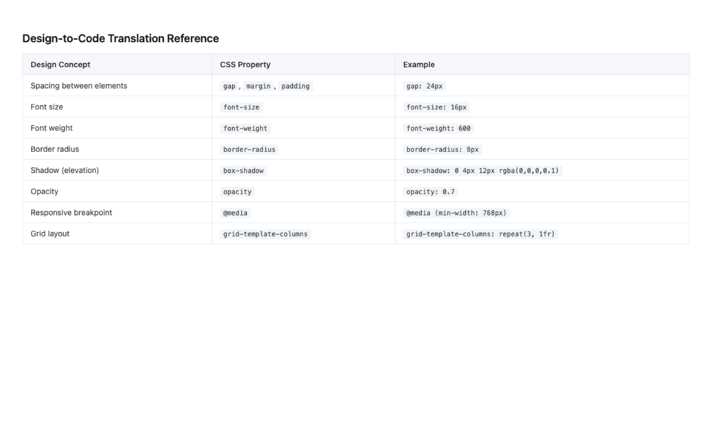
The design-to-code translation layer: every concept mapped to its CSS equivalent
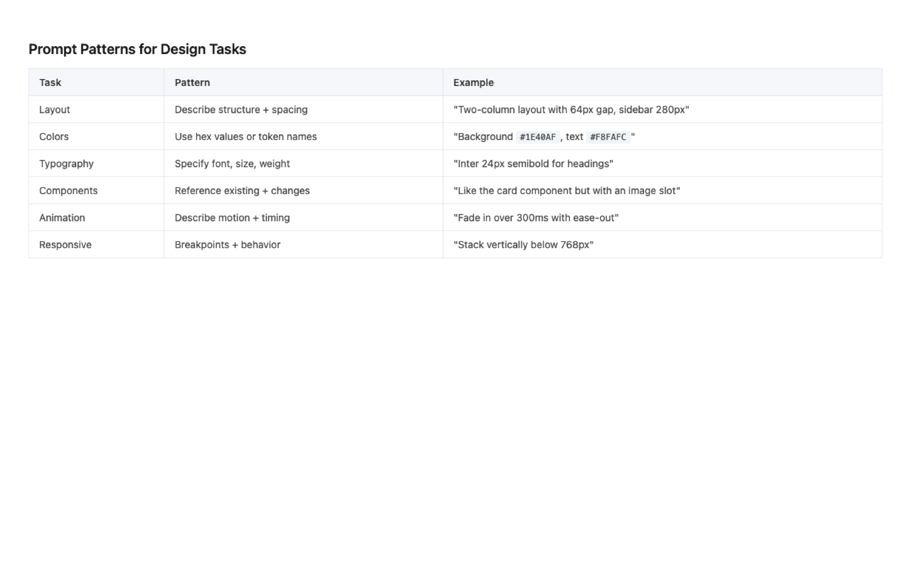
Prompt templates for common design tasks: copy, customize, and use
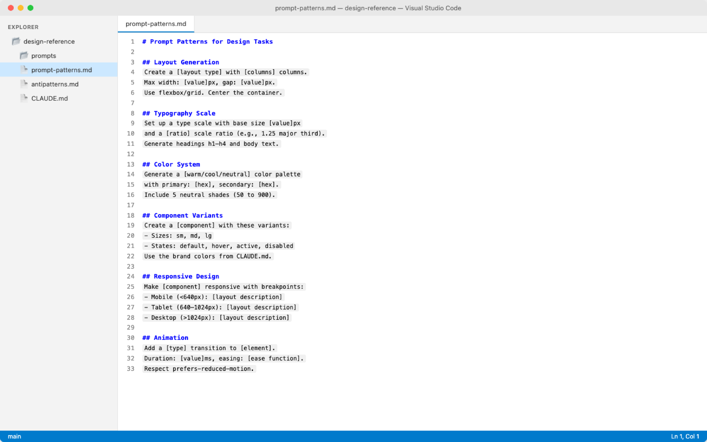
Text-only vs text-plus-screenshot: visual references produce more accurate output
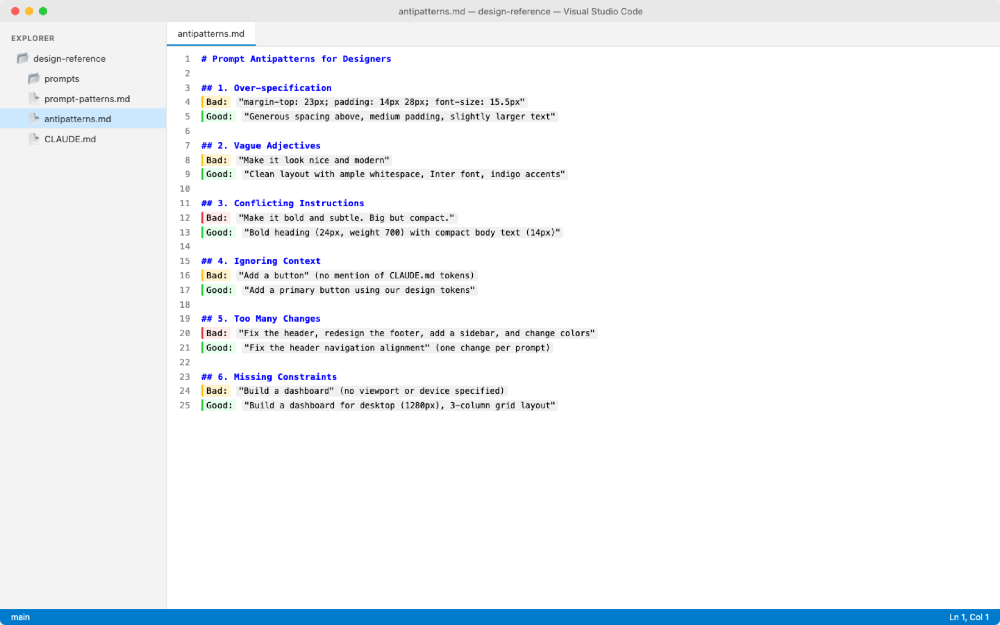
Prompt antipatterns: six common mistakes and how to fix each one
Teaching Claude Your Design Language
CLAUDE.md for designers, design tokens, brand guidelines, and component conventions
CLAUDE.md is your design style guide for AI — it ensures Claude Code produces consistent, on-brand output every single session without you re-explaining your design system.
5.1 What CLAUDE.md Is and Why Designers Need It
What CLAUDE.md Is and Why Designers Need It
Every Claude Code session needs a reliable source of design truth. CLAUDE.md is the project file that carries your design decisions from one session to the next.
You have built prototypes. You have learned to prompt for design outcomes. You can generate a button, a card, a navigation bar. But you may have noticed a problem: the output is inconsistent. Session to session, Claude picks different blues, different border radii, different font sizes. The button you generated on Tuesday does not match the one you generated on Thursday.
This happens when the session has no controlled project instructions. Claude Code may have user-level or product-level memory features, but those are not a substitute for a checked-in project source of truth. Without one, Claude defaults to generic design decisions, and "generic" changes every time.
CLAUDE.md fixes this. It is a plain text file that lives in your project folder. Claude reads it at the start of every session, before you type your first prompt. Think of it like your brand style guide in Figma — a document that defines your colors, typography, spacing, and component rules. Except this one is read by Claude before every conversation, not by a human developer.
With CLAUDE.md
Every session, Claude uses your primary color --color-primary: #4F46E5, your border radius --radius-md: 8px, and your body font Inter, 400. Output is consistent across sessions.
Without CLAUDE.md
Session A: blue #3B82F6, radius 6px, padding 12px 24px. Session B: blue #2563EB, radius 4px, padding 10px 20px. Session C: indigo #6366F1, radius 8px, padding 14px 28px. No two sessions agree.
CLAUDE.md is not a single global file. Claude loads multiple files, layered by scope, and concatenates them. Your personal preferences live in one file. Team conventions live in another. Project-specific rules live in a third.
Configuration hierarchy for designers
Keep always-loaded facts in CLAUDE.md: tokens, component names, accessibility requirements, brand rules, and file locations. Put procedures in skills or command docs: how to run visual QA, how to publish, how to review a component. Use path-scoped rules for folders that need different behavior, such as marketing pages versus app UI. This keeps the main memory short and makes the workflow easier to maintain.
CLAUDE.md Scopes — Where Your Design Rules Live
Scope
File Location
What Goes Here
User
~/.claude/CLAUDE.md
Your personal preferences across all projects
Project
./CLAUDE.md
Team-shared design tokens and conventions
Local
./CLAUDE.local.md
Personal project preferences (gitignored)
All discovered files load and merge. Claude walks up the directory tree, gathering instructions from each level. The content is additive, not overriding. If your user-level file says "use Inter" and your project file says "use Inter," they agree. If they conflict, you will see inconsistent behavior.
My Take
A good CLAUDE.md is the difference between Claude Code being a random code generator and being a consistent design collaborator. Without it, Claude defaults to generic decisions. With it, Claude applies your brand, your spacing, your typography every time. It takes two or three iterations to get right. Start simple and refine based on the output you see.
5.2 Creating Your First CLAUDE.md
Creating Your First CLAUDE.md
You do not write CLAUDE.md from scratch. You generate a starting point and refine it with your design decisions.
The fastest way to create a CLAUDE.md is to let Claude build one for you. Open Claude Code in your project folder and run the init command:
/init
Claude analyzes your project structure, detects your build system, identifies your test framework, and produces a starter CLAUDE.md. It will not be design-specific, because Claude does not know you are a designer yet. That is your job: take the generated file and add your design system.
1
Run /init in your project folder to generate the starter file.
2
Open CLAUDE.md in your editor. You will see code-style rules and workflow instructions.
3
Add a # Design System section at the top, before the code-style rules.
4
Add your brand colors, typography, spacing, and component conventions (we will build this in the next sections).
Here is what a starter design CLAUDE.md looks like. Use it as a working example, but generate the final values from your real token source when possible: Figma variables, Style Dictionary, Tokens Studio, a theme file, or your component library. Manually copied values drift; generated values can be reviewed and refreshed.
# Design System
## Colors
- Primary: #4F46E5 (indigo)
- Secondary: #7C3AED (purple)
- Accent: #F59E0B (amber)
- Background: #FFFFFF (light) / #111827 (dark)
- Text: #1A1A1A (primary) / #6B7280 (muted)
- Error: #DC2626, Success: #059669, Warning: #D97706
## Typography
- Headings: Inter, bold (700)
- Body: Inter, regular (400)
- Mono: JetBrains Mono, for code
- Scale: 12 / 14 / 16 / 20 / 24 / 32 / 48px
## Spacing
- Base unit: 4px
- Scale: 4 / 8 / 12 / 16 / 24 / 32 / 48 / 64px
- Component padding: 12px (compact), 16px (default), 24px (spacious)
## Border radius
- Small: 4px (inputs, tags)
- Medium: 8px (buttons, cards)
- Large: 16px (modals, dialogs)
- Full: 9999px (pills, avatars)
## Components
- Use kebab-case for CSS classes: .btn-primary, .card-header
- All interactive elements need hover, focus, and disabled states
- Buttons: min-height 44px for touch targets
- Use CSS custom properties, not hardcoded values
# Workflow
- Always use style.css for styles unless I specify otherwise
- Generate responsive markup by default (mobile-first)
- Include hover and focus states for all interactive elements
That is 35 lines. It fits comfortably under the 200-line limit that Anthropic recommends. It covers colors, typography, spacing, border radius, and basic component rules. Every section is something Claude needs to know to produce consistent design output.
Tip
After creating your CLAUDE.md, test it immediately. Ask Claude to "create a primary button component using our design system." If the output references --color-primary, --radius-md, and --font-body, your CLAUDE.md is working. If Claude uses hardcoded values like #3B82F6, the instructions are not specific enough — add the CSS custom property names explicitly.
What you include matters as much as what you leave out. Claude already knows standard CSS, common layout patterns, and responsive design conventions. You do not need to teach it those things. You need to teach it the things it cannot infer: your specific brand choices.
What to Include in Your Design CLAUDE.md
Include
Exclude
Brand colors with hex values
Full brand guidelines document (use a skill instead)
Typography: font families, weights, size scale
Standard CSS conventions Claude already knows
Spacing system with specific values
File-by-file descriptions of your codebase
Border radius values by usage context
Information that changes frequently
Component naming conventions
Long explanations or tutorials
Responsive breakpoints and behavior
Specific page layouts (describe in prompts)
The pruning test is simple: for each line, ask yourself, "Would removing this cause Claude to make mistakes?" If the answer is no, cut it. If Claude already uses Inter without being told, you do not need a rule for Inter. If Claude keeps picking the wrong blue, you need a rule for your blue.
5.3 Design Tokens and Brand Colors
Design Tokens and Brand Colors
Design tokens are the named values that carry your brand from Figma to code. CLAUDE.md is where you write them down so Claude uses them.
If you use Figma Variables, Tokens Studio, or any design token system, you already think in tokens. A token is a design decision given a name. Instead of #4F46E5, you write color-primary. Instead of 16px, you write space-4. The name stays the same even if the value changes. That is the whole point.
In CSS, tokens are implemented as custom properties. You define them once in a :root block and reference them everywhere else. When Claude reads your CLAUDE.md and sees "Primary: #4F46E5," it generates CSS that uses --color-primary: #4F46E5 and references var(--color-primary) throughout the component. That is the bridge between your design decision and the code Claude produces.
When your CLAUDE.md lists these colors, Claude references them by name in generated CSS instead of hardcoding random values. The difference is immediate and measurable. Here is what happens when you prompt "Create a primary button" before and after encoding your color tokens:
The version without CLAUDE.md uses Tailwind's default blue, a random border radius, and system-ui as the font. None of these match the brand. The version with CLAUDE.md uses the exact tokens you defined. Same prompt, different results, because Claude read your design decisions before starting.
Each token type has a specific format in CLAUDE.md and a specific way Claude applies it in generated code. Here is the reference:
Sets font-family and font-weight on heading elements
Spacing
Base unit: 4px, Scale: 4/8/12/16/24/32
References spacing values in padding, margin, and gap
Border radius
Medium: 8px (buttons, cards)
Applies border-radius to appropriate components
Component structure
container > header > body > footer
Generates semantic HTML matching the structure
For color systems with light and dark modes, encode both variants in CLAUDE.md:
## Colors
- Primary: #4F46E5 (light) / #818CF8 (dark)
- Background: #FFFFFF (light) / #111827 (dark)
- Text: #1A1A1A (light) / #F9FAFB (dark)
- Use prefers-color-scheme media query for auto-switching
- Dark mode should reduce saturation on accent colors
Claude will generate both the :root and @media (prefers-color-scheme: dark) blocks when it encounters these dual values. You can also ask Claude to generate a toggle-based dark mode using a .dark class on the <html> element if your project prefers manual control.
The same token approach applies to your full color palette. Semantic colors — error, success, warning, info — should be explicit. Claude defaults to common associations (red for error, green for success) but may not pick your specific shades.
5.4 Typography and Spacing
Typography and Spacing
Typography and spacing are where design systems live or die. Encode them as scales, not individual values.
A type scale is a series of font sizes that relate to each other by a consistent ratio. In Figma, you might define this as text styles: "Caption / 12px," "Body / 16px," "H3 / 24px." In CLAUDE.md, you write the same information in a format Claude can parse.
## Typography
- Headings: Inter, bold (700)
- Body: Inter, regular (400)
- Mono: JetBrains Mono, monospace, for code
- Scale: 12 / 14 / 16 / 20 / 24 / 32 / 48px
- Line height: 1.5 for body, 1.2 for headings
- Letter spacing: -0.025em for headings over 24px
When Claude reads this, it maps your scale to CSS custom properties:
Spacing follows the same pattern. Define a base unit and a scale. In Figma, this is your auto-layout spacing. In CSS, it is padding, margin, and gap values. The scale should be a multiplier of your base unit.
The component padding line is worth calling out. Without it, Claude will choose padding that looks reasonable in isolation but does not match your design system. By specifying compact, default, and spacious variants, you give Claude a choice that always lands within your system.
Notice the naming convention: --space- followed by the value divided by the base unit. --space-4 is 16px (4 times 4px). This is the same convention used by Tailwind CSS and most design token systems. If your project uses Tailwind, your CLAUDE.md should specify that Claude should use Tailwind spacing utilities (p-4, gap-6) instead of raw CSS custom properties.
Warning
Keep CLAUDE.md concise. It loads every session, and every line consumes context. Anthropic recommends staying under 200 lines. A design CLAUDE.md with colors, typography, spacing, and basic component rules should be 30 to 60 lines. If yours is growing past 100 lines, move reference material to skills. Large files cause Claude to ignore rules buried in the middle.
5.5 Component Patterns
Component Patterns
Naming conventions and structural rules are the difference between code that works and code you can maintain.
Design tokens handle colors, spacing, and typography. Component conventions handle structure: how you name things, how you organize HTML, what states every interactive element needs. Without these rules, Claude generates functional code that follows no consistent pattern. With them, the code looks like it came from one person.
Component conventions go into your CLAUDE.md under a ## Components heading:
## Components
- Use kebab-case for CSS classes: .btn-primary, .card-header
- Structure: container > header (optional) > body > footer (optional)
- Interactive elements: always define :hover, :focus-visible, :active, :disabled
- Responsive: mobile-first. Use min-width media queries to scale up
- Touch targets: minimum 44x44px for any clickable element
- CSS class naming (BEM-like):
- Block: .card
- Element: .card-header, .card-body, .card-footer
- Modifier: .card--featured, .card--compact
The BEM-like naming convention is the part that makes the biggest difference. Without it, Claude generates semantic but inconsistent class names. With it, every component follows the same pattern. Compare the output:
The version with conventions uses semantic HTML (<article>, <header>) and follows the BEM naming pattern. The version without conventions uses generic <div> elements and non-descriptive class names. Both render identically. One is maintainable. The other is not.
For interactive components, encode state requirements explicitly:
## Interactive states (IMPORTANT)
- Every button, link, and form control must include:
- :hover — subtle background change or shadow
- :focus-visible — outline ring using --color-primary
- :active — pressed state
- :disabled — reduced opacity (0.5) and cursor: not-allowed
- Transitions: 150ms ease for all state changes
- Focus rings: 2px solid var(--color-primary), offset 2px
The "IMPORTANT" tag is not decoration. Anthropic's documentation confirms that adding emphasis markers like "IMPORTANT" or "YOU MUST" improves Claude's adherence to specific instructions. Use it sparingly, for rules that Claude tends to skip.
Responsive conventions belong in CLAUDE.md too. Without them, Claude picks breakpoint values at random:
## Responsive
- Mobile-first: use min-width media queries
- Breakpoints: 640px (sm), 768px (md), 1024px (lg), 1280px (xl)
- Navigation collapses to hamburger below 768px
- Grid switches from 1-column to multi-column at 768px
- Padding doubles from mobile to desktop (16px → 32px)
These breakpoint values come from Tailwind's defaults. If your project uses different breakpoints, specify them. The point is to fix the values so Claude does not invent new ones each session.
When you ask Claude to build a component that references your CLAUDE.md conventions, the output carries through every level — HTML structure, CSS class names, state definitions, and responsive behavior. That is the compound value of CLAUDE.md. Each rule reinforces the others.
5.6 Maintaining Your CLAUDE.md Over Time
Maintaining Your CLAUDE.md Over Time
CLAUDE.md is a living document. An outdated CLAUDE.md is worse than no CLAUDE.md because it teaches Claude the wrong things.
You wrote your CLAUDE.md. It works. Sessions are consistent. Buttons come out right. But your design system evolves. Colors change. Spacing adjusts. New components get added. If CLAUDE.md does not keep up, Claude keeps generating the old version.
Treat CLAUDE.md like code: review it when things go wrong, prune it regularly, and test changes by observing whether Claude's behavior actually shifts. Anthropic's guidance is clear on this: "Treat CLAUDE.md as the place you write down what you would otherwise re-explain." Add to it when Claude makes the same mistake a second time, when a code review catches something Claude should have known, or when you type the same correction you typed last session.
Signs Your CLAUDE.md Needs Attention
Symptom
Cause
Fix
Claude ignores a specific rule
File is too long; rule gets lost in noise
Remove anything Claude does correctly without the rule
Claude asks questions answered in CLAUDE.md
Phrasing is ambiguous
Rewrite the rule to be specific and directive
Different sessions produce different results
Conflicting instructions across files
Run /memory to see all loaded files; resolve conflicts
Context fills up quickly
CLAUDE.md is over 200 lines
Move reference material to skills or path-scoped rules
Output uses outdated values
Stale rules from old project state
Review quarterly; update tokens if brand has changed
The /memory command is your diagnostic tool. It shows every CLAUDE.md file loaded in the current session, plus Claude's own auto-memory notes. Use it when output feels inconsistent — you may discover that an old user-level CLAUDE.md is conflicting with your project-level one.
/memory
When CLAUDE.md grows beyond what fits in a single file, you have two escape valves. The first is path-scoped rules. You create files in .claude/rules/ with a YAML frontmatter that specifies which files they apply to:
---
paths:
- "src/components/**/*"
- "**/*.component.*"
---
# Component Rules
- Every component gets its own file
- Include JSDoc comments with @component and @props tags
- Export both the component and its props interface
- Write a usage example in the same directory
This file only loads when Claude works with component files. The rest of the time, it stays out of context. Think of it like Figma's component documentation: available when you need it, invisible when you do not.
The second escape valve is skills. Skills are loaded on demand, not every session. They are the right place for large reference material: full brand guidelines, icon library references, animation specs, or detailed component documentation. The rule of thumb is simple: if Claude needs it every session, put it in CLAUDE.md. If Claude needs it sometimes, put it in a skill.
My Take
Designers are uniquely qualified to write great CLAUDE.md files because they already think in systems: tokens, components, patterns, naming conventions. CLAUDE.md is a machine-readable style guide. You write style guides for humans already. The format is different — it needs to be concise and directive, not descriptive — but the thinking is the same. Start with colors and typography, add conventions as you notice inconsistencies, and prune aggressively. Your CLAUDE.md should earn every line.
Claude also maintains its own notes, stored in auto-memory at ~/.claude/projects/<project>/memory/MEMORY.md. This is separate from your CLAUDE.md. Claude saves observations here, like "this user prefers pnpm over npm." For design-specific rules, CLAUDE.md is more reliable because you control the content. Auto-memory is Claude's best guess about what matters.
Here is a maintenance workflow that works. Run it once a quarter, or whenever you notice output quality dropping:
1
Run /memory to see all loaded files and Claude's auto-memory.
2
For each rule in CLAUDE.md, ask: does removing this rule cause Claude to make mistakes? If no, delete it.
3
Update design tokens if your brand has evolved since the last review.
4
Move domain-specific content (icon references, animation specs) to skills or path-scoped rules.
5
Verify the file stays under 200 lines. If it does not, split it.
6
Test with a component prompt: "Create a card component using our design system." Confirm the output references your tokens.
CLAUDE.md is the most impactful file you will create in your Claude Code workflow. It is the thing that turns an AI code generator into a design collaborator that knows your brand. Write it well, maintain it often, and it compounds in value every session.
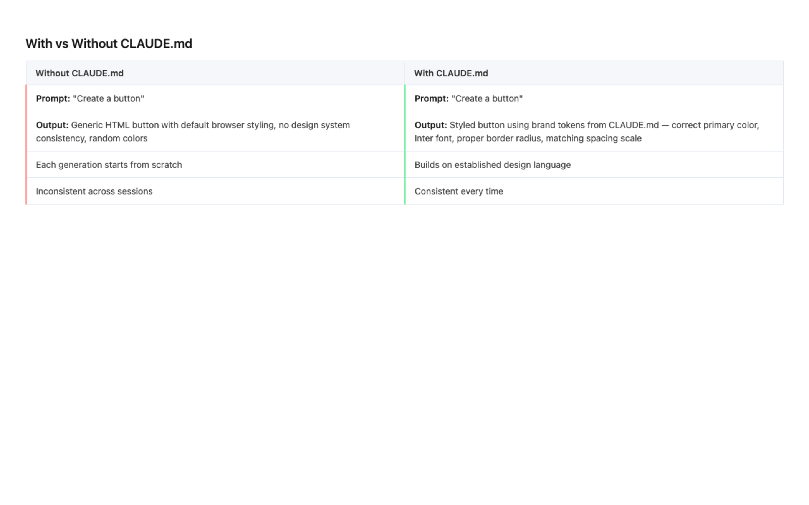
Without CLAUDE.md vs with CLAUDE.md: consistent, on-brand output every time
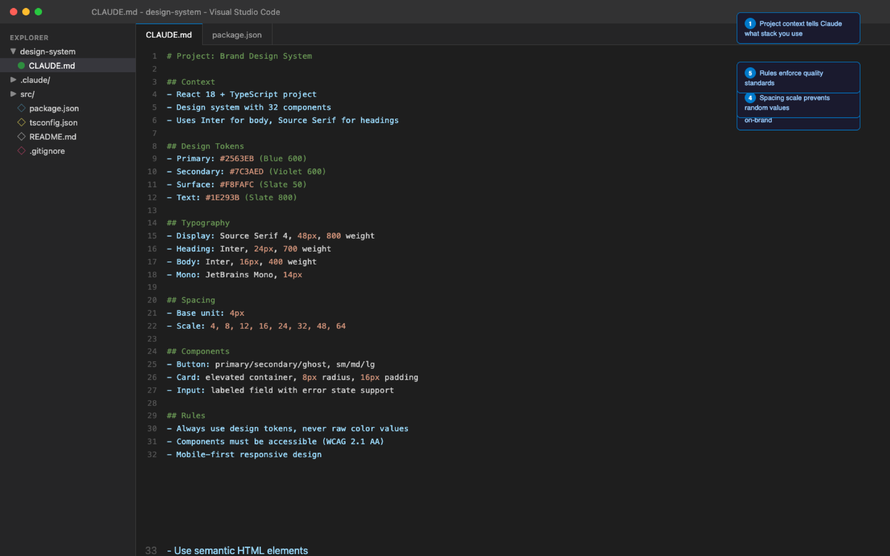
A complete design-focused CLAUDE.md file with every section annotated
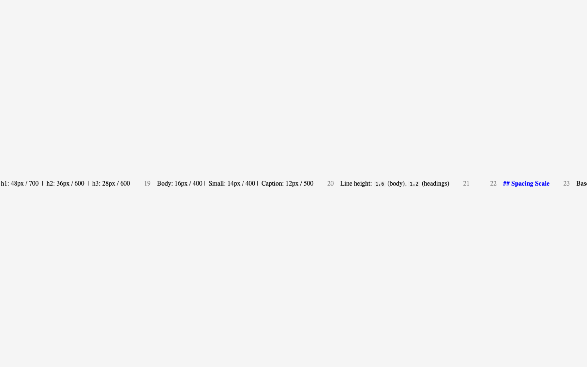
Design tokens in JSON and CLAUDE.md: the bridge between your design tools and code
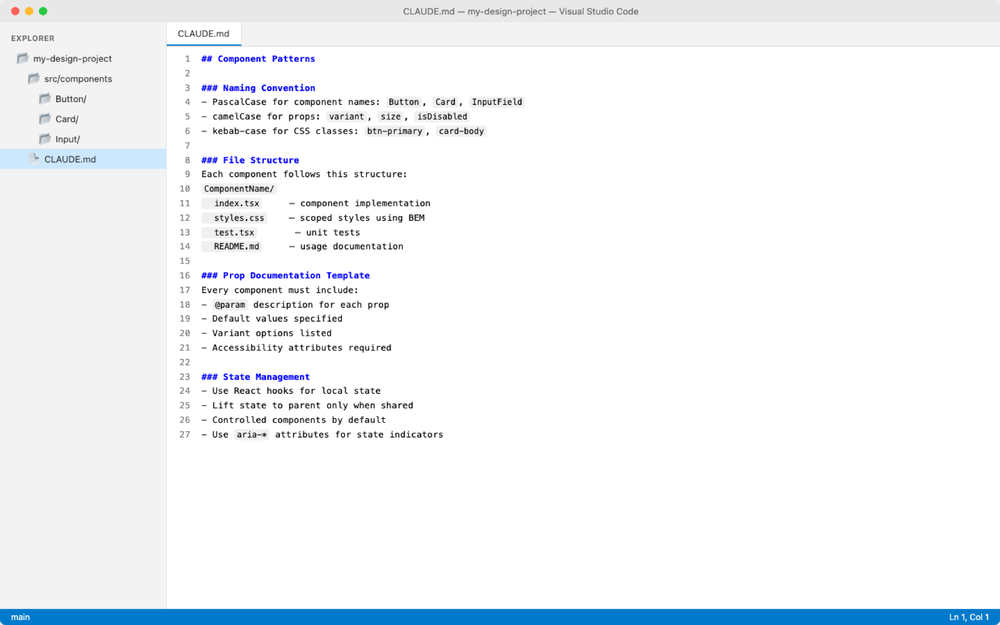
Component conventions in CLAUDE.md: the rules Claude follows when building components
Design Systems at Scale
Using Claude Code to build, extend, and maintain component libraries and design systems
You have a CLAUDE.md with design tokens and conventions. You can generate individual components. This chapter scales up from one-off component work to system-level thinking — auditing entire libraries, generating variants in batches, managing tokens across themes, and keeping documentation from going stale. Design systems are systematic by nature. Claude Code excels at systematic work. That alignment is the entire thesis of this chapter.
Audit
→
Generate
→
Tokenize
→
Sync
→
Document
Think of Claude Code as a design system assistant that never tires of generating variants, updating tokens, and writing documentation. You define the rules. It executes at scale. That is the mental model for this entire chapter.
6.1 Why Design Systems + AI
Why Design Systems and AI Are a Natural Pair
Design systems are systematic by definition. AI tools are systematic by nature. That overlap is not coincidental — it is the reason Claude Code is unusually effective at design system work.
Most design system maintenance is not creative work. It is extending existing patterns, auditing for consistency, generating variants from a base component, and keeping documentation in sync with code. These tasks are repetitive and rule-based — exactly the kind of work where AI assistance pays off.
Four properties make design systems a natural fit for Claude Code:
Property
Why It Matters
What Claude Can Do
Code-first artifacts
Modern design systems live in code repositories, not Figma files alone
Read, edit, and validate code natively
Maintenance bottleneck
Creating a system is glamorous; maintaining it is tedious
Handle repetitive extension and audit tasks at scale
Cross-platform drift
Components diverge across React, React Native, and native platforms
Compare implementations and flag inconsistencies
Documentation staleness
Docs drift from code the moment someone skips an update
Regenerate documentation from source code automatically
When AI helps less
Claude Code is less useful for the creative decisions in design system work: choosing a type scale, defining a color palette, or establishing interaction patterns. Those require taste and context. Where it shines is the mechanical execution after the creative decisions are made — generating the 47 files that implement those decisions consistently.
6.2 Auditing an Existing System
Auditing an Existing Design System
Before extending a design system, audit what is there. Claude Code can perform a comprehensive audit in a single session using the explore-plan-implement pattern from Anthropic's best practices.
Think of auditing like running a spell check on your design system. You are not rewriting anything yet — you are finding every inconsistency, every hardcoded value, every missing piece. Claude Code reads every file, compares against your conventions, and produces a report.
Step 1: Explore in plan mode
Start with plan mode so Claude reads without writing anything. This keeps the audit read-only.
claude --permission-mode plan
Read the entire design system in @src/components, @src/tokens,
and @src/styles. Audit for:
1. Components missing from the design system but used in the app
2. Hardcoded colors, spacing, or typography values that should use tokens
3. Inconsistent prop naming across similar components
4. Accessibility issues (missing aria labels, keyboard navigation)
5. Components that are exported but unused anywhere in the codebase
Fix all critical and high severity issues from the audit.
Run the test suite after each fix.
That last instruction is important. Design system changes can be verified — linters, type checks, visual regression tests all catch problems. Anthropic's best practices recommend giving Claude a way to verify its work. Design systems make this easy because the verification tooling already exists.
Parallel audits with subagents
For large design systems, a single audit can fill the context window before finishing. The solution is subagents — separate Claude sessions that run in parallel, each investigating a different aspect.
Research the component library using separate subagents:
- Subagent 1: Find all components missing JSDoc or TypeScript docs
- Subagent 2: Find all hardcoded color values that bypass tokens
- Subagent 3: Check accessibility across all interactive components
- Subagent 4: Find components exported but never imported elsewhere
Report a consolidated summary with file references.
Each subagent runs in its own context window and returns only findings. The main session gets a consolidated report without having read every file itself.
My Take
The fan-out pattern — having Claude operate on every file that matches a pattern — is the most powerful technique in this chapter. It turns what would be hours of tedious find-and-replace into a single prompt. The parallel audit pattern is a specific instance of this: instead of one slow pass through every file, you get four simultaneous passes each focused on one concern.
Caution: Always test on a small subset first, review the output, then run at scale. A bad audit prompt applied to 200 files produces 200 bad reports.
6.3 Generating Component Variants
Generating Component Variants
Generating variants is the most straightforward design system task for Claude Code. You point it at a base component, describe the variants you need, and it produces files that follow the same conventions.
Think of this like creating component variants in Figma. You define a base component, then create variants for different states, sizes, and colors. The difference is that Claude Code generates working code with types, styles, stories, and tests — not visual frames.
Generating button variants
Start by pointing Claude Code at your existing Button component and asking for new variants:
Read @src/components/Button/Button.tsx and
@src/components/Button/Button.stories.tsx.
The existing Button supports 'primary', 'secondary', and 'ghost' variants.
Generate the following new variants following the exact same patterns:
1. 'destructive' — red background, white text, for dangerous actions
2. 'outline' — transparent background, colored border, colored text
3. 'link' — no background or border, underlined text, for inline actions
For each variant:
- Add the variant to the TypeScript union type
- Add the style mapping in the styled component
- Add a Storybook story
- Add a Jest test for rendering and interaction
The critical instruction is "following the exact same patterns." Claude Code will match whatever conventions exist in the base component — prop naming, style structure, file organization. This is where your CLAUDE.md conventions from Chapter 5 pay off. If you defined how components are structured, Claude follows that structure.
Batch variant generation
When you need variants across many components, use the fan-out pattern to process them in parallel:
Cap the blast radius
Run the pattern on two or three components first, review the diffs, then increase the batch size. Add a concurrency cap, budget note, and rate-limit handling before running dozens of claude -p sessions. Parallel generation is useful only when the results are still reviewable.
for dir in src/components/*/; do
component=$(basename "$dir")
if [ ! -f "${dir}${component}.stories.tsx" ]; then
claude -p "Read src/components/$component/$component.tsx. \
Generate a Storybook story file following the pattern in \
src/components/Button/Button.stories.tsx. \
Write to src/components/$component/$component.stories.tsx. \
Return OK or FAIL." \
--allowedTools "Read,Write,Glob,Grep" &
fi
done
wait
echo "All stories generated"
This script finds every component that lacks a Storybook story, then generates one for each in parallel. Each invocation runs in its own context, reads the base Button story for reference, and produces a matching file.
Warning
Generating many variants without reviewing each one risks subtle inconsistencies — a few pixels off on padding, a color shifted slightly, a hover state that behaves differently. Generate in batches of 5-10 components. Review each batch. Then proceed. Use visual testing (covered in Section 6.6) to catch drift.
6.4 Token Management and Themes
Token Management and Themes
Design tokens are the atomic values of your design system — colors, spacing, typography, shadows. Claude Code can audit token usage, generate theme variations, and convert between formats.
Think of tokens like the variables panel in Figma. Every color, spacing value, and font size that appears in your design system should trace back to a token. In practice, hardcoded values creep in. Claude Code can find them.
Auditing token usage
Read @src/tokens/colors.ts, @src/tokens/spacing.ts,
and @src/tokens/typography.ts.
Then search the entire codebase for:
1. Hardcoded hex/rgba colors not in the token set
2. Hardcoded pixel values for spacing that should use spacing tokens
3. Hardcoded font-size values that should use typography tokens
4. Any file in src/ that imports tokens but overrides them with raw values
Generate a report grouped by file, with suggested token replacements
for each hardcoded value.
Generating a dark theme from tokens
Once your light theme tokens are defined, generating a dark theme is a structured transformation — the kind of task Claude Code handles well:
Read @src/tokens/colors.ts which defines our light theme color tokens.
Generate a dark theme by:
1. Creating semantic color mappings (background -> dark background,
surface -> dark surface)
2. Ensuring WCAG AA contrast ratios for all text/background combinations
3. Following the exact same TypeScript structure as the light theme
4. Writing the result to src/tokens/colors-dark.ts
Then create a ThemeProvider component that:
- Accepts 'light' | 'dark' | 'system' as a theme prop
- Switches CSS custom properties at the :root level
- Persists the choice to localStorage
- Respects prefers-color-scheme media query for 'system' mode
Converting tokens to Tailwind config
If your project uses Tailwind, Claude Code can bridge between your token definitions and the Tailwind configuration:
Read @src/tokens/colors.ts, @src/tokens/spacing.ts,
and @src/tokens/typography.ts.
These contain our design tokens as TypeScript objects.
Generate a tailwind.config.ts that:
1. Extends the Tailwind theme with our custom colors, spacing, and typography
2. Maps each token to the correct Tailwind config path
3. Preserves any existing Tailwind config for plugins and content paths
4. Includes comments linking back to the source token file for each value
Enforcing token usage with hooks
Audits find problems after they happen. Hooks prevent them from happening in the first place. You can set up a PreToolUse hook that blocks file writes containing hardcoded color or spacing values:
#!/bin/bash
# .claude/hooks/check-hardcoded-values.sh
INPUT=$(cat)
CONTENT=$(echo "$INPUT" | jq -r '.tool_input.newString // .tool_input.content // empty')
if echo "$CONTENT" | grep -qE '#[0-9a-fA-F]{3,8}[^0-9a-fA-F]'; then
echo "Blocked: Hardcoded hex color detected. Use a design token from src/tokens/colors.ts" >&2
exit 2
fi
if echo "$CONTENT" | grep -qE '(margin|padding|gap):\s*[0-9]+px'; then
echo "Blocked: Hardcoded pixel spacing detected. Use a spacing token from src/tokens/spacing.ts" >&2
exit 2
fi
exit 0
Exit code 2 blocks the tool call. The write never happens. This is deterministic enforcement — unlike CLAUDE.md instructions, which are advisory, hooks cannot be ignored. Think of it like an auto-layout constraint in Figma: you set it once, and it enforces consistency from that point forward.
6.5 Cross-Platform Consistency
Cross-Platform Consistency
Design systems that span web, mobile, and native platforms face a constant drift problem. Claude Code can compare implementations across platforms and flag where they diverge.
A button component might have 10 variants on web but only 6 on mobile. Spacing tokens might be defined differently across platforms. Color values may diverge through copy-paste. These inconsistencies accumulate slowly and are expensive to find manually.
Parity check across platforms
Compare the design system implementations across platforms:
- Web components: @src/web/components/
- React Native components: @src/native/components/
- Design tokens (Figma-exported): @tokens/
For each component that exists in the web implementation:
1. Check if an equivalent exists in the native implementation
2. Compare the props/variants available in each
3. Flag any prop or variant that exists on one platform but not the other
4. Check that both platforms use the same token values for colors and spacing
Generate a parity report with:
- Component name
- Platform availability (web / native / both)
- Missing props or variants per platform
- Token value mismatches
Cross-platform token diff
For a focused check on whether token values have diverged across platform implementations:
claude -p "Compare the color token values in:
1. src/web/tokens/colors.ts
2. src/native/tokens/colors.ts
3. tokens/colors.json (Figma export)
List any values that differ across the three sources.
Return a JSON object with token name, web value, native value,
and figma value." \
--output-format json > token-diff.json
Using agent teams for large-scale checks
When the parity check spans a large system, delegate to agent teams running in parallel:
I need to audit our design system across three platforms in parallel.
Use an agent team:
- Agent 1 (Web): Audit all React components in src/web/components/
for prop completeness and token usage
- Agent 2 (Native): Audit all React Native components in
src/native/components/ for the same
- Agent 3 (Compare): After Agent 1 and 2 complete, compare their
findings and generate a parity report
Each agent should use the Explore subagent for investigation.
Agent teams coordinate multiple Claude sessions. Each agent works independently, then Agent 3 synthesizes the results. For a design system with 50+ components, this pattern finishes in minutes instead of the hours a manual comparison would take.
6.6 Visual Regression and Accessibility Gates
Visual Regression and Accessibility Gates
A design system is not done when the code compiles. It is done when the rendered components match the intended system across states, breakpoints, and accessibility constraints.
Add a verification pass before documentation. Ask Claude Code to open Storybook or your component preview, capture screenshots for mobile, tablet, and desktop, run automated accessibility checks, and compare the output against the reference design or previous baseline.
Run design-system visual QA for Button, Card, Modal, and Tabs:
1. Open Storybook.
2. Capture default, hover, focus, disabled, and error states.
3. Check keyboard focus order and visible focus rings.
4. Run axe or the project's accessibility test command.
5. Compare screenshots against the previous baseline.
6. Report only actionable visual or accessibility drift.
Automated checks do not certify legal accessibility compliance, but they catch common failures: missing labels, broken focus order, contrast issues, responsive overflow, and component states that no longer match the design system.
6.7 Documenting Your System
Documenting Your Design System
Documentation is the task everyone skips and everyone needs. Claude Code can generate and maintain component documentation, prop tables, usage guidelines, and migration guides directly from source code.
The reason documentation stays stale is that it requires a human to read code, extract information, and write prose — every time a component changes. Claude Code does this in seconds. Not perfectly, but well enough that a human review pass is faster than writing from scratch.
Component reference documentation
For each component in @src/components:
1. Extract the TypeScript interface and generate a props table
2. Read the Storybook stories and extract usage examples
3. Read the test file and infer behavior from test descriptions
4. Generate a markdown doc with: description, import statement,
props table, variants, examples, accessibility notes
5. Write to docs/components/[Name].md
Follow the template in @docs/templates/component-doc-template.md
Creating a reusable documentation skill
For documentation you regenerate frequently, create a skill that wraps the workflow:
---
name: document-component
description: Generate or update documentation for a design system component
argument-hint: [component-name]
---
Generate documentation for the $ARGUMENTS component.
1. Read the component source at src/components/$ARGUMENTS/$ARGUMENTS.tsx
2. Read the test file at src/components/$ARGUMENTS/$ARGUMENTS.test.tsx
3. Read the Storybook stories at src/components/$ARGUMENTS/$ARGUMENTS.stories.tsx
4. Extract the TypeScript props interface
5. Generate documentation following the template at
docs/templates/component-doc-template.md
6. Write the result to docs/components/$ARGUMENTS.md
Invoke it with /document-component Button. The skill reads the component source, tests, and stories, then generates documentation following your template. If you update a component, run the skill again. The documentation stays in sync.
Migration guides
When you release a new version of your design system, Claude Code can generate migration guides from the git diff:
Compare the current version of the design system (in @src/) with
the previous version (run: git diff v2.0..v3.0 -- src/).
Generate a migration guide that:
1. Lists all breaking changes with before/after code examples
2. Lists deprecated components with recommended replacements
3. Lists renamed props with find/replace instructions
4. Provides a codemod script for automated migrations where possible
Scheduled documentation updates
For ongoing maintenance, schedule a routine that regenerates documentation weekly:
Schedule a routine that runs every Monday at 9am:
"Check if any component files in src/components/ have been modified
in the past week. For each modified component, regenerate its
documentation in docs/components/. Create a PR with the updates."
My Take
Documentation generation is the highest-value use of Claude Code for design systems. Not because it is the most technically impressive thing Claude can do, but because it is the task everyone skips and everyone needs. Documentation always falls behind. The component gets built on Tuesday, the doc gets written never. Claude Code can regenerate it from code in seconds. You still review it — but reviewing takes five minutes. Writing from scratch takes an hour.
Caution: Generated documentation needs review for accuracy, especially around edge cases, keyboard interaction patterns, and accessibility behavior that is not captured in TypeScript types.
Batch documentation generation
To generate documentation for every component at once, use the fan-out pattern:
ls -d src/components/*/ | sed 's|src/components/||;s|/||' > components.txt
for component in $(cat components.txt); do
claude -p "Read src/components/$component/$component.tsx and \
generate documentation following the pattern in \
docs/templates/component-doc-template.md. \
Write to docs/components/$component.md. Return OK or FAIL." \
--allowedTools "Read,Write,Glob,Grep" &
done
wait
Each component gets its own Claude session running in parallel. For a system with 40 components, this generates 40 documentation files in the time it would take to generate one sequentially.
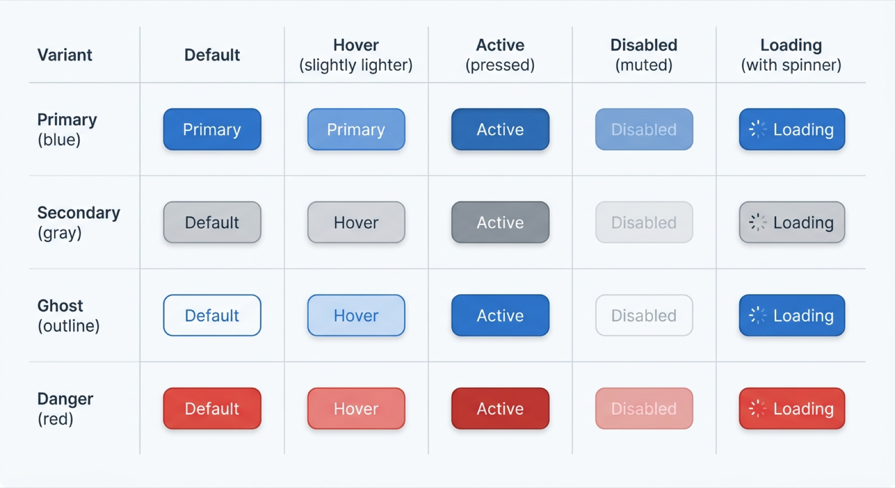
A complete button variant grid: four variants across five states, all generated by Claude Code
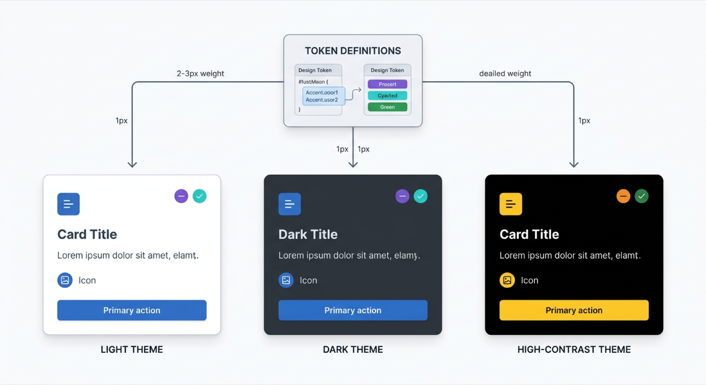
One token system, three themes: light, dark, and high-contrast from the same code
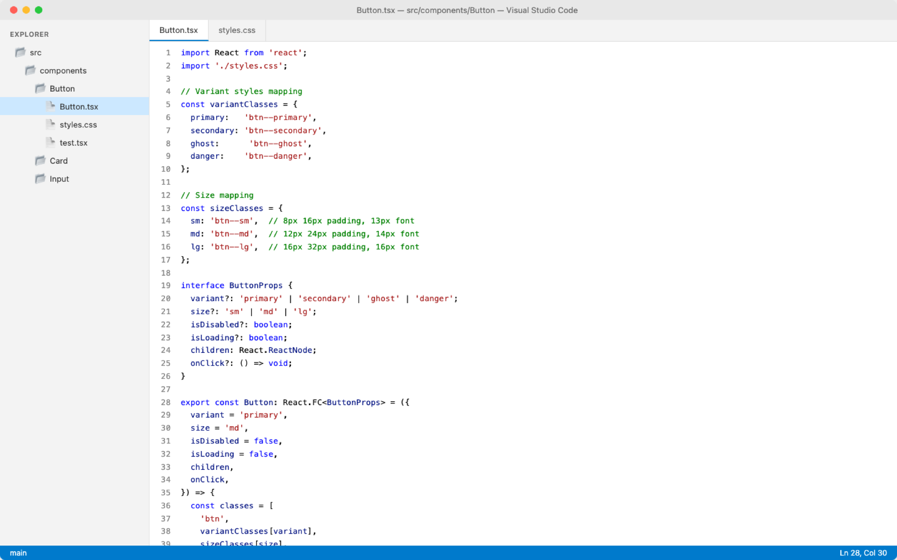
Design system audit: checking token compliance, accessibility, and documentation for every component
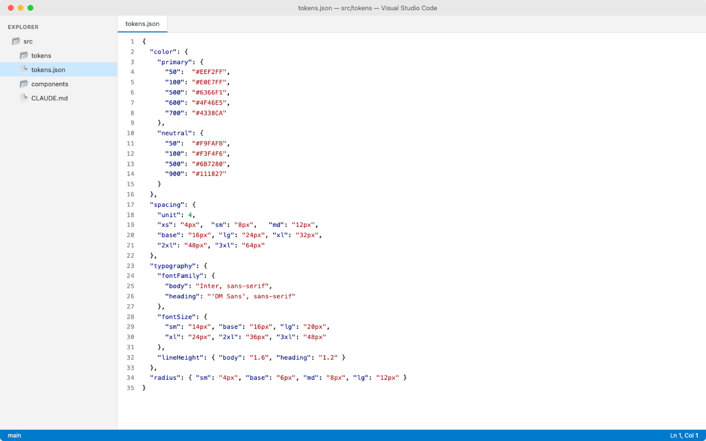
Auto-generated component documentation: props, usage, and visual states from source code
Automating Design Workflows
Scheduled tasks, batch operations, hooks, and CI integration for design teams
Everything you have built so far happened while you sat at your keyboard, typing prompts and reviewing output. This chapter changes that. You will learn how to set up tasks that run without you watching them — overnight reviews, batch file processing, automatic formatting, and CI checks that catch design violations before they ship.
Hook
→
Schedule
→
Batch
→
Script
→
Ship
Think of automation like having a junior designer who works overnight. You define the tasks once, they run on schedule, and you review the results in the morning. The tasks run whether you watch them or not.
7.1 What Can You Automate
What Can You Automate
Automation in Claude Code is not a DevOps concept. It is any task that runs without you typing a prompt.
Claude Code supports automation at five levels of increasing independence. Each level trades setup effort for hands-off operation.
Level
Mechanism
Needs You Present?
Design Use Case
Reactive
Hooks — fire on file edits, session events
No (automatic)
Auto-format CSS, protect design tokens
Session
/loop — recurring prompts in open session
Session open
Babysit a long build, poll deploy status
Cloud scheduled
Routines — Anthropic cloud infrastructure
No
Nightly asset audits, weekly token sync
Scripted
claude -p — non-interactive from scripts
No (on demand)
Batch operations, pipeline tasks
CI-driven
GitHub Actions — triggered by repo events
No
PR design review, scheduled audits
Most designers I work with start with hooks because they require the least setup and provide the most immediate value. You configure them once and they fire automatically from that point forward. Routines and CI come later, once you have a few batch operations working reliably.
What makes a task worth automating?
Automate tasks that are repetitive, mechanical, and have a clear pass/fail outcome. Reviewing every CSS file for token compliance is a good candidate — the rules are defined, the check is mechanical, and the output is a list of violations. Automate verification, not design decisions.
7.2 Hooks
Hooks
Hooks are automatic actions that fire on specific events in Claude Code's lifecycle. Think of them like Figma auto-layout constraints — you set them once, and they enforce consistency automatically.
A hook is a rule you write that says: "When this event happens, run this action." The event might be a file edit, a session starting, or Claude finishing a task. The action might be running a formatter, sending a notification, or blocking an edit to a protected file.
Hook types
Claude Code supports five hook types. For design workflows, you will mostly use command hooks (shell scripts) and prompt hooks (LLM-powered checks).
Type
What It Does
Design Use Case
command
Runs a shell command
Auto-format CSS, optimize SVGs
prompt
Single-turn LLM evaluation
Check naming conventions, validate tokens
http
POSTs event data to a URL
Sync changes to external design tools
mcp_tool
Calls an MCP server tool
Update Figma variables on token change
agent
Multi-turn subagent with tools
Complex post-processing (experimental)
Where hooks live
You configure hooks in your project's .claude/settings.json file. This file can be committed to git, so your whole team shares the same hooks.
The matcher field filters which tool calls trigger the hook. "Edit|Write" means this fires whenever Claude edits or creates a file. The command reads the file path from the hook's JSON input and runs the appropriate formatter based on file extension.
Hook example: protect design token files
If your design tokens are managed through a pipeline — not by hand-editing JSON — you want to prevent Claude from modifying them directly.
This is a PreToolUse hook — it fires before Claude makes the edit. When it returns a deny decision, the edit is blocked and Claude sees the reason. Do not rely on hooks as a reason to use broad permissions casually. bypassPermissions is for isolated containers, VMs, or disposable automation where you are comfortable with the full blast radius.
Hook example: desktop notification on completion
When Claude finishes a long batch task like processing 50 SVGs, you want to know about it.
This prompt hook uses a Claude model to evaluate whether the output meets your design conventions. It runs after Claude finishes a task and provides feedback if violations are found.
{
"hooks": {
"Stop": [
{
"hooks": [
{
"type": "prompt",
"prompt": "Check if the output files follow our design system naming convention (kebab-case, no spaces, lowercase). If violations exist, respond with {\"ok\": false, \"reason\": \"list the violations\"}."
}
]
}
]
}
}
Prompt hooks are useful for judgment calls that a shell script cannot make — like checking whether a filename follows your naming convention. The LLM evaluates the condition and returns a structured response.
My Take
Hooks are underrated for design workflows. Auto-formatting and auto-linting after every Claude Code edit means you never have to worry about code style. Hooks are deterministic — they run every time without exception, unlike CLAUDE.md instructions which are advisory. The initial setup takes 15 minutes. The payoff is permanent.
Caution: Hooks require editing JSON config files. If you are uncomfortable with that, start with the notification hook — it is one line and you will see it working immediately.
7.3 Routines
Routines
Routines are scheduled Claude Code tasks that run on Anthropic's cloud infrastructure. They keep working when your laptop is closed.
A routine packages a prompt, one or more repositories, and a set of triggers. You define it once, and it runs on a schedule, on demand via API, or when a GitHub event fires. Because routines execute on Anthropic's servers, they do not need your machine to be on.
Automation safety first
Before scheduling a task, identify the owner, repository, branch, allowed tools, expected cost, rollback path, and data classification. Cloud routines and CI jobs may process proprietary code, screenshots, or brand assets outside your laptop. Use least privilege, avoid secrets in prompts, and prefer pull requests over direct writes to protected branches.
Three trigger types
Routines support three kinds of triggers, and a single routine can combine them.
Scheduled — recurring (hourly, daily, weekdays, weekly) or one-off at a specific time
API — trigger on demand via HTTP POST with a bearer token
GitHub — react to pull request events, releases
Setting up a routine
You create routines from within Claude Code using the /schedule command. Claude handles the configuration conversationally.
/schedule nightly audit design assets — check for unused SVGs,
duplicate icons, missing alt text, and files over 100KB
/schedule weekly check if design tokens in tokens.json have diverged
from the Figma-exported baseline and open a PR with diffs
/schedule list — see all your routines
/schedule run — trigger a routine immediately
/schedule update — change an existing routine
Session-scoped scheduling with /loop
For lighter-weight scheduling within an open session, use the /loop command. These tasks run while your session is open and expire after 7 days.
/loop 5m check the deploy status — fixed 5-minute interval
/loop check the deploy status — Claude picks the interval
remind me at 3pm to push the release — one-shot reminder
API trigger for design pipelines
Routines with API triggers give you a dedicated HTTP endpoint. You can fire them from any script, build tool, or design pipeline.
# Placeholder only: load the token from a secret manager or CI secret.
curl -X POST https://api.anthropic.com/v1/claude_code/routines/trig_01ABCDEFGHJKLMNOPQRSTUVW/fire \
-H "Authorization: Bearer $CLAUDE_ROUTINE_TRIGGER_TOKEN" \
-H "anthropic-beta: experimental-cc-routine-2026-04-01" \
-H "anthropic-version: 2023-06-01" \
-H "Content-Type: application/json" \
-d '{"text": "New brand assets uploaded. Generate all size variants and update the sprite sheet."}'
Tip
Choose your scheduling mechanism based on where the files live. If your design assets are in a git repo and you need the task to run overnight, use a routine. If the files are local and you need the task to run while you work, use /loop. If you need it to run in CI, use GitHub Actions (covered in section 7.6).
My Take
The single most valuable automation for a design team is a scheduled design system consistency check. Design systems drift. Tokens get misused. Components diverge. A daily automated check catches drift before it compounds into weeks of cleanup work.
Caution: The check output still needs human review to prioritize fixes. Automation finds the problems. People decide what to fix first.
7.4 Batch Operations
Batch Operations
Batch operations process multiple files in a single run. Instead of prompting Claude for each file, you write one script that loops through everything.
The engine behind batch operations is non-interactive mode: claude -p. This flag runs Claude with a single prompt, produces output, and exits. No conversation, no back-and-forth. You can pipe data in, capture structured output, and chain multiple calls together.
Batch review of changed design files
This command finds every CSS and SVG file that changed on your current branch and asks Claude to review them for design system compliance.
git diff main --name-only -- '*.css' '*.scss' '*.svg' | \
claude -p "Review each file for design system compliance. Check spacing, color usage, and component naming." \
--bare \
--allowedTools "Read,Bash" \
--output-format json
The --bare flag skips loading hooks, skills, MCP servers, and CLAUDE.md. This makes the run reproducible — same input, same output, on any machine.
Pipe a file through Claude for validation
cat design-tokens.json | claude -p 'Validate this design token file. Check that all colors are valid hex values, spacing uses the 8px grid, and typography scales are consistent.' > validation-report.txt
Structured output for batch processing
When you are processing many files, you want structured output you can parse programmatically. The --json-schema flag enforces a specific output format.
claude -p "Scan all SVG files in assets/icons/ and report any that are missing viewBox attributes or have hardcoded fills instead of currentColor." \
--output-format json \
--json-schema '{
"type": "object",
"properties": {
"issues": {
"type": "array",
"items": {
"type": "object",
"properties": {
"file": {"type": "string"},
"issue": {"type": "string"},
"severity": {"type": "string", "enum": ["error", "warning"]}
}
}
}
}
}'
Multi-step batch with session continuation
For batch tasks that need multiple steps, you can continue a session. Step one analyzes, step two fixes.
# Step 1: Analyze and capture the session ID
session_id=$(claude -p "Analyze the design system and list all files that need token updates" --output-format json | jq -r '.session_id')
# Step 2: Fix using the same session context
claude -p "Now apply all the fixes you identified" --resume "$session_id" --allowedTools "Edit,Write,Bash"
Add batch commands to your package scripts
If your project uses npm scripts, add design-specific batch commands that your whole team can run.
{
"scripts": {
"design:audit": "find src/components -name '*.css' | claude -p \"For each file check: 1) uses only approved colors 2) spacing is on grid 3) no hardcoded values. Report violations as filename:line format.\"",
"design:lint": "git diff --name-only -- '*.css' '*.scss' | claude -p \"Review these changed style files for design system violations\" --bare --output-format json"
}
}
Warning
Do not run batch operations without testing on 2-3 files first. A bad prompt applied to 200 files is a bad day. Test your prompt on a small set, review the output, then scale up. Use --allowedTools to restrict what Claude can do during the batch run.
7.5 Non-Interactive Mode
Non-Interactive Mode
Non-interactive mode (claude -p) is the foundation for all scripting and automation. It runs a single prompt and exits — no conversation loop.
Every batch operation, CI script, and scheduled task in this chapter builds on non-interactive mode. Here are the flags that matter most for design workflows.
Flag
What It Does
When to Use It
-p
Non-interactive mode
Always, for scripts
--bare
Skip hooks, MCP, CLAUDE.md
CI and reproducible runs
--output-format
text, json, or stream-json
When piping output to other tools
--json-schema
Enforce structured output
Batch processing that needs parseable results
--allowedTools
Auto-approve specific tools
Autonomous runs without human approval
--permission-mode
dontAsk or acceptEdits
CI environments where no human is present
--resume
Continue a specific session
Multi-step batch operations
Bare mode for reproducible runs
The --bare flag strips away all local configuration — no hooks, no skills, no MCP servers, no CLAUDE.md. Only the flags you pass explicitly take effect. This is the right choice for CI and shared scripts where you need consistent results across machines.
claude --bare -p "Generate a color palette with 10 shades from this base color: #2563EB" \
--allowedTools "Write" \
--output-format json
Fully autonomous batch job
For batch jobs that need to read and write files without any human approval, combine --bare with --permission-mode acceptEdits.
claude -p "Optimize all images in the assets/ directory. Compress PNGs, minify SVGs, and generate WebP versions." \
--bare \
--permission-mode acceptEdits \
--allowedTools "Bash,Read,Edit,Write"
acceptEdits lets Claude write files without prompting. It also auto-approves common filesystem commands like mkdir, touch, mv, and cp. Use it only in scripts you have tested, not in interactive sessions.
Streaming for long-running tasks
When a batch task takes minutes rather than seconds, use stream-json to see progress as it happens.
claude -p "Process all 50 SVG icons in assets/icons/ and optimize them" \
--output-format stream-json \
--verbose
7.6 CI Integration
CI Integration
CI (continuous integration) runs automated checks every time someone opens a pull request or pushes code. For design teams, this means design system violations get caught before they merge.
Think of CI like a design review that happens automatically. Every pull request that touches a CSS file, an SVG, or a design token gets checked against your rules. Violations get posted as inline comments on the pull request.
Design review on every pull request
This GitHub Action runs Claude whenever a pull request modifies design files. It checks for token compliance, grid spacing, and SVG conventions.
name: Design QA
on:
pull_request:
types: [opened, synchronize]
paths:
- '**.css'
- '**.scss'
- '**.svg'
- 'design-tokens/**'
jobs:
design-review:
runs-on: ubuntu-latest
steps:
- uses: actions/checkout@v4
- uses: anthropics/claude-code-action@v1
with:
anthropic_api_key: ${{ secrets.ANTHROPIC_API_KEY }}
prompt: |
Review this PR for design system compliance:
1. Check that only approved design tokens are used
2. Verify spacing follows the 8px grid
3. Ensure SVGs use currentColor instead of hardcoded fills
4. Flag any hardcoded color values
Leave inline comments on violations.
claude_args: "--max-turns 10"
The paths filter ensures this only runs when design files change — not on every pull request. The prompt field contains your review rules, which Claude applies to the diff and posts as inline comments.
Weekly design audit
Scheduled audits run on a cron schedule, scanning your entire repo for design system issues and opening a GitHub issue with the findings.
name: Weekly Design Audit
on:
schedule:
- cron: "0 9 * * 1" # Every Monday at 9am
jobs:
audit:
runs-on: ubuntu-latest
steps:
- uses: actions/checkout@v4
- uses: anthropics/claude-code-action@v1
with:
anthropic_api_key: ${{ secrets.ANTHROPIC_API_KEY }}
prompt: "Audit the entire design system. Check for unused variables, inconsistent naming, deprecated patterns, and accessibility issues. Open an issue with findings."
claude_args: "--max-turns 15"
CLAUDE.md guides CI behavior
Your repo's CLAUDE.md file also guides Claude's behavior in CI. Include your design system rules there so every CI run — and every interactive session — follows the same conventions.
## Design System Rules
### Colors
- Only use colors defined in `design-tokens/colors.json`
- Never hardcode hex values in components
### Spacing
- All spacing must be multiples of 4px (preferred: 8px grid)
- Use spacing tokens, never raw pixel values
### Components
- Follow naming convention: `kebab-case` for files
- SVG icons must have `viewBox` and use `currentColor` for fills
- All interactive elements need accessible labels
Warning
Automated design checks catch mechanical violations — wrong colors, off-grid spacing, missing attributes. They cannot catch bad design decisions, poor hierarchy, or aesthetic problems. Automate verification, not judgment. Your eye is still the final quality gate.
The automation stack you built across this chapter — hooks for reactive enforcement, routines for scheduled maintenance, batch scripts for bulk processing, non-interactive mode for pipelines, and CI for pre-merge checks — covers most repetitive design tasks. Start with one hook that solves a real problem you have today. Add more as the need arises.
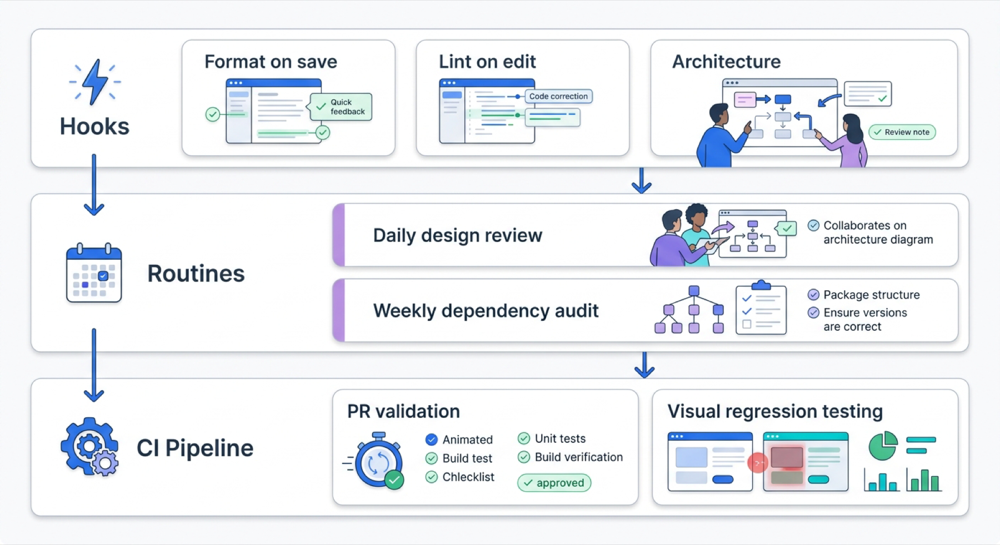
Three layers of design automation: hooks, routines, and CI pipeline
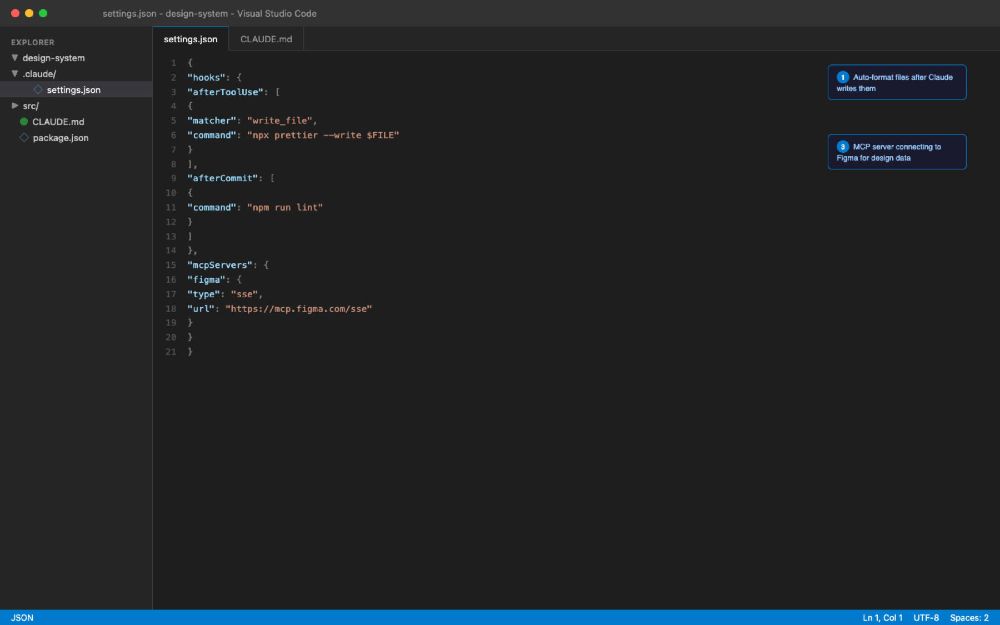
Hooks configuration: automatic formatting, validation, and accessibility checks on every edit
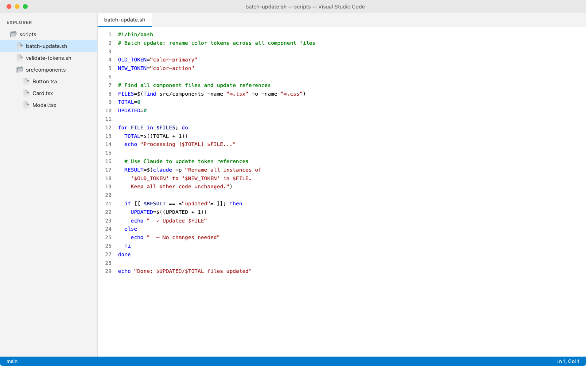
Batch operation: updating 9 files with new color token names in a single run
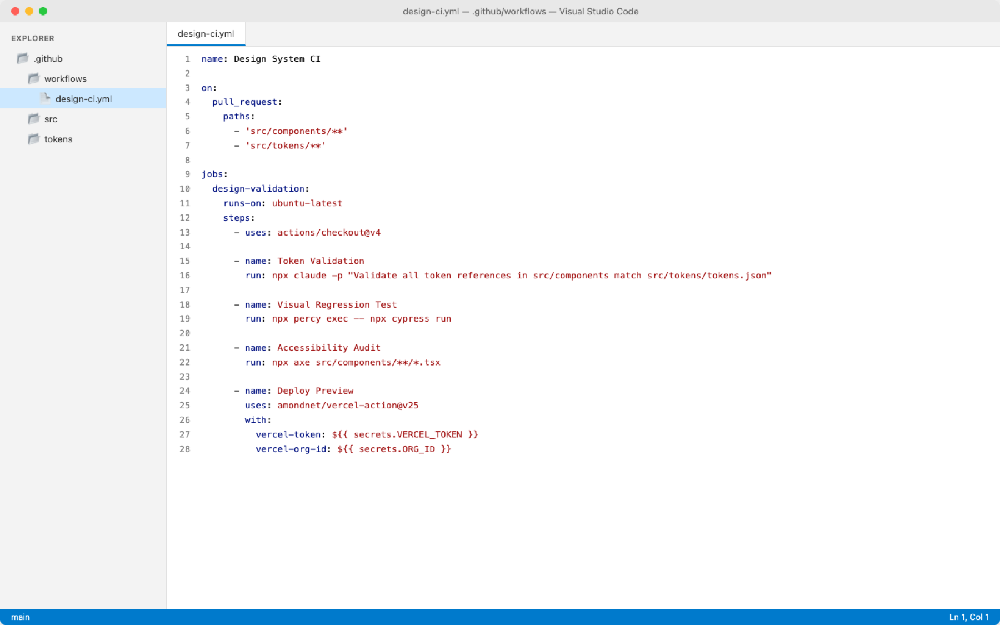
CI pipeline for design assets: validate, test, audit, and deploy on every pull request
Connecting Your Design Tools
MCP servers, Figma integration, browser testing, and building your tool integration map
Every chapter so far treated Claude Code as a standalone tool. You prompted, Claude built, you reviewed. This chapter opens the door to everything else on your computer. Figma files, Notion docs, Slack conversations, your browser — all of it can feed into Claude Code through a standard called MCP. By the end, you will have a connected workspace where your design tools talk to each other through Claude Code as the hub.
Figma
→
Claude Code
→
Notion
→
Slack
→
Ship
Think of Claude Code as a hub with spokes reaching out to your other tools. Each spoke is an MCP server — a small plugin that adds a new connection. Figma for design data. Notion for documentation. Slack for team communication. Your browser for visual verification. Each one you add makes Claude Code more useful.
8.1 What Is MCP
What Is MCP
MCP is a standard for connecting AI tools to external systems. For designers, it works like a plugin system — each MCP server you add gives Claude Code a new connection to a tool you already use.
MCP stands for Model Context Protocol. It is an open-source standard, maintained by Anthropic, that defines how AI applications talk to external tools and data sources. The official analogy: "Think of MCP like a USB-C port for AI applications." Every USB-C cable fits every USB-C port. Every MCP server fits every MCP-compatible client.
You do not need to understand the protocol itself. You need to know three things MCP servers can do:
Capability
What It Means
Design Example
Resources
File-like data Claude can read
A Figma file's component hierarchy, a Notion page's content
Tools
Functions Claude can call (with your approval)
"Get the login screen from Figma", "Create a Notion page"
Prompts
Pre-written templates for common tasks
"Extract all design tokens from this file"
The ecosystem is broad. MCP is supported by Claude Code, Claude Desktop, ChatGPT, Cursor, VS Code, JetBrains IDEs, and over forty other clients. The servers you set up for Claude Code also work in these other tools. One connection, many surfaces.
Transport types
MCP servers connect to Claude Code through one of three transport mechanisms:
Transport
How It Works
When to Use
http
Remote server over HTTPS (recommended)
Cloud-hosted services like Notion MCP
stdio
Local process running on your machine
Community servers, custom servers, local tools
sse
Legacy remote (deprecated)
Only for servers that have not migrated to HTTP
For most design tool connections, you will use http for cloud services and stdio for local tools. The command to add a server is the same pattern regardless of transport.
Server scopes
When you add an MCP server, you choose where it lives:
Scope
Available In
Shared with Team?
Stored In
Local
Current project only
No
~/.claude.json
Project
Current project only
Yes, via version control
.mcp.json in project root
User
All your projects
No
~/.claude.json
For design teams, project scope is the sweet spot. Check .mcp.json into your repository and every team member gets the same Figma, Notion, and design token connections when they clone the project.
# List all configured servers
claude mcp list
# Check status inside a session
/mcp
8.2 Connecting Figma
Connecting Figma
Figma is the tool most designers want to connect first. The MCP approach lets Claude Code read your design files, extract tokens, pull component specs, and export frames — all without leaving the conversation.
Figma now documents an official Figma MCP path for Claude Code. The recommended route is the remote Figma MCP server, usually installed through Figma's Claude Code plugin and OAuth flow. Community servers still exist, and they can be useful for custom pipelines, but they should no longer be presented as the default path.
Adding a Figma MCP server
# Preferred setup path for most designers
claude plugin install figma@claude-plugins-official
# After install, open /plugin or /mcp and complete OAuth.
Use personal access tokens only when a documented workflow requires them. Prefer OAuth where the official plugin supports it, because scopes, revocation, and account approval are easier to manage.
Once connected, Claude Code gains access to Figma tools:
Tool
What It Does
Designer Use Case
get_file
Fetch a Figma file's JSON structure
Understand the full component hierarchy
get_node
Get a specific node or component
Extract specs for a single screen or component
get_styles
Retrieve design tokens
Extract colors, typography, spacing as CSS variables
export_image
Render a frame as PNG or SVG
Get a visual reference for comparison
The Figma-to-code workflow
The canonical workflow looks like this:
"Implement the login screen from this Figma file:
https://www.figma.com/file/abc123/Login-Flow
Use our design tokens from CLAUDE.md. Extract the colors
and typography from the Figma styles first, then build the
component."
Claude Code fetches the design data, reads your CLAUDE.md for conventions, and generates a working component. You iterate from there, the same way you refined prototypes in Chapter 3.
Using @ mentions for Figma resources
MCP servers can expose resources you reference with @ in your prompt:
"Analyze @figma:file://abc123 and create a React component
for the hero section. Compare it to
@figma:component://hero-v2 if that exists."
Resources appear in the autocomplete menu. You do not need to type the full URI — start typing @figma and select from the list.
Figma API data is not pixel-perfect
The Figma REST API returns structured JSON that approximates what you see in the Figma UI. Some properties — like complex auto-layout nesting, component instance overrides, or plugin-rendered content — may not translate exactly. Always verify the extracted data against your Figma file before trusting it for production code.
8.3 Design Tool Integrations
Design Tool Integrations
MCP is tool-agnostic. Any design application with an API can be connected using the same pattern: find or build an MCP server, add it to Claude Code, use the tools in conversation.
Figma is the most common starting point, but the pattern generalizes. Sketch, Adobe XD, Storybook, design token platforms — if it has an API, it can have an MCP server.
Three tools in that table list "Build your own" as the MCP server path. If you use Sketch, Adobe XD, or Zeroheight and want a custom server, see section 8.6 for the build process. The MCP ecosystem is growing — a "build your own" entry today may have a community server next month.
The universal design token extraction pattern
Regardless of which design tool you use, the MCP server pattern for designers follows a consistent shape. Here is what a tool for extracting design data looks like in Python:
from mcp.server.fastmcp import FastMCP
mcp = FastMCP("design-tools")
@mcp.tool()
async def extract_colors(design_url: str) -> str:
"""Extract the color palette from a design file URL."""
colors = await fetch_colors(design_url)
return format_as_css_vars(colors)
@mcp.tool()
async def get_spacing_system(design_url: str) -> str:
"""Extract spacing values from a design file."""
spacing = await analyze_spacing(design_url)
return format_as_tailwind_config(spacing)
@mcp.tool()
async def compare_designs(url_a: str, url_b: str) -> str:
"""Compare two design files and highlight differences."""
diff = await compute_diff(url_a, url_b)
return format_diff(diff)
mcp.run(transport="stdio")
Three tools. Three capabilities. This is the pattern that works across every design tool integration — read data, extract structured information, compare versions. You build this once for your tool of choice and it works everywhere.
Adding any community server
The command is the same regardless of the design tool:
# Add any stdio-based design MCP server
claude mcp add --transport stdio sketch -- npx -y sketch-mcp-server
# Add Storybook integration
claude mcp add --transport stdio \
--env STORYBOOK_URL=http://localhost:6006 \
storybook -- npx -y storybook-mcp
If a server does not exist for your tool, you can build one. Section 8.6 covers that process.
8.4 Slack and Notion Workflows
Slack and Notion Workflows
Slack routes design tasks from team chat to working code. Notion gives Claude Code access to design briefs, specs, and documentation. Together, they turn conversations into implementations.
Slack integration
Claude Code has two distinct Slack features. Understanding the difference matters.
Feature
What It Does
Designer Use Case
Claude Code in Slack
Full coding sessions triggered by @mention
Post a Figma link, ask Claude to implement it, get a PR back
Channels (push)
Push events into a running session
Get notified when a build finishes, send tweaks from your phone
Claude Code in Slack is the feature most design teams will use day-to-day. You install the Claude app from the Slack Marketplace, connect your account, and invite @Claude to a channel. When you mention Claude with a coding task, it detects the intent, creates a Claude Code session on the web, and posts status updates back to the thread.
The session flow:
1. You @mention Claude with a request in a Slack channel
2. Claude detects coding intent
3. A new Claude Code session starts on claude.ai/code
4. Status updates appear in the Slack thread
5. On completion: summary + "View Session" and "Create PR" buttons
You choose a routing mode during setup. "Code only" sends every mention to a Claude Code session. "Code + Chat" routes intelligently — coding tasks to Code, writing and analysis tasks to Chat. For design teams, "Code + Chat" is the better choice because you will mix implementation requests with design feedback discussions.
Notion integration
Notion has an official, production-ready MCP server at https://mcp.notion.com/mcp. This is one of the most reliable integrations available — maintained by Notion itself, with OAuth authentication and enterprise controls.
# Add the official Notion MCP server
claude mcp add --transport http notion https://mcp.notion.com/mcp
After adding, authenticate inside a session:
/mcp
This opens the OAuth flow. Grant access to the workspaces and pages you want Claude Code to reach. Notion's admin controls let enterprise teams approve or block specific AI apps at the organization level.
Once connected, you can reference Notion pages directly:
"Read the design brief at @notion:page://design-brief-v3
and build the component library based on the specifications.
Cross-reference with our existing components in src/components/."
The combined workflow
This is where the hub model pays off. A single workflow can span three tools:
Designer posts Figma link in Slack channel
→ Claude Code reads the Slack message
→ Claude Code fetches the Figma design via MCP
→ Claude Code reads the Notion design brief for context
→ Claude Code implements the design
→ Claude Code creates a pull request
→ Claude Code updates the Notion task with implementation notes
→ Status posted back to the Slack thread
Each step uses a different MCP server. Claude Code orchestrates the sequence because it has access to all three tools simultaneously.
Channels for mobile design ops
Channels push events into a running Claude Code session. They are currently in research preview and support Telegram, Discord, and iMessage.
# Install a channel plugin
claude --channels plugin:telegram@claude-plugins-official
claude --channels plugin:discord@claude-plugins-official
Channels are research preview
The pairing code flow and setup steps may change as the feature evolves. For designers, channels enable lightweight mobile interactions: "Increase the header padding to 24px" sent from iMessage while you are away from your desk.
8.5 Browser-Based Design Verification
Browser-Based Design Verification
The Chrome extension closes the feedback loop between code generation and visual output. It lets you see what Claude built, compare it to your design reference, and iterate without leaving the browser.
Every chapter in this book follows the same loop: describe your design, review the output, refine. But reviewing the output has always required a manual step. You generate code, open a browser, refresh, check it against your Figma file. That context switch breaks your flow. The Chrome extension removes it.
Think of it like the preview pane in Figma that shows your component in context. Except here, the "context" is a real browser rendering real code, and Claude can see what you see.
The visual verification workflow
The workflow is a three-step loop that replaces the old "generate, switch tabs, squint, switch back" routine:
1
Open the page Claude built in Chrome. The extension captures a screenshot and sends it back to the conversation.
2
Paste your design reference (a Figma export, a screenshot, or a description of the expected visual). Ask Claude to compare.
3
Claude lists the visual differences and fixes them. Repeat until the output matches your intent.
The prompt that triggers this workflow:
"Open the login page in Chrome. Take a screenshot. Compare
it to the design reference I pasted. List any visual
differences and fix them."
Claude opens the page, captures what it sees, compares pixel-level details against your reference, and returns a structured list: spacing is off by 8px on the heading, the button color is #3B82F6 instead of #4F46E5, the border radius is 4px instead of 8px. Then it fixes each one.
Why this matters for designers
Designers judge output visually, not by reading code. The Chrome extension meets you where your judgment is strongest: looking at the rendered result. You do not need to parse CSS to know something is wrong. You can see it, describe what you see, and Claude adjusts.
This is the quality gate that was missing. Without it, you generate code, mentally render it in your head (or open a browser separately), and try to describe the visual gap in words. With it, Claude sees the same rendering you do. The feedback loop shrinks from minutes to seconds.
The comparison works best when your CLAUDE.md is loaded (Chapter 5). With design tokens defined, Claude can identify that "the blue is wrong" means the CSS is using #3B82F6 instead of your defined --color-primary: #4F46E5. The visual check plus the token reference gives Claude enough context to fix the problem in one pass.
My Take
The Chrome extension is the most immediately valuable integration for designers — even more than Figma. Being able to see what you built, compare it to a reference, and iterate visually closes the feedback loop that has been missing from AI-assisted design. Figma integration is more valuable long-term for design system workflows, but the Chrome extension changes how you work on day one.
Tip
Pair the Chrome extension with a screenshot of your Figma frame for the most accurate comparison. Export the frame as a 2x PNG, paste it into the conversation alongside the Chrome screenshot, and ask Claude to diff them. The side-by-side visual comparison catches spacing, color, and typography issues that text descriptions miss.
8.6 Custom Servers and Connected Workspaces
Custom Servers and Connected Workspaces
When no existing MCP server fits your design tool, you build one. When you have multiple servers running, you orchestrate them into a connected workspace. This section covers both.
Think of building an MCP server like creating a Figma plugin — you define what data your tool can provide and what actions it can take, and Claude Code handles the rest. The MCP SDK gives you the structure. You fill in the design-specific logic.
The fastest path is asking Claude Code to scaffold the server for you:
Claude asks about your use case and generates a working server with the right transport and tool definitions. This works for both local stdio servers and remote HTTP servers.
A design token MCP server in TypeScript
Here is a complete structural example — a server that exposes design-token and component tools. The fetch helpers are intentionally small placeholders because every design source has a different API contract:
import { McpServer } from "@modelcontextprotocol/sdk/server/mcp.js";
import { StdioServerTransport } from "@modelcontextprotocol/sdk/server/stdio.js";
import { z } from "zod";
const server = new McpServer({
name: "design-tokens",
version: "1.0.0",
});
type TokenSet = Record<string, string | number>;
async function fetchAndExtractTokens(fileUrl: string): Promise<TokenSet> {
// Replace with your Figma, token repository, or design-system API call.
return { "color.primary": "#4F46E5", "radius.md": 8, "spacing.4": 16 };
}
function formatTokens(tokens: TokenSet, format: "css" | "scss" | "json" | "tailwind"): string {
if (format === "json") return JSON.stringify(tokens, null, 2);
return Object.entries(tokens)
.map(([key, value]) => `--${key.replaceAll(".", "-")}: ${value};`)
.join("\\n");
}
async function fetchComponent(fileUrl: string, componentName: string) {
// Replace with your real component lookup.
return { fileUrl, componentName, states: ["default", "hover", "disabled"] };
}
server.registerTool(
"get_tokens",
{
description: "Get design tokens from a design file",
inputSchema: {
file_url: z.string().describe("URL to the design file"),
format: z.enum(["css", "scss", "json", "tailwind"])
.describe("Output format"),
},
},
async ({ file_url, format }) => {
const tokens = await fetchAndExtractTokens(file_url);
const output = formatTokens(tokens, format);
return { content: [{ type: "text", text: output }] };
}
);
server.registerTool(
"get_component",
{
description: "Get component specs from a design file",
inputSchema: {
file_url: z.string().describe("URL to the design file"),
component_name: z.string().describe("Component name"),
},
},
async ({ file_url, component_name }) => {
const specs = await fetchComponent(file_url, component_name);
return {
content: [{ type: "text", text: JSON.stringify(specs, null, 2) }],
};
}
);
async function main() {
const transport = new StdioServerTransport();
await server.connect(transport);
}
main().catch(console.error);
Two tools. One fetches design tokens in the format your project needs. One fetches component specifications. Both return plain text that Claude Code reads and acts on. In design terms: the first tool is like exporting your Figma variables as CSS. The second is like reading a component's inspect panel.
Team configuration with .mcp.json
Once your custom server is built, add it to the project configuration alongside the other design tools:
Check this file into version control only after a security review. Every team member who clones the repository gets the same MCP connection definitions, so each server should be trusted, documented, and scoped. Environment variables such as ${FIGMA_TOKEN} are set individually and should never be committed.
MCP trust checklist
Before adding an MCP server, confirm who maintains it, what scopes it requests, whether it can write, where secrets live, and how to revoke access. New servers can expose prompts, files, and tool outputs to another system. Treat them like browser extensions or Figma plugins: useful, but only after trust and permission review.
Enterprise managed configuration
For organizations, admins can deploy a fixed set of MCP servers to all machines:
Managed configuration ensures every designer on the team has the same Figma, Notion, and design system connections without manual setup. IT deploys the file, and the tools appear in everyone's Claude Code.
Choosing your connections
Not every team needs every integration. Here is a decision framework:
Tool
When to Connect
When to Skip
Priority
Figma
Design in Figma and need code to match
Do not use Figma or designs are not detailed
High
Notion
Store design briefs, specs, or task tracking in Notion
Use a different tool for documentation
High
Slack
Team routes design requests through Slack channels
Work solo or use a different chat tool
Medium
Storybook
Have a running Storybook with existing components
Do not use Storybook yet
Medium
Custom token server
Have a complex design token pipeline
Tokens live in CLAUDE.md or CSS files
Low
Channels (Telegram/Discord/iMessage)
Want mobile access to Claude Code sessions
Always at your desk
Low
Start with one connection that solves a real pain point. For most designers, that is Figma — being able to say "implement this screen from Figma" and have Claude Code pull the design data directly is the most immediate workflow improvement. Notion is the second priority if your team stores specs there. Slack comes third for teams that route work through channels.
My Take
Do not try to connect every tool at once. Each integration adds setup complexity and ongoing maintenance. Start with the one that hurts the most — the tool you find yourself copying data from into Claude Code prompts manually. That is your first MCP server. Once that connection is stable and useful, add the next one. Three working connections beat six half-configured ones.
The compound value kicks in at two or three connections. Figma alone is useful. Figma plus Notion means Claude Code reads your design and your brief simultaneously. Figma plus Notion plus Slack means a teammate can trigger the whole workflow from a chat message. That is the hub model paying off.
Claude Code as an MCP server
Claude Code itself can act as an MCP server. This means other AI tools — Claude Desktop, Cursor, or any MCP-compatible client — can use Claude Code's file editing, terminal access, and development capabilities through the same protocol.
Add this configuration to another MCP client, and that client gains the ability to read your project files, run commands, and edit code — all powered by Claude Code. For designers who prefer Claude Desktop's interface for exploration but need Claude Code's execution capabilities, this bridge gives you both.
The connected workspace is not about connecting everything. It is about connecting the right things — the tools where your design work already lives — so Claude Code operates on real data instead of pasted prompts.
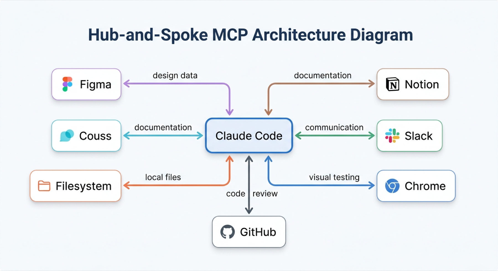
MCP architecture: Claude Code as the hub connecting your design tool stack
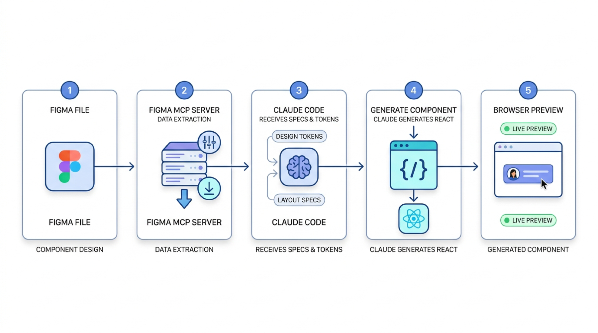
Figma to code flow: design tokens travel from Figma through MCP to working components
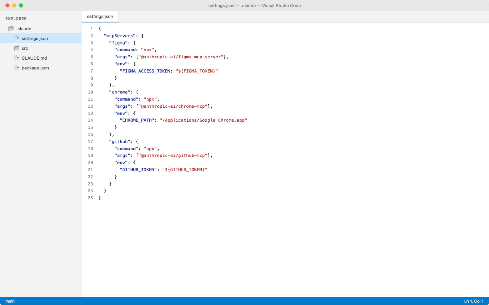
Browser-based design verification: spotting every difference between design and implementation
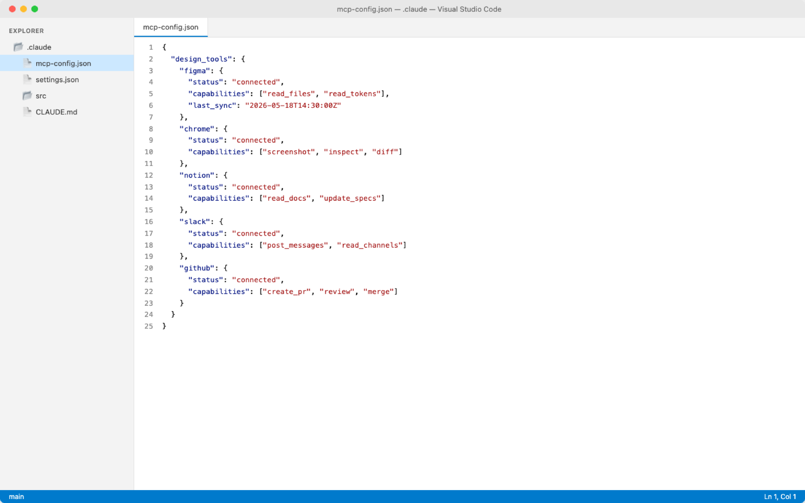
Tool integration map: which connections to set up first, based on your team size
From Design to Production
The capstone: take a design concept through to production-ready code
You have the skills. Prompting patterns from Chapter 4, CLAUDE.md from Chapter 5, design systems from Chapter 6, automation from Chapter 7, tool integrations from Chapter 8. This chapter puts them all together. You will follow a single design project — a SaaS pricing page — from blank folder to deployed site. Every technique in the book shows up here, in sequence, for real.
Production readiness contract
Do not ship because the page looks good in one browser. Ship only after build, tests, responsive screenshots, keyboard navigation, accessibility checks, performance budget, data/privacy review, security review, owner approval, and rollback path are all accounted for. Claude Code can help run these checks, but a human remains responsible for the release decision.
Define
→
Explore
→
Prototype
→
Refine
→
Harden
→
Ship
Think of this pipeline like the design process you already know: research, wireframe, visual design, refine with feedback, hand off for build, launch. Each stage maps to specific Claude Code techniques. You can pause between any stage and resume later.
9.1 Design-to-Production Pipeline
Design-to-Production Pipeline
The full pipeline has six stages. Each has a goal, a Claude Code technique, and a chapter in this book that teaches it in depth.
Stage
Goal
Claude Code Technique
Learned In
1. Define
State the design problem clearly
Natural-language design brief in plan mode
Ch 3 — Design intent
2. Explore
Understand constraints and options
Plan mode file exploration + reference analysis
Ch 4 — Prompting
3. Prototype
First working version
Implementation from plan with CLAUDE.md
Ch 3 + Ch 5
4. Refine
Match design intent
Chrome extension visual verification + iteration
Ch 8 — Browser testing
5. Harden
Production quality
Accessibility audit, responsive fixes, hooks
Ch 6 + Ch 7
6. Ship
Deploy to users
Tests, commit, PR, deploy pipeline
Ch 7 — CI integration
This pipeline works for any size project. A single landing page might move through all six stages in one session. A full product might take weeks, with separate sessions for each stage. The structure stays the same.
Break between stages
Long sessions accumulate context that degrades output quality. I recommend running /clear between stages and resuming with --continue. The plan and CLAUDE.md carry forward; the accumulated noise does not.
9.2 Choosing Your Tech Stack
Choosing Your Tech Stack
Claude Code is stack-agnostic. It works with whatever frameworks your project uses. For designers moving to production, three stacks cover most cases.
Stack
Best For
Deploy Target
Claude Knowledge
Next.js + Tailwind
Production sites, marketing pages, dashboards
Vercel (zero-config)
Deep — conventions, App Router, SSR
Vite + React + Tailwind
SPAs, component libraries, rapid prototyping
Any static host
Strong — standard patterns
Static HTML + CSS
Landing pages, email templates, simple sites
Anywhere
Excellent — no framework conventions
For this capstone, I am using Next.js with Tailwind CSS. It is the most common production stack, and Claude Code has deep knowledge of Next.js conventions — the App Router, file-based routing, server components, and image optimization.
Scaffolding the project
Start Claude Code in the folder where you want the project to live. Ask it to scaffold everything.
Create a new Next.js 15 project with TypeScript and Tailwind CSS v4.
Use the App Router. Set up:
- src/app/ for pages
- src/components/ui/ for design system primitives
- src/components/ for composed components
- src/lib/ for utilities
Configure a CLAUDE.md with:
- Inter as the primary font
- Primary color: #6366f1 (indigo)
- Secondary color: #ec4899 (pink)
- Neutral: slate gray scale
- 2-space indentation, PascalCase components, kebab-case files
- Run typecheck and lint before committing
Claude generates the full project structure, configures Tailwind, writes the CLAUDE.md, and sets up the initial page. The CLAUDE.md ensures every future session starts with the same design language — the tokens, naming, and conventions from Chapter 5.
# CLAUDE.md (generated)
## Tech Stack
- Next.js 15 with App Router, TypeScript strict, Tailwind CSS v4
## Design Tokens
- Font: Inter (headings 700, body 400)
- Colors:
- primary: #6366f1
- secondary: #ec4899
- neutral: slate-50 through slate-900
- Spacing: Tailwind default scale (4px base unit)
- Border radius: 8px cards, 6px buttons, full for avatars
## Code Style
- 2-space indentation
- Components: PascalCase, kebab-case files
- Use CVA for variant management
- Forward refs on all primitives
- ARIA attributes on interactive elements
## Workflow
- Run `npm run typecheck` after changes
- Run `npm run lint` before committing
- Start dev server: `npm run dev` (port 3000)
My Take
Plan mode is the most underused feature for design projects. Spending 10 minutes exploring before coding saves hours of iteration. Without exploration, Claude builds the first thing that comes to mind. With exploration, Claude builds the right thing. For small, well-defined tasks, skip planning and go straight to implementation. For anything with more than two components, plan first.
9.3 Building the Component Library
Building the Component Library
With the project scaffolded and CLAUDE.md in place, you build the design system primitives first. These are the building blocks every page section will use.
Three approaches to component generation
Claude Code can build components from a screenshot, from design tokens, or by following existing patterns in your codebase. The pattern-based approach produces the most consistent, production-ready output.
Pattern-based (recommended)
Look at @src/components/ui/Button.tsx to understand our
component patterns. Follow that pattern to build a Card
component with:
- Variant prop: elevated, outlined, filled
- Padding prop: sm, md, lg
- Slots for header, body, and footer
- Support for loading state
Screenshot-only (less consistent)
[paste screenshot]
Build this card component.
The pattern-based approach references an existing component so Claude matches your conventions — file structure, export style, prop naming, and TypeScript patterns. The screenshot approach works for one-off components but produces inconsistent code across a library.
Generating the full primitive set
Ask Claude to build all the primitives your pricing page needs in one prompt.
Build the following primitives in src/components/ui/.
Follow the Button.tsx pattern for structure, naming, and exports.
1. Card — composed with CardHeader, CardBody, CardFooter
- Variants: elevated, outlined, filled
- Padding: sm (12px), md (16px), lg (24px)
2. Badge — color variants (primary, secondary, neutral, success, warning)
- Optional dot indicator
- Sizes: sm, md
3. Avatar — image with fallback initials
- Sizes: sm (32px), md (40px), lg (56px)
- Group layout support (overlapping avatars)
4. PriceCard — specialized card for pricing tiers
- Props: tier name, price, period, features list, CTA text, highlighted
- Highlighted variant gets a ring and "Recommended" badge
Each component must:
- Accept className for overrides
- Forward refs with forwardRef
- Include TypeScript types
- Be fully accessible (ARIA, keyboard navigation)
Claude generates all four components. Because CLAUDE.md specifies design tokens and the Button.tsx reference establishes conventions, the output is consistent without you re-explaining anything.
A production component: the accessible Dialog
As an example of what production-ready looks like, here is the Dialog component Claude generates when you specify accessibility requirements.
This component traps focus inside the dialog, returns focus to the trigger when closed, responds to the Escape key, and uses proper ARIA attributes. You did not write any of this. You described what you needed, and Claude built it.
Tip
When you specify accessibility requirements in your component prompt, Claude includes them by default. When you do not specify them, Claude sometimes skips them. Always include accessibility requirements in your component briefs.
9.4 Responsive Design and Accessibility
Responsive Design and Accessibility
The prototype works on your screen. Now make it work on every screen and for every user.
Responsive design with specific breakpoints
Claude generates responsive layouts when you give it concrete breakpoint requirements. Vague instructions produce generic results. Specific instructions produce layouts that match your design intent.
Build the pricing page layout with these breakpoints:
- Mobile (<640px): single column, stacked cards, full-width CTA
- Tablet (640-1024px): 2-column grid for pricing cards
- Desktop (>1024px): 3-column grid with sidebar for FAQ
The navigation should collapse to a hamburger on mobile.
The feature comparison table should scroll horizontally on mobile.
Use Tailwind responsive prefixes (sm:, md:, lg:).
Claude applies these breakpoints across all components. Because the design tokens are defined in CLAUDE.md, the spacing, font sizes, and colors stay consistent across every breakpoint.
Accessibility as a prompt requirement
The same specificity principle applies to accessibility. Telling Claude to "make it accessible" produces partial results. Listing specific requirements produces thorough ones.
Review the pricing page for accessibility:
1. All images have alt text
2. Form labels are associated with inputs via htmlFor
3. Color contrast meets WCAG 2.1 AA (4.5:1 for body text)
4. All interactive elements are reachable via Tab
5. The pricing cards have role="group" with aria-label
6. The FAQ accordion uses aria-expanded and aria-controls
7. Focus indicators are visible (not outline:none)
8. The page has a logical heading hierarchy (h1, h2, h3)
Fix any issues you find.
Chrome extension for visual verification
The Chrome integration closes the feedback loop. You build something, Claude opens it in the browser, compares it to your design reference, and tells you what needs fixing.
claude --chrome
Open localhost:3000 in Chrome and verify:
1. The page matches the original design mockup I pasted
2. All sections render correctly on mobile (375px) and desktop (1440px)
3. No console errors
4. Tab navigation works through all interactive elements
5. Color contrast meets WCAG AA standards
Take a screenshot and tell me what needs fixing.
Claude reads the console, inspects the DOM, takes a screenshot, and compares it to your reference. It returns a list of visual differences — wrong spacing, misaligned elements, missing styles — and fixes them.
Warning
Code that looks correct in your editor can render differently in the browser. CSS specificity conflicts, missing imports, and responsive breakpoints do not show up in the code. They show up when you open the page. Always verify visually. The Chrome extension exists for this reason.
9.5 Testing and QA
Testing and QA
The prototype looks right. Now verify it behaves right — across states, screen sizes, and interactions.
Test generation that follows your patterns
Claude examines your existing test files to match the framework, assertion style, and structure your project uses. You do not need to specify which testing library to use — Claude reads your package.json and follows what is already there.
Write tests for the PriceCard component. Cover:
- Rendering with default props
- Rendering in highlighted state
- CTA button click fires the onClick handler
- Feature list renders all items
- Badge appears on highlighted card
- Responsive layout on mobile viewport
Run the tests and fix any failures.
Claude generates the test file, runs it, and fixes any failures. Here is what the output looks like when the project uses vitest.
The single highest-leverage technique for quality is giving Claude a way to verify its own work. The best practices documentation emphasizes this repeatedly. Compare two approaches.
Verification-first prompt
Implement the FAQ accordion component.
After implementing:
1. Run the component tests
2. Open localhost:3000 in Chrome
3. Verify keyboard navigation works
(Tab between items, Enter to expand)
4. Check that aria-expanded toggles correctly
5. Screenshot the result
Fix anything that fails.
Implementation-only prompt
Implement the FAQ accordion component.
The verification-first prompt produces fewer bugs because Claude checks its own work immediately. When it finds a problem, it fixes it before showing you the result.
Hooks for automatic quality gates
Hooks guarantee that quality checks run after every change. Unlike CLAUDE.md instructions (advisory — Claude might ignore them), hooks are deterministic — they run every time without exception.
This hook configuration runs ESLint auto-fix after every file write or edit, and runs typecheck + lint + tests before completing any session. If any check fails, the session does not end clean — Claude keeps working until everything passes.
9.6 Deploying
Deploying
The code works locally. The tests pass. Time to put it on the internet.
The full deploy checklist
Before deploying, run through this checklist. Each item is a prompt you give Claude.
Category
Check
How to Verify
Tests
All tests pass
npm test
Types
No TypeScript errors
npm run typecheck
Lint
No lint errors
npm run lint
Build
Production build succeeds
npm run build
Responsive
Works on mobile, tablet, desktop
Chrome extension at 375px, 768px, 1440px
Accessibility
Tab navigation, contrast, ARIA
Manual Tab-through + Chrome DevTools audit
Console
No errors or warnings
Chrome extension reads console
Visual
Matches design mockup
Screenshot comparison with reference
Claude can run this entire checklist in a single prompt.
Run the full pre-deploy checklist:
1. Run all tests — fix failures
2. Run typecheck — fix errors
3. Run lint — fix issues
4. Run production build — fix errors
5. Open localhost:3000 in Chrome
6. Check responsive at 375px, 768px, 1440px
7. Tab through all interactive elements
8. Check console for errors
9. Take a screenshot and compare to the design mockup
Fix anything that fails. Then commit with:
"feat: pricing page — three tiers, comparison table, FAQ accordion"
Deploying to Vercel
For a Next.js project, Vercel is the default deployment target. The connection is native — push to main, the site updates.
Commit all changes and push to the main branch.
Vercel is connected to this repo and will auto-deploy.
After deployment completes, open the live URL in Chrome and:
1. Check for console errors
2. Verify all images load
3. Test the responsive layout on mobile
4. Take a screenshot and compare to the design mockup
Deploying as a static demo
For sharing a design without a server — a client review, a design critique, a portfolio piece — ask Claude to build a self-contained HTML file.
Build the pricing page as a single self-contained HTML file
that works offline when opened by double-clicking. Bundle all
CSS and JS inline. The file should work with no server.
GitHub Actions for continuous quality
For team projects, every pull request gets an automated review. Claude Code runs as a GitHub Action that checks accessibility, responsive design, and component consistency.
Every PR now gets a design-oriented review before merge. This catches regressions that manual review misses — a color token swapped for a hardcoded value, a missing aria-label, a responsive breakpoint that broke during refactoring.
My Take
The biggest mistake designers make with AI coding tools is stopping at the prototype stage. The jump from prototype to production is where the real value is. Anyone can generate a prototype. Production-quality code that handles edge cases, accessibility, and responsive design is what separates experiments from shipped products. Not every project needs production quality — prototypes for user testing are valuable on their own. But if you are putting something on the internet with your name on it, take the time to harden it.
You started with a blank folder. You now have a pricing page built on a design system, tested, accessible, responsive, and deployed. Every technique came from a previous chapter. The pipeline is repeatable — define, explore, prototype, refine, harden, ship — for any project, any size, any stack. This is the workflow the book has been building toward. Everything else is practice.
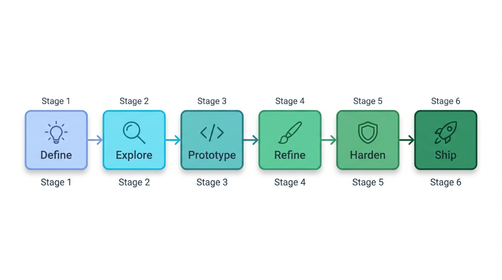
The six-stage design-to-production pipeline: define, explore, prototype, refine, harden, ship
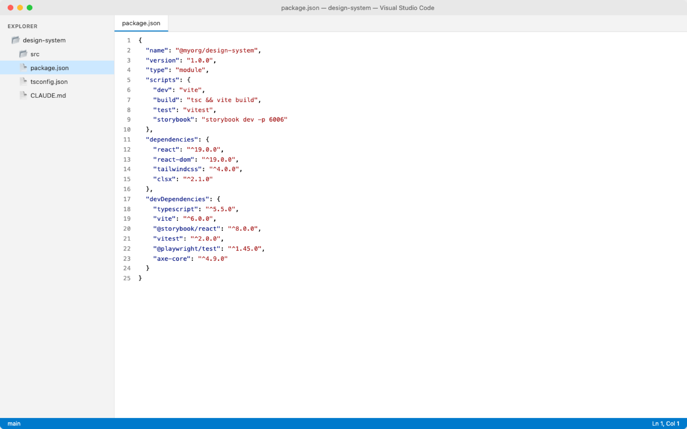
Generated component library structure: organized, documented, and ready for production
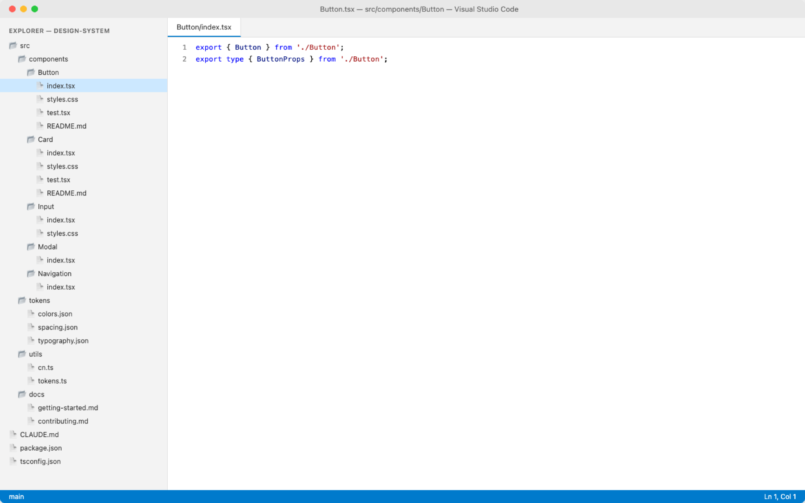
Responsive breakpoints: one layout, three views, all generated from a single codebase
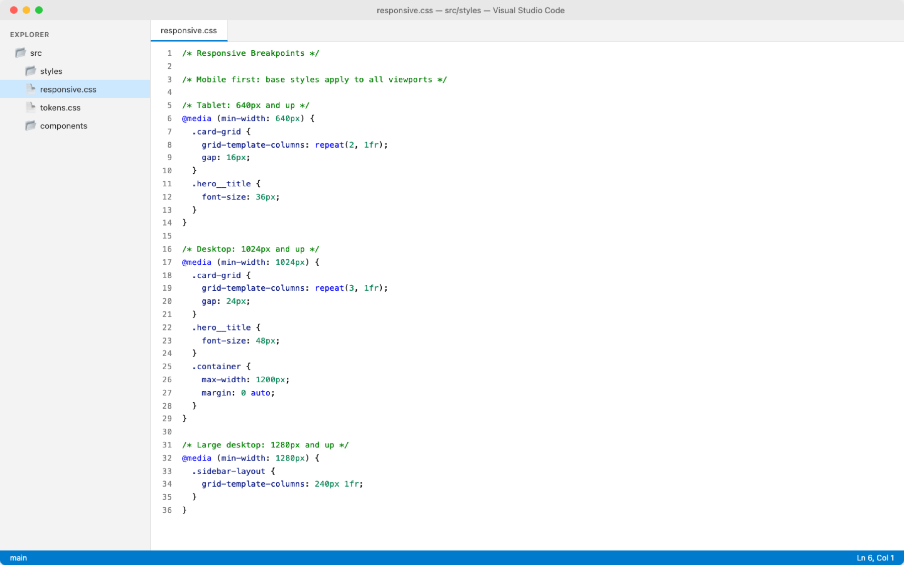
From prototype to deployed: build, test, audit, and ship in one session
The AI Design Tool Landscape
Claude Code vs Cursor, Copilot, v0, Bolt, and the rest — a designer's comparison guide
You have spent nine chapters learning Claude Code inside out. But Claude Code is not the only AI tool a designer can reach for. Cursor, GitHub Copilot, v0, Bolt, and Lovable all offer ways to turn design intent into working output. This chapter maps the full landscape, compares every major tool head-to-head, and gives you a decision framework so you pick the right tool for the task at hand.
Snapshot, not permanent ranking
Tool capabilities, model access, pricing, MCP support, and enterprise controls change monthly. Use this chapter as an evaluation method, not a static leaderboard. Before a team decision, re-check official docs for Claude Code, Codex, Cursor, Copilot, v0, Bolt, Lovable, OpenCode, Gemini CLI, Figma MCP, Paper/Pencil/OpenPencil, and any internal tools your organization has approved.
Visual-First
→
Assisted
→
Agentic
→
Production
Think of AI design tools like your design software toolkit: Figma for layouts, Illustrator for illustrations, Photoshop for image editing. Each AI tool has strengths. The right approach is to pick the right tool for the task, not to find one tool that does everything.
10.1 The AI Design Tool Spectrum
The AI Design Tool Spectrum
The AI design tool landscape divides into three tiers based on how close to the code you want to be.
The fundamental question every designer faces when evaluating AI tools is: how much code do you want to see? Some tools hide the code entirely and give you a visual canvas. Others immerse you in the code and make you an editor. Most designers land somewhere in the middle, and that is exactly where the most interesting tools live.
I group the current landscape into three tiers. Each tier has a distinct philosophy about the relationship between designer and code.
Tier
Philosophy
Tools
You See Code?
Visual-First Builders
Describe what you want, get a working app. Code is hidden.
v0, Bolt, Lovable
Optional
Assisted Editors
Work in your editor with inline AI help. Code is front and center.
GitHub Copilot
Always
Agentic Tools
Give an agent instructions. It reads your codebase, edits files, runs commands.
Claude Code, Cursor
Always
This spectrum runs from "show me the result" on the left to "show me the codebase" on the right. Where you land depends on your comfort with code, your project complexity, and what you are trying to accomplish.
Visual-first tools win for speed. You describe a design, get a preview in seconds, and iterate visually. But they generate fresh code each time with no awareness of your existing project. Agentic tools are slower to start but understand your full codebase, follow your conventions, and produce code you can ship. Assisted editors sit in the middle, enhancing your existing workflow without taking over.
Why this matters for designers
The tier you choose determines your workflow shape. Visual-first tools create a generate-and-preview loop. Assisted editors create a type-and-suggest loop. Agentic tools create a describe-and-execute loop. If you are prototyping a single screen, the visual-first loop is faster. If you are implementing a design system across a product, the agentic loop is more powerful.
10.2 Claude Code vs Cursor
Claude Code vs Cursor
Two agentic tools with different philosophies. Claude Code is multi-surface and codebase-aware. Cursor is IDE-native with magical autocomplete.
Cursor and Claude Code are the two tools most often compared, and for good reason. Both are agentic. Both edit multiple files. Both understand your codebase. But they approach the problem from different directions, and the differences matter for designers.
Cursor is built as a custom IDE — a fork of VS Code with AI deeply woven into the editing experience. Its Tab autocomplete is eerily accurate, predicting your next edit before you finish typing. Composer 2 lets you describe changes and watch Cursor plan, then execute across multiple files. It feels like a supercharged code editor.
Claude Code is multi-surface by design. It runs in the terminal, VS Code, JetBrains, a desktop app, a web interface, and iOS. You can start a session on your laptop, continue on your phone, and review diffs in the desktop app. It trades the deep IDE integration of Cursor for flexibility across environments.
Dimension
Claude Code
Cursor
Winner for Designers
Core interface
Terminal, VS Code, JetBrains, Desktop, Web, iOS
Cursor IDE (forked VS Code), CLI, Slack
Claude Code (more surfaces)
Design system memory
CLAUDE.md loads every session
Cursor rules load every session
Tie
Autocomplete
None
Tab — best in class
Cursor
Codebase awareness
Full file reading, multi-step exploration
Codebase indexing, semantic search
Tie
Sub-agents
Spawn parallel agents for different tasks
Not available
Claude Code
Cloud agents
Not available
Agents run on Cursor's infrastructure
Cursor
Model access
Claude models (Opus, Sonnet, Haiku)
GPT-5.5, Opus 4.7, Gemini 3.1 Pro, Grok 4.3
Cursor (more models)
Plugin ecosystem
Skills, MCP servers, hooks
Marketplace, MCP, skills, hooks
Tie
Cost (individual)
$20/mo (Claude Pro includes Claude Code)
$20/mo (Pro)
Tie
Cost (team)
$25/user/mo
$40/user/mo
Claude Code
My Take
For designers who want to build real production UI with deep codebase integration, Claude Code offers more flexibility. For designers who prefer an IDE-first experience with the best autocomplete on the market, Cursor is the stronger choice. Many designers I know use both — Cursor for daily editing and Claude Code for agentic multi-step tasks. That is a reasonable combination if your budget allows it.
Caution: Using two tools means maintaining two sets of rules files (CLAUDE.md and cursor rules) and two sets of configurations. The overhead is real.
Claude Code wins when
You need multi-surface workflows (start on desktop, continue on phone). You want sub-agents to work on different screens in parallel. You need to encode a design system in CLAUDE.md and have it followed consistently. You are working across multiple files in an existing project with established patterns.
Cursor wins when
You want the best inline autocomplete experience. You prefer everything inside one IDE. You want cloud agents that work autonomously on their own infrastructure. You need access to multiple model providers in one tool. Your team is already standardized on VS Code.
10.3 Claude Code vs GitHub Copilot
Claude Code vs GitHub Copilot
Copilot is the most widely adopted AI coding tool. It is also the least agentic. The comparison comes down to inline assistance versus autonomous execution.
GitHub Copilot holds the largest market share among AI coding tools, and for straightforward reasons: it is cheap, it works everywhere, and it has a generous free tier. If your team uses GitHub, Copilot is probably already available to you.
The key distinction for designers is the interaction model. Copilot's primary mode is inline suggestion — you type, it predicts, you press Tab to accept. Think of it like predictive text on your phone, except for code. It also has a chat panel and an agent mode, but the inline suggestion is what most people use.
Claude Code's primary mode is the opposite. You describe what you want in natural language, and Claude executes: reading files, editing multiple files, running commands, seeing the output, and iterating. The interaction is a conversation, not a suggestion stream.
Copilot Pro is $10/mo — half the price of Claude Pro. For designers who only need inline suggestions and occasional chat, Copilot delivers more value per dollar. The free tier (50 agent requests, 2K completions per month) is generous enough to evaluate whether AI-assisted coding works for your workflow before committing to a paid plan. Pricing accurate as of May 2026.
For designers already working in GitHub-connected teams, Copilot offers the smoothest entry point at the lowest cost. But for designers who need agentic power — the ability to say "build me a dashboard component using our design system" and have the tool execute it across multiple files — Claude Code is significantly more capable.
Copilot workflow:
1. Open file in VS Code
2. Start typing CSS
3. Copilot suggests the next line
4. Press Tab to accept
Claude Code workflow:
1. Open session
2. "Build a pricing card component using our
design tokens from CLAUDE.md. Include hover,
active, and disabled states."
3. Claude reads CLAUDE.md, reads existing
components for patterns, creates the file,
and runs the linter
10.4 Claude Code vs v0, Bolt, and Lovable
Claude Code vs v0, Bolt, and Lovable
The visual-first tools generate impressive output fast, but the code they produce lives in isolation from your project.
v0, Bolt, and Lovable represent a different category entirely. These tools do not help you edit code in an existing project — they generate new projects from natural language descriptions. They are the tools most designers try first because they require zero code knowledge.
v0 (by Vercel) has the strongest Figma integration — you can import Figma files directly. Its design mode lets you iterate visually without touching code. Bolt (by StackBlitz) has the best design system support, with named-brand systems like Porsche, Material UI, and shadcn available out of the box. Lovable targets designers explicitly with the tagline "Design real products, not mockups" and focuses on prototyping interaction flows including error states and permissions.
All three are impressive for quick prototypes. None of them understand your existing codebase. They generate fresh code each time, which means the output does not follow your team's conventions, does not use your design tokens, and does not integrate with your component library without manual effort.
Dimension
Claude Code
v0
Bolt
Lovable
Existing codebase
Full awareness
No awareness
GitHub import only
GitHub sync for handoff
Visual preview
None built-in
Live preview + design mode
Live preview
Live preview
Figma import
Via MCP server
Native
Native
No
Design systems
Via CLAUDE.md + codebase
Built-in support
Best support (named brands)
Workspace themes
Output quality
Production-ready
Prototype-quality
Prototype-quality
Prototype-quality
Deploy
Your CI/CD pipeline
One-click to Vercel
Built-in hosting
Built-in hosting
Best for
Production code in real projects
Fast visual prototypes
Quick shipping with design systems
Prototyping behavior flows
The two-tool combo that works
Use v0 or Bolt for initial exploration. Describe the design you want, iterate visually until it feels right, then take the final design as a reference. Rebuild it in Claude Code using your project's design system and component conventions. You get the speed of visual-first generation with the quality of production code. This is a pattern I see working well for designers who want both speed and quality.
Workflow: v0 for exploration, Claude Code for production
1. In v0: "Create a pricing page with three tiers,
a feature comparison table, and an FAQ section.
Use a modern, clean design with generous spacing."
2. Iterate visually in v0 until the design feels right.
3. Take a screenshot of the final v0 output.
4. In Claude Code: "Build a pricing page matching
this screenshot. Use our design tokens from
CLAUDE.md. Follow the component conventions
in src/components/. Make it responsive."
10.5 When to Use What
When to Use What
No single tool wins every scenario. The right choice depends on the task, the timeline, and how much code you are willing to touch.
I have tested every tool in this chapter on real design tasks. The decision matrix below is based on what actually happened, not what the marketing pages say. Use it as a starting point, then adjust based on your own experience.
Decision matrix by scenario
Scenario
Best Tool
Why
Alternative
Quick UI prototype from a Figma file
v0
Native Figma import + visual iteration
Bolt
Prototype with real backend behavior
Lovable
Focuses on interaction flows with Supabase backend
Bolt
Build a design system component library
Claude Code
Full codebase awareness + CLAUDE.md for design rules
Cursor
Implement a design in an existing production app
Claude Code
Only tool that reads the full codebase and understands patterns
Cursor
Pair programming with AI in an IDE
Cursor
Tab autocomplete + Composer 2 is the most fluid IDE experience
Copilot
Lowest-cost entry point
Copilot (Free)
2K completions + 50 agent requests/month at $0
Bolt Free
Working across devices
Claude Code
Terminal, desktop, web, iOS with session continuity
Cursor
Custom agent workflows
Claude Code
Agent SDK gives full control over orchestration
Cursor Cloud Agents
Decision matrix by designer persona
Not every designer has the same needs. Your role and technical comfort level should guide your tool choice as much as the task itself.
Persona
Primary Tool
Secondary Tool
Upgrade Path
Visual Designer (no code experience)
Lovable or v0
Bolt
Start visual-first, learn React patterns from generated code, eventually adopt Claude Code
UX Designer (some technical knowledge)
Bolt or v0
Copilot
Start with visual tools, add Copilot for inline help, adopt Claude Code for direct code work
Design Engineer (comfortable with code)
Claude Code
Cursor
Claude Code for implementation, Cursor for daily IDE work, v0 for quick prototyping
Design Technologist / Architect
Claude Code + Cursor
Copilot
Claude Code for architecture and complex features, Cursor for daily flow, Copilot as fallback in other IDEs
My Take
The prompt-to-UI tools (v0, Bolt, Lovable) are better for brainstorming and quick mockups, but the output is not production code. These tools generate impressive demos fast, but the code is often non-standard, hard to maintain, and lacks accessibility. The best approach for most design teams is to use a prompt-to-UI tool for exploration and Claude Code for execution. Each tool's strength compensates for the other's weakness.
Caution: Tool sprawl is real. Start with one tool and add others only when you hit a clear limitation.
10.6 The Future of AI-Assisted Design
The Future of AI-Assisted Design
Every tool in this chapter will be different in twelve months. The trajectory, though, is clear — and it points toward convergence.
I am not going to make predictions about which tool wins. That is a losing game in a market moving this fast. Instead, I will name the trajectories I see across all these tools and explain what they mean for designers.
Trajectory 1: Categories are blurring
The distinction between autocomplete, agent, and builder is disappearing. GitHub Copilot added agent mode. Cursor added cloud agents. v0 is becoming more agentic. Every tool is moving toward being able to do more autonomously. In twelve months, the tier system I described in Section 10.1 may not map cleanly anymore.
Trajectory 2: Design system integration is becoming mandatory
Every tool is investing in design system support. Bolt leads with named-brand design systems. v0 has design mode. Claude Code handles design systems through CLAUDE.md and codebase awareness. This trend will accelerate as enterprises demand AI tools that respect their brand guidelines. The tools that cannot enforce a design system will lose the enterprise market.
Trajectory 3: Multi-surface is the new baseline
Claude Code pioneered multi-surface workflows. Cursor now has desktop, CLI, Slack, and cloud agents. v0 has web and desktop. In a year, every tool will offer cross-device continuity. This is good for designers because it means you will not have to choose between your desk and your couch.
Trajectory 4: Pricing is moving to usage-based
GitHub Copilot is transitioning to usage-based billing. v0 uses credit-based token pricing. Bolt uses token-based pricing. The flat-rate subscription model is under pressure. This means you need to understand your usage patterns before committing to a plan. The cheapest tool on paper may not be the cheapest in practice.
Pricing snapshot (May 2026)
Cheapest entry: Copilot Free ($0)
Best value/dollar: Claude Code ($20/mo, full agentic)
Cheapest IDE pair: Copilot Pro ($10/mo)
Best for teams: Copilot Business ($19/user/mo)
Most expensive: Cursor Teams ($40/user/mo)
v0 Business ($100/user/mo)
All comparisons in this chapter are a snapshot
AI tool features change monthly. Any comparison is a snapshot taken in May 2026. Feature lists, pricing, and capabilities may have shifted by the time you read this. Verify current state at each tool's official website before making decisions. I have been honest about where competitors win because credibility matters more than loyalty.
My Take
For designers who want to build real products — not just mockups — Claude Code is the strongest AI tool available right now. It produces editable, deployable code. It understands your entire project. It integrates with your tools. The alternatives either produce disposable output or require deep developer knowledge.
Caution: This is an opinion based on my testing through May 2026. Other tools may surpass Claude Code for specific tasks, and the landscape changes fast. Test for yourself with your own design work.
The AI design tool landscape will keep evolving. But the skill you have built across this book — describing design intent clearly, encoding your design system in instructions, iterating on output with judgment — transfers to any tool. Tools change. Design thinking endures.
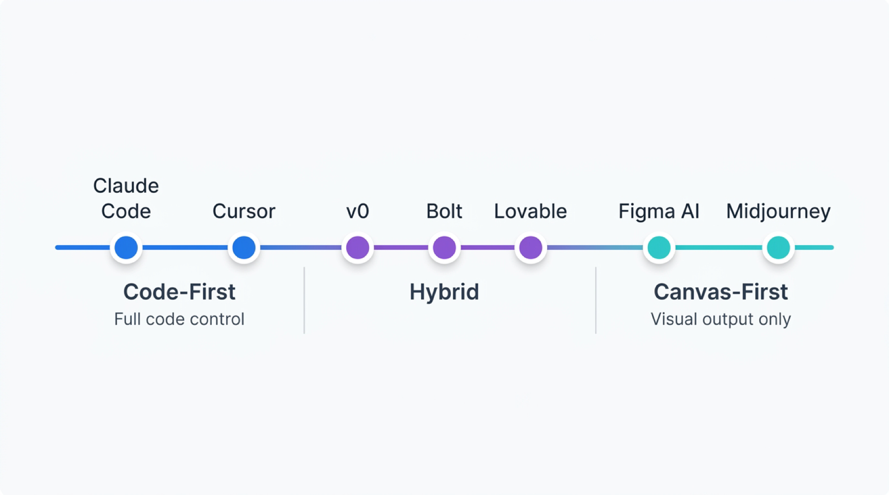
The AI design tool spectrum: from code-first control to canvas-first simplicity
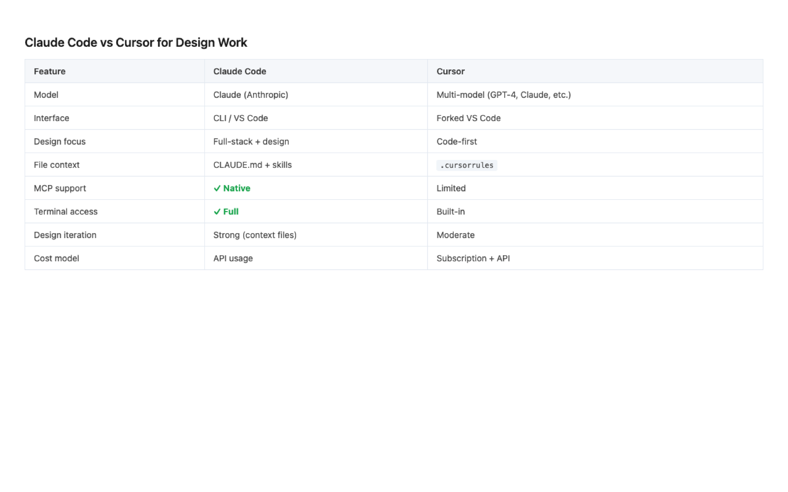
Claude Code vs Cursor: feature-by-feature comparison for design workflows
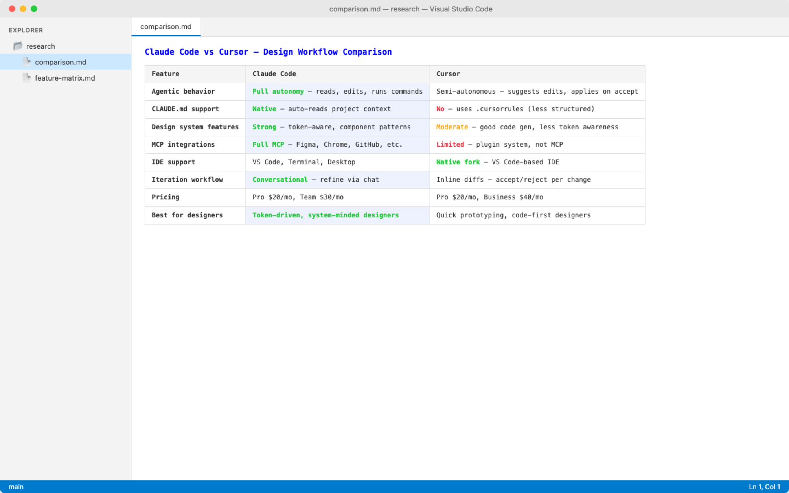
Feature matrix: six AI tools scored across eight design-relevant capabilities
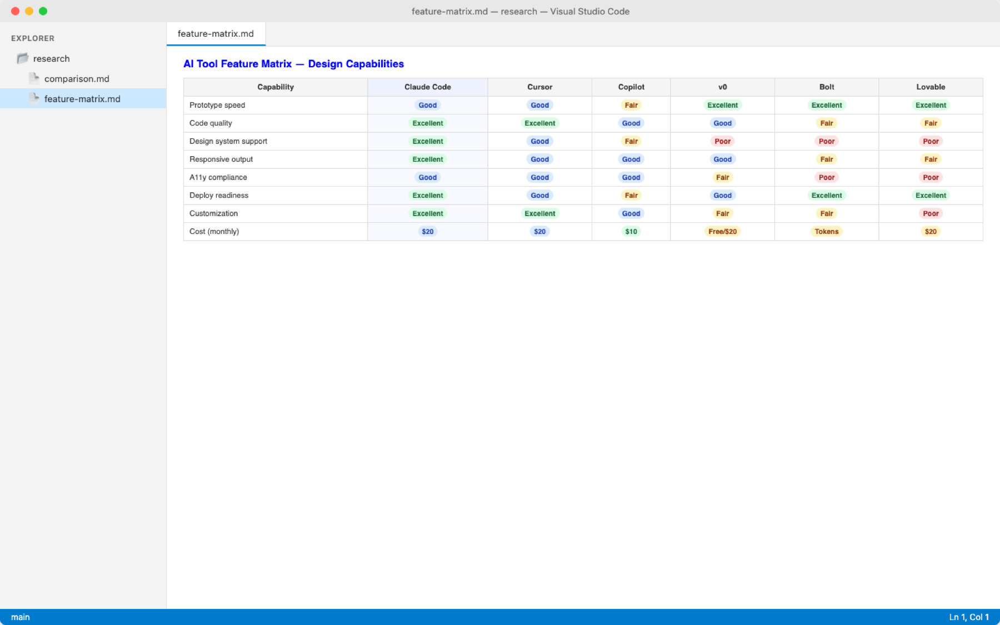
Which tool when: a decision flowchart for choosing the right AI tool for your situation
A Claude Code Command Reference for Designers
The commands, shortcuts, and settings you will actually use
Twenty commands, a handful of shortcuts, and the right settings are all you need for 90% of your design work in Claude Code.
A.1 Essential Commands
Essential Commands
These are the commands a designer uses day to day. Not an exhaustive list of everything Claude Code offers, but the subset that covers starting, running, reviewing, and managing your design-to-code sessions.
Starting and Resuming Sessions
Session Management Commands
Command
What It Does
When a Designer Uses It
claude
Start an interactive session
Beginning any design-to-code task
claude "prompt"
Start with an initial prompt
Quick one-off questions like "describe this layout"
claude -c
Continue last session
Picking up where you left off yesterday
claude -r "name"
Resume a named session
Returning to a specific design project
claude -p "query"
Non-interactive: print and exit
Scripting tasks like extracting design tokens from CSS
cat file.png | claude -p "describe"
Process piped content
Analyzing a design mockup from the command line
Setup and Maintenance
Setup and Maintenance Commands
Command
What It Does
When a Designer Uses It
claude update
Update to latest version
Keeping Claude Code current (check monthly)
claude auth login
Sign in to your account
First-time setup or after token expiry
claude auth status
Check authentication state
Diagnosing "not logged in" errors
claude mcp
Configure MCP servers
Connecting Figma, Notion, or other design tools
claude agents
Open background agent manager
Monitoring long-running design tasks
claude --version
Show installed version
Confirming you are on the latest release
Slash Commands by Workflow Stage
The slash commands you type inside a session are the ones you will use most often. Here they are organized by when you need them.
Slash Commands for Design Workflows
Stage
Command
What It Does
Starting a project
/init
Generate a CLAUDE.md with design system conventions
Starting a project
/mcp
Set up design tool connections (Figma, Notion)
Starting a project
/permissions
Pre-approve common tools so you stop getting prompted
During a task
/plan
Plan before a big design change
During a task
/compact
Free context (design screenshots eat a lot of context)
During a task
/model
Switch model mid-session
During a task
/effort
Adjust reasoning depth (low for quick tweaks, high for redesigns)
During a task
/btw
Quick question without bloating conversation history
Reviewing work
/diff
See all code changes Claude made to your design files
Reviewing work
/review
Have Claude review its own output for design consistency
Reviewing work
/copy
Grab generated CSS or HTML to clipboard
Managing sessions
/clear
Fresh conversation (keeps project memory)
Managing sessions
/export
Save the full conversation as a design decisions record
Troubleshooting
/doctor
Automated diagnostics for installation and settings
Troubleshooting
/context
See context window usage grid
Designer-Relevant CLI Flags
Flags modify how Claude Code runs. Here are the ones that matter for design work.
CLI Flags for Design Tasks
Flag
What It Does
Design Use Case
--model sonnet
Select a specific model
Use Sonnet for faster responses on style and layout tasks
--effort low|high
Set reasoning effort
Low for "extract the color palette." High for "rebuild this dashboard."
--permission-mode plan
Preview before executing
See what Claude would change before it touches your files
--add-dir ./assets
Add a working directory
Point Claude at a design assets folder alongside your code
--append-system-prompt "..."
Add to the system prompt
Specialize Claude for a design task: "You are a design system expert"
--max-budget-usd 2.00
Cap spending on a run
Limit cost on scripted batch design tasks (print mode only)
-n "my-task"
Name the session
Resume by name later instead of restarting
A.2 Keyboard Shortcuts
Keyboard Shortcuts
You do not need to memorize all of these. Start with the top five, add the rest as they become useful.
The Five Worth Memorizing
Essential Keyboard Shortcuts
Action
Mac
Windows / Linux
Why Designers Care
Paste image
Cmd+V (iTerm2)
Ctrl+V
Feed design mockups and screenshots directly into Claude
Interrupt
Esc
Esc
Stop Claude when it heads in the wrong design direction
Rewind changes
Esc Esc
Esc Esc
Undo code changes that broke your layout
Cycle permission modes
Shift+Tab
Shift+Tab
Switch to plan mode before a risky redesign
Transcript viewer
Ctrl+O
Ctrl+O
Inspect exactly what Claude did (files read, commands run)
Shortcuts for Regular Use
Additional Keyboard Shortcuts
Action
Mac
Windows / Linux
Cancel current operation
Ctrl+C
Ctrl+C
Background a running task
Ctrl+B
Ctrl+B
Redraw screen (fix garbled display)
Ctrl+L
Ctrl+L
Search command history
Ctrl+R
Ctrl+R
File mention
@
@
Shell mode (run a quick command)
!
!
Slash command menu
/
/
New line in prompt
\ then Enter
\ then Enter
Switch model mid-session
Option+P
Alt+P
Toggle extended thinking
Option+T
Alt+T
Tip
On macOS, the Option key shortcuts (Option+P, Option+T) require configuring "Option as Meta" in your terminal. In iTerm2: Settings → Profiles → Keys → set "Option Key" to "Esc+". In VS Code: set terminal.integrated.macOptionIsMeta to true in your settings.
A.3 Settings for Design Workflows
Settings for Design Workflows
Claude Code settings live in JSON files at different scopes. This section covers the settings that affect design output quality and daily workflow.
Settings Hierarchy
Settings are resolved in priority order. Higher-priority settings override lower ones:
Put these in your user-level settings file (~/.claude/settings.json) to apply them everywhere, or in your project settings to keep them scoped to a specific design project.
Fast and capable for CSS, components, and layout. Switch to Opus per-session for complex architecture.
effortLevel
"high"
Design work benefits from deeper reasoning. Override to low for simple extractions.
permissions.allow
["Read", "Edit"]
Pre-approve reading and editing so you stop getting prompted on every file change.
permissions.deny
["Bash(rm -rf *)"]
Prevent accidental recursive deletions. Safety net for your design files.
autoScrollEnabled
true
Follow new output automatically. Useful when Claude generates long HTML or CSS.
autoUpdatesChannel
"stable"
Stay on stable releases. Design workflows break less on stable than on latest.
editorMode
"normal"
Use normal mode unless you are a vim user.
theme
"dark" or "light"
Match your design tool theme for visual consistency.
Key File Locations
Configuration File Locations
File
Location
Purpose
User settings
~/.claude/settings.json
Personal defaults across all projects
Project settings
.claude/settings.json
Team-shared settings (commit to git)
Local overrides
.claude/settings.local.json
Personal overrides (gitignored)
User CLAUDE.md
~/.claude/CLAUDE.md
Personal instructions loaded every session
Project CLAUDE.md
CLAUDE.md or .claude/CLAUDE.md
Project-specific design system instructions
User MCP config
~/.claude.json
Personal MCP server connections (Figma, Notion)
Project MCP config
.mcp.json
Team-shared MCP server connections
My Take
Pre-approving routine reads and edits can speed up a trusted project, but do it deliberately. Start in ask/plan modes, watch several diffs, then narrow approvals to the working directory and common safe tools. Keep destructive commands, secret files, package publishing, deployment, and broad filesystem access behind explicit review.
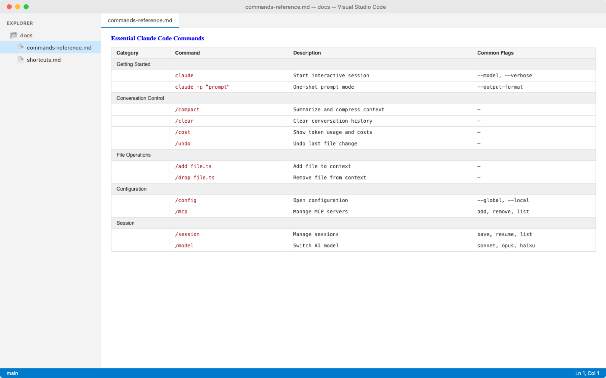
Essential Claude Code commands: a quick reference for designers
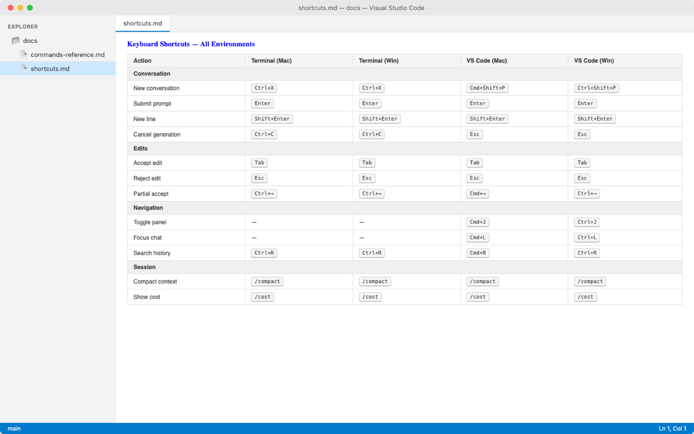
Keyboard shortcuts for Claude Code across all three environments
B Pricing, Plans, and Limits
What it costs, which plan to choose, and how to manage your usage
Understanding how Claude Code pricing works, and how to manage your usage, prevents bill shock and helps you get the most value from your subscription.
B.1 Plan Comparison
Plan Comparison
Claude Code is included with every paid Claude plan. The difference between plans is how much you can use it before hitting rate limits.
All pricing data below is a May 2026 snapshot. Anthropic updates pricing, limits, and plan packaging periodically. Verify current prices, plan features, and data-handling terms at official Anthropic pages before making decisions, and do not treat this appendix as procurement, legal, tax, or accounting advice.
Individual Plans
Individual Subscription Plans (as of May 2026)
Plan
Monthly Price
Claude Code
Usage Level
Best For
Free
$0
No
Baseline
Trying Claude chat before committing
Pro
$17/mo (annual) or $20/mo (monthly)
Yes
More than Free
Getting started with design-to-code work
Max 5x
$100/mo
Yes
5x Pro
Daily design-to-code work with heavy usage
Max 20x
$200/mo
Yes
20x Pro
Professional designers running Claude Code all day
Team and Enterprise Plans
Team and Enterprise Plans (as of May 2026)
Plan
Price
Claude Code
Key Features
Best For
Team Standard
$20/seat/mo (annual)
Yes
SSO, central billing, more usage than Pro
Design teams with occasional Claude Code users
Team Premium
$100/seat/mo (annual)
Yes
5x standard seat usage, all Team features
Design teams with heavy Claude Code power users
Enterprise
$20/seat + API usage rates
Yes
SCIM, audit logs, HIPAA-ready, spend limits
Design orgs needing compliance and admin controls
Warning
Usage limits are the most common reason people upgrade. Anthropic does not publish specific token counts or message limits. Limits are described relative to each other (Max 5x = 5x Pro usage). When you hit a limit, you see a rate limit error and must wait or upgrade. If you use Claude Code for more than an hour a day, budget for Max 5x.
Plan Recommendations for Designers
Which Plan for Which Designer
You Are
Your Usage
Recommended Plan
Monthly Budget
Exploring AI coding tools
A few sessions per week
Pro
$17-20
Serious design-to-code practitioner
1-3 hours daily
Max 5x
$100
Full-time AI-assisted designer
All day, every day
Max 20x
$200
Design team lead
Mix of power users and casual users
Team (mix standard + premium seats)
$20-100 per seat
Design org at a large company
Many teams, compliance needs
Enterprise
$20/seat + usage
B.2 Usage Optimization
Usage Optimization
Context is the currency of Claude Code. Every file read, every screenshot pasted, every command output consumes context. Managing it well means more productive sessions and fewer rate limit hits.
Usage Optimization Techniques
Technique
How
Savings
Trade-off
Use Sonnet for routine tasks
/model sonnet or --model sonnet
Faster responses, fewer tokens
Slightly less capable than Opus for complex architecture
Set effort level to match the task
--effort low for extractions, high for redesigns
30-50% fewer tokens on simple tasks
Low effort produces shallower analysis
Compact between major tasks
/compact or /compact "keep only design tokens"
Frees 40-70% of context window
Loses detailed conversation history
Clear between unrelated tasks
/clear
Full context reset
Loses all conversation history (project memory remains)
Use /btw for quick questions
/btw what was that color hex?
Question does not enter conversation history
Claude cannot reference the answer later
Name and resume sessions
-n "dashboard-redesign" then claude -r "dashboard-redesign"
Avoids reloading context from scratch
Old sessions accumulate stale context over time
Minimize screenshot sizes
Crop to relevant area before pasting
Reduces image token consumption significantly
Needs manual cropping step
Use Haiku for simple extractions
--model haiku for "extract all font sizes from this CSS"
Cheapest model, fastest responses
Not suitable for complex design tasks
Tip
Design mockup screenshots consume significant context. A full-page mockup can use thousands of tokens. Before pasting a screenshot, crop it to the specific component or section you want Claude to analyze. You get better-focused output and save context for more iteration rounds.
API Pricing Reference
If you are using Claude Code through an Anthropic Console (API) account rather than a subscription, pricing is per million tokens.
API Pricing per Million Tokens (as of May 2026)
Model
Input
Output
Cache Read
Batch (50% off)
Opus 4.7
$5
$25
$0.50
50% off all prices
Sonnet 4.6
$3
$15
$0.30
50% off all prices
Haiku 4.5
$1
$5
$0.10
50% off all prices
For most designers, the subscription model (Pro, Max, Team) is simpler and more predictable than API pricing. API pricing becomes relevant only if you are building custom integrations or your organization uses the Enterprise plan.
B.3 Cost Management Strategies
Cost Management Strategies
Managing costs with Claude Code is about making the most of every session. Here are the practical patterns that keep spending predictable.
Cost Management Checklist
Action
When
Impact
Monitor context with /context
Every 3-4 prompts in a long session
See where your context is going before you run out
Run /compact between tasks
After finishing a design task, before starting the next
Frees context without losing project knowledge
Use --max-budget-usd for scripted runs
Batch operations, token extraction scripts
Hard cap prevents runaway spending
Start with Pro, upgrade on demand
When you hit rate limits consistently
Pay only for what you need
Use --effort low for simple tasks
Color extraction, font listing, file scanning
Reduces token usage without sacrificing quality on simple tasks
Break large tasks into sessions
Major redesigns, multi-page builds
Each session starts fresh, avoiding accumulated context bloat
Third-Party Provider Options
Claude Code also works with third-party cloud providers. If your organization already has a contract with one of these, you might be able to use existing credits instead of a separate Claude subscription.
Third-Party Provider Support
Provider
Setup
Pricing
Amazon Bedrock
AWS credentials (aws sts get-caller-identity)
Your AWS negotiated rates
Google Vertex AI
ANTHROPIC_VERTEX_PROJECT_ID + CLOUD_ML_REGION
Your GCP negotiated rates
Microsoft Foundry
ANTHROPIC_FOUNDRY_API_KEY
Your Azure negotiated rates
Budget-capped batch command examplebash
claude -p "Extract all color variables from main.css and list them as design tokens" \
--model haiku \
--effort low \
--max-budget-usd 0.50 \
--max-turns 3
This command runs a quick extraction task using the cheapest model, limits the agentic turns to three, and caps spending at fifty cents. For repetitive tasks like extracting design tokens, auditing color usage, or scanning CSS files, this pattern keeps costs negligible.
My Take
For individual designers, Pro is the right starting point. The free tier does not include Claude Code, so Pro is your minimum entry. Start with Pro, use it for a month, and see if you hit rate limits. The Pro plan page itself says rate limits are the most common reason people upgrade. If you are using Claude Code daily for real design-to-code work, budget for Max 5x. It is the tier where usage stops being a concern and you can focus on design instead of rationing sessions.
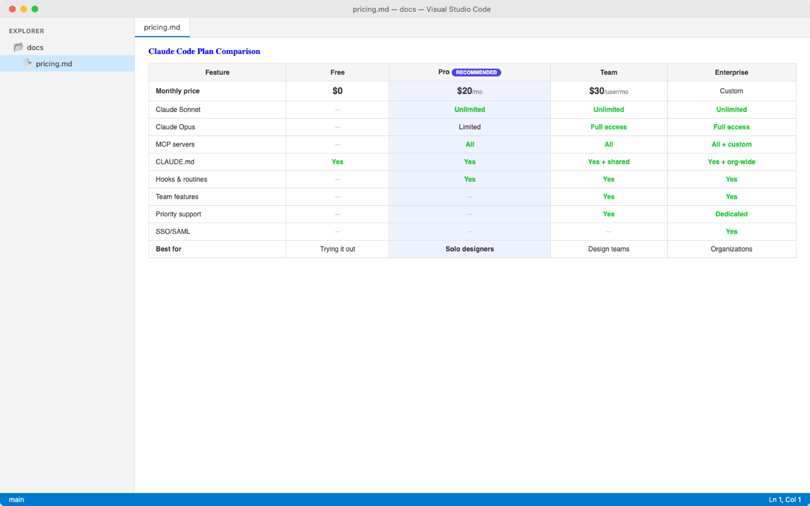
Claude Code plan comparison: which tier makes sense for your design workflow
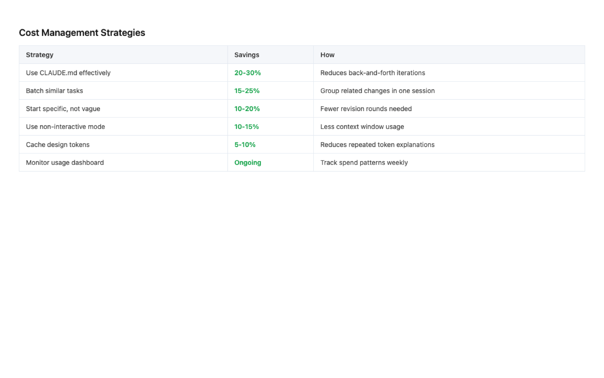
Cost management strategies: six ways to reduce your Claude Code usage spend
C Troubleshooting and FAQ
Fixes for common problems, answers to frequent questions
Most Claude Code problems have simple fixes. Find your symptom, read the fix, get back to work.
C.1 Installation Problems
Installation Problems
The most common installation errors and their fixes, organized by what you see on screen.
Installation Troubleshooting
Symptom
Platform
Cause
Fix
command not found: claude
macOS / Linux
Install directory not in PATH
Run echo 'export PATH="$HOME/.local/bin:$PATH"' >> ~/.zshrc && source ~/.zshrc (Zsh) or the Bash equivalent. Verify with claude --version.
'claude' is not recognized
Windows
Install directory not in PATH
Add %USERPROFILE%\.local\bin to User PATH in System Settings → Environment Variables.
dyld: cannot load
macOS
macOS version too old
Update to macOS 13 (Ventura) or later.
Killed during install
Linux
Out of memory
Add 2 GB swap space. Claude Code needs at least 4 GB available RAM.
Illegal instruction
Linux
CPU lacks AVX support
Your processor is roughly pre-2013. No fix except newer hardware.
Install script returns HTML / syntax error near unexpected token '<'
All
Region blocked or network error
Claude Code is not available in all countries. Check anthropic.com/supported-countries. Also try: set HTTPS_PROXY if behind a corporate firewall.
TLS / SSL connection errors
All (corporate networks)
Firewall or proxy blocking
Set HTTPS_PROXY and HTTP_PROXY. Update CA certificates. Use NODE_EXTRA_CA_CERTS for corporate CA bundles.
Install hangs in Docker
Docker
Running installer from root directory
Set WORKDIR /tmp before running the installer.
Conflicting Installations
Having multiple Claude Code installations (native installer, npm, Homebrew, WinGet) can cause version conflicts. Diagnose with which -a claude (macOS/Linux) or where.exe claude (Windows). Keep only the native installer at ~/.local/bin/claude and remove others:
Run npm config set os linux then npm install -g @anthropic-ai/claude-code --force
Browser opens on wrong machine
OAuth callback cannot reach local browser
Press c at login prompt to copy URL. Open in your local browser. Paste the code back.
C.2 Common Issues and Fixes
Common Issues and Fixes
The problems designers encounter most during normal use, with direct fixes and prevention tips.
Quick Diagnostic Flowchart
Before digging into specific issues, run /doctor inside Claude Code. It checks authentication, binary integrity, settings, MCP servers, and context usage automatically. Press f to have Claude fix reported issues.
Common Runtime Issues
Problem
Likely Cause
Fix
Prevention
Claude edits the wrong files or makes unwanted changes
Too much autonomy without review
Press Esc+Esc to rewind changes. Use /diff to review all edits.
Use Shift+Tab to switch to plan mode before risky changes.
High memory / CPU usage
Large codebase or accumulated context
Run /compact. Restart between major tasks. Add build directories to .gitignore.
Compact regularly. Keep .gitignore current.
"Autocompact is thrashing" error
A file or tool output keeps refilling the context
Ask Claude to read files in smaller chunks. Run /compact with focus instructions. Move large-file work to a subagent.
Avoid pasting full-page screenshots. Crop to relevant areas.
Session hangs or becomes unresponsive
Claude is stuck on a long operation
Press Ctrl+C to cancel. If unresponsive, close terminal and run claude --resume.
Break large tasks into smaller prompts.
Search not finding files
Bundled ripgrep binary incompatible with your system
Install system ripgrep. Set USE_BUILTIN_RIPGREP=0.
Keep system ripgrep installed as a fallback.
Output quality is inconsistent across sessions
No CLAUDE.md or stale CLAUDE.md
Create or update your CLAUDE.md with current design tokens and conventions. See Chapter 5.
Review CLAUDE.md monthly. Prune stale entries.
Rate limit errors
Exceeded plan usage limits
Wait for the limit window to reset. Run /compact and /clear to reduce per-session usage. Upgrade plan if consistent.
Use /context to monitor usage. Compact between tasks.
OAuth login fails
WSL, SSH, or container environment
Press c at the login prompt to copy the OAuth URL. Open in a local browser. Paste the code into the terminal.
Use the Desktop app for environments where OAuth is unreliable.
"This organization has been disabled" with active subscription
ANTHROPIC_API_KEY env variable overriding OAuth
Run unset ANTHROPIC_API_KEY and log in again with claude auth login.
Do not set ANTHROPIC_API_KEY if using a subscription.
Terminal display is garbled
Terminal rendering issue
Press Ctrl+L to redraw. Try a different terminal (iTerm2, Windows Terminal).
Use the Desktop app to avoid terminal rendering issues entirely.
Platform-Specific Gotchas
Platform Gotchas
Platform
Gotcha
Fix
macOS
Option key shortcuts do not work
Configure "Option as Meta" in terminal settings (iTerm2: Profiles → Keys)
Windows
claude opens Desktop app instead of CLI
Update Claude Desktop to latest version
Windows CMD
&& is not valid error
You are in PowerShell, not CMD. Use the CMD-specific installer.
WSL2
Slow file operations
Move project to Linux filesystem (/home/) instead of /mnt/c/
Linux (musl)
Shared library errors
Install libgcc libstdc++ ripgrep via apk add
Corporate network
TLS/cert errors on install
Set HTTPS_PROXY, update CA certs, use NODE_EXTRA_CA_CERTS
Tip
If Claude Code will not start at all, run claude doctor from your regular terminal (not inside a Claude session). This runs the same diagnostics as /doctor but works even when Claude Code cannot launch properly.
C.3 Frequently Asked Questions
Frequently Asked Questions
The questions designers ask most often about Claude Code, with direct answers.
Designer FAQ
Question
Answer
Can I use Claude Code without paying?
No. Claude Code requires a paid plan (Pro, Max, Team, or Enterprise) or an Anthropic Console API account. The Free plan does not include Claude Code.
Do I need to know how to code to use Claude Code?
No. You need to describe what you want. Claude handles the code. Understanding a few CSS concepts (padding, margin, flexbox) helps you write better prompts, but writing code yourself is not required.
I pasted a design mockup but Claude cannot see the image. What is wrong?
Use Ctrl+V (or Cmd+V in iTerm2, Alt+V on Windows) to paste images. The image should appear as an [Image #N] chip in your prompt. If your terminal does not support image paste, use the Desktop app or VS Code extension instead.
Claude Code keeps running out of context when I work with design files. What can I do?
Run /compact between tasks. Ask Claude to read design files in smaller sections. Crop screenshots to relevant areas instead of pasting full-page mockups. Run /context to see where your context is going.
I am hitting rate limits on Pro. Should I upgrade?
Rate limits are the most common reason people upgrade from Pro to Max. If you use Claude Code daily for design-to-code work, Max 5x ($100/mo) gives you 5x the usage. For heavy professional use, Max 20x ($200/mo) provides the most headroom.
Can I use Claude Code on Windows?
Yes. Native Windows via PowerShell or Git for Windows Bash, WSL2, and the Desktop app all work. WSL1 has known issues and should be converted to WSL2.
Claude is editing the wrong files or making changes I did not ask for.
Use Shift+Tab to switch to plan mode, where Claude explains what it would do before doing it. If unwanted changes were made, press Esc+Esc to rewind. Use /diff to review all changes.
How do I connect Claude Code to Figma?
Use Figma's current Claude Code MCP setup path first, usually the official plugin plus OAuth. Run /plugin or /mcp to check connection status. Use community servers only after you trust the maintainer, scopes, and secret handling.
My terminal looks garbled or the display is broken.
Press Ctrl+L to redraw the screen. If it persists, try a different terminal (iTerm2 on macOS, Windows Terminal on Windows). The Desktop app avoids terminal rendering issues entirely.
Can I use Claude Code with my team's existing AWS or GCP account?
Yes. Claude Code supports Amazon Bedrock, Google Vertex AI, and Microsoft Foundry as alternative providers. Each uses your existing cloud credentials and negotiated rates.
Is Claude Code available in my country?
Claude Code is not available in all countries. Check anthropic.com/supported-countries for the current list.
Where do I report bugs or request features?
Run /feedback inside Claude Code to report issues directly to Anthropic. You can also file issues at github.com/anthropics/claude-code/issues.
My Take
Ninety percent of the issues designers encounter with Claude Code fall into two categories: context management and installation setup. Context issues (running out of space, thrashing, slow responses) are solved by building a habit of running /compact between tasks and cropping screenshots before pasting. Installation issues are one-time problems that vanish once your PATH, authentication, and terminal are configured correctly. Run /doctor once after setup, fix anything it flags, and you are set. If something breaks later, this appendix and the /doctor command are your first stops.
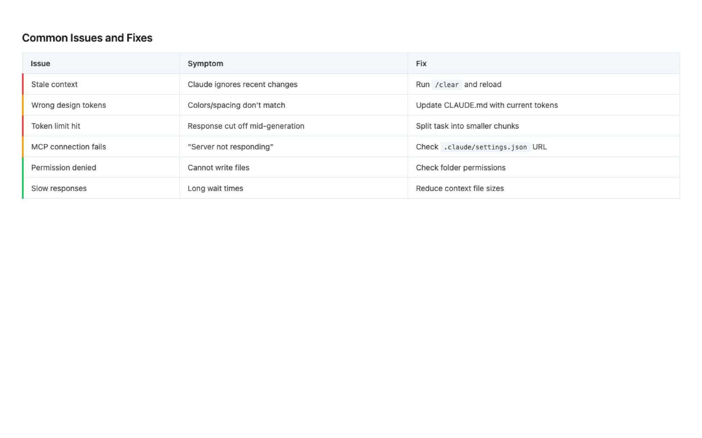
Common issues and fixes: the six problems designers hit most often
Disclaimer
This book was written with the assistance of AI tools. All code examples have been verified to the best of the author's ability at the time of writing. Claude Code features evolve rapidly; check official docs for the latest capabilities.